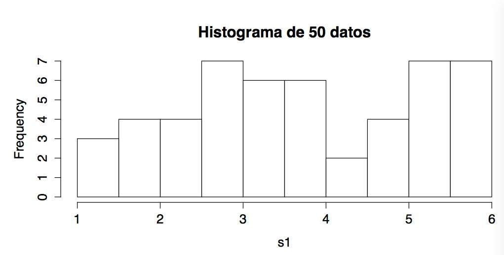

Capítulo 15 Problemas
15.1 ¿Qué es la estadística?
Prob I.1 En grupos de 3 ó 4 personas (ni 2 ni 5) deben crear un breve video (aprox. 5 min.) explicando qué es la estadística para ustedes. Suban el video a YouTube o cualquier otro lugar público.Deben entregar un PDF con el nombre de los integrantes del equipo y la URL del video.
Habrá un premio al mejor video.
Prob I.2 En el Diario de Mallorca encontramos el titular: “La venta de megachalés en Mallorca se estabiliza con precios de más de cuatro millones” (https://www.diariodemallorca.es/mallorca/2020/02/19/venta-megachales-estabiliza-precios-cuatro/1487500.html). Lean la noticia. En ningún sitio lo indica explícitamente, pero deduzcan razonablemente cuál es la población y cuál es la muestra de esta estadística. Escriban un párrafo, que podría aparecer en la noticia, en donde se indica la población y muestra del estudio.
Indiquen también otra muestra diferente que se podría haber escogido para hacer esta estadística.
Prob I.3 Está interesado en averiguar el porcentaje de alumnos de la UIB que usa cada biblioteca de la universidad. Idee un experimento estadístico para averiguarlo. Establezca la población, y explique cómo va a obtener una muestra significativa y qué medidas va a tomar.
Prob I.4 Lee en un titular de periódico: “El graduado medio de la UIB gana 78 215,31€ al año”. ¿Cuál cree que es la población? Indique una forma razonable por la que se pudo obtener una muestra representativa.
Prob I.5 La siguiente gráfica muestra los seísmos registrados en España desde 1985 al 2008. Se ve un destacado incremento. Un posible motivo es que el número de seísmos en España haya crecido en esos años. Pero no es la úica explicación. Indique al menos otras 2 razones que pueden explicar el incremento.
Prob I.6 Si queremos obtener datos de una población muy grande tomamos una muestra: unos pocos elementos de la población que esperamos nos permitan obtener un conocimiento adecuado de toda la población. Por ejemplo las encuesta de opinión son de sólo unos cientos o pocos miles de personas, o en un control de calidad se miden sólo unas docenas de productos fabricados cada día. Esto da lugar a la variación de muestreo: si hubiéramos escogido otros elementos, hubiéramos obtenido datos diferentes. Esta es una de las principales fuentes de incertidumbre en estadística. A continuación pueden ver los datos de cuatro muestras en forma de histogramas y diagramas de cajas. En la primera tienen la población completa de la cual obtenemos muestras. Las otras tres son muestras de 40 elementos. Dos están tomadas de la población, y la otra puede estar tomada de la misma población o puede haber sido tomada de otra población diferente. Indique si cree que las 3 están tomadas de la misma población o no, y si no, cuál es la que es de una población diferente. Expliquen su respuesta.
Prob I.7 Si queremos obtener datos de una población muy grande tomamos una muestra: unos pocos elementos de la pobación que esperamos nos permitan obtener un conocimiento adecuado de toda la población. Por ejemplo las encuesta de opición son de sólo unos cientos o pocos miles de personas, o en un control de calidad se miden sólo unas docenas de productos fabricados cada día. Esto da lugar a la variación de muestreo: si hubiéramos escogido otros elementos, hubiéramos obtenido datos diferentes. Esta es una de las principales fuentes de incertidumbre en estadística. A continuación pueden ver los datos de cuatro muestras en forma de histogramas y diagramas de cajas. En la primera tienen la población completa de la cual obtenemos muestras. Las otras tres son dos muestras de 40 elementos tomados de esa misma población y otra es una muestra de 40 individuos tomada de otra población diferente. Indiquen cuál de las 3 creen es de la otra población. Expliquen su respuesta.
Prob I.8 En todas las universidades españolas se hacen encuestas de satisfacción a los alumnos. En la UIB, como en muchas otras, la encuesta se hace en línea, solicitando a los alumnos que la rellenen en un plazo determinado hacia final de curso. ¿Es esta una buena manera de hacer una encuesta? Debe explicar los defectos del método y proponga formas de mejorarlo.
Prob I.9 Quieren establecer si estudiar justo antes de ir a dormir es mejor que estudiar mucho antes de ir a dormir. Digan una buena y mala manera de conseguir una muestra. Expliquen cómo harían un experimento para determinar si la hipótesis del estudio es cierta.
Prob I.10 Quieren establecer si el café ayuda a mantenerse alerta en las clases de primera hora de la mañana. Digan una buena y mala manera de conseguir una muestra. Expliquen cómo harían un experimento controlado para determinar si la hipótesis del estudio es cierta.
Prob I.11 Explique algún error estadístico enorme que haya aparecido en la prensa. La explicación debe basarse en el curso y ser adecuado para los estudiantes de la asignatura. Puede basarse en informes ya existentes (por ejemplo en la web de Malaprensa), pero es imprescindible que lo “traduzca” a un lenguaje adecuado a la asignatura: si es demasiado coloquial, debe hacerlo más técnico. Si es demasiado técnico, debe rebajarlo (regla de oro: si hay alguna palabra o expresión que no entiende, no la use). Debe entregar un enlace a la noticia o noticias y su explicación.
Prob I.12 Nicholas Nassim Taleb es un especialista en finanzas que ha escrito libros sobre probabilidad y estadística. En su cuenta de Twitter, ante la noticia de que un prestigioso financiero francés se iba a mudar a Estados Unidos comentó: “Lo que consigue así es bajar la media en los dos países”. Explique la “mala leche” de este comentario.
Prob I.13 Usted coge el transporte hasta la universidad en la Plaza de España y se está preguntando si es más rápido coger el autobús o el metro. Diseñe un experimento para determinar si uno es más rápido que el otro.
Debe establecer cuál es la población, cuál es la muestra de su experimento y cómo va a tomar los datos.
Prob I.14 Indique la población y la muestra en los siguientes casos:
Para saber la incidencia de una enfermedad en España se escoge el hospitales públicos “de referencia” de cada provincia y se cuentan cuántos de los que han ido a urgencias en una semana determinada tienen la enfermedad.
Para determinar el peso de las naranjas de un huerto se escogen al azar un día determinado el 100 naranjas de las recogidas ese día.
Para saber cuánta basura se genera en Mallorca, se pesa cuánta basura llega al vertedero de Son Reus en 17 días escogidos al azar de los del año.
Para establecer el voltaje que entregan las fuentes de alimentación fabricadas, se escogen al azar 5 de cada remesa y se miden.
Para determinar la nota de los alumnos de una asignatura, se miran todas las notas obtenidas por los alumnos matriculados un determinado año.
Prob I.15 En la recordada serie cómica Yes, minister sobre el funcionamiento de un ministerio británico, se explica cómo conseguir el resultado deseado en una encuesta a base de escribir “astutamente” las preguntas. Miren el clip del video (en inglés: https://www.youtube.com/watch?v=G0ZZJXw4MTA, en catalán https://www.youtube.com/watch?v=6WfGOaxkFBs).
Digamos que les encarga una encuesta de opinión sobre si los libros de texto en los colegios e institutos deberían ser gratuitos o no. Escriban dos listas de preguntas, una empujando hacia el sí, y otra empujando hacia el no.
Prob I.16 Queremos estudiar la influencia de la dieta en una determinada enfermedad. Para ellos hacemos dos estudios. Para no complicar la explicación supondremos que los estudios son pequeñitos, pero se pueden hacer de tamaño adecuado.
Para un estudio se escogen al azar dos pueblos: Vila del mar de abajo y Tira pal monte de arriba. Ambos pueblos tiene el mismo numero de habitantes. En Vila del mar se consumen 10.000 Kg de pescado al año, en Tira pal monte se consumen 3000 Kg de pescado al año. Mirando los historiales de los hospitales locales, en Vila del mar han contraído la enfermedad 450 personas durante el año y en Tira pa arriba lo han contraído 912 personas.
Para el otro estudio escogemos al azar 100 personas de cada uno de los pueblos y se divide el consumo de pescado de estas 200 personas entre alto, medio y bajo. Entre los de consumo alto han contraído la enfermedad 21 personas, entre los de consumo medio lo han contraído 17, y entre los de consumo bajo lo han contraído 13.
Los dos estudios parece que llegan a resultados que se contradicen. Con una muestra pequeña esto puede pasar, pero repito que simplemente estoy explicando el experimento usando una muestra pequeña: con una muestra suficientemente grande vemos el mismo efecto.
Para intentar entender lo que pasa establezcan cuál es la población y la muestra en cada estudio. Aventuren alguna explicación de por qué los resultados son sólo aparentemente contradictorios.
Prob I.17 Coja una moneda y tome 3 muestras de 16 lanzamientos. Dibújelos como diagramas de barras (puede usar R, pero no es obligatorio). Repita con 3 muestras de 32 lanzamientos.
Coja un dado y tome 3 muestras de 36 lanzamientos. Dibújelos como diagramas de barras. Repita con 3 muestras de 72 lanzamientos.
Es importante que no tome muestras de más. No repita porque una “sale mal”.
A partir de los diagramas que ha obtenido, ¿cree que es factible determinar la forma del diagrama de una población a partir del de una muestra? Explique bien sus conclusiones (es lo más importante de este ejercicio).
15.2 Manejo de R y simulaciones
Prob R.1 Supongamos una línea sobre la que tenemos 2 cargas, una de \(+10\) mC en la posición \(-5\) metros y otra de \(-5\) mC en la posición \(+ 5\) metros. Calcule el campo eléctrico creado por estas cargas en la línea que las une desde \(-15\) metros a \(+15\) metros. Como es costumbre, consideraremos positivo el si el campo está dirigido hacia la derecha. Dibuje la gráfica correspondiente.
Debe entregar un fichero PDF con el guión de R y la gráfica obtenida.
Prob R.2 Partimos del conjunto de datos samhda del paquete UsingR. Lean el help para saber qué datos hay, los nombres de las variables y la codificación de los niveles. Nos interesan dos variables cualitativas: el curso en el que están los alumnos (grade) y cuánto fuman (amt.smoke). Cree una tabla de contingencia de frecuencias absolutas con estas dos variables. Elimine los “no sabe/no contesta” (nivel 9 en grade y niveles 98 y 99 en amt.smoke). Cambie los nombres de las filas y columnas por algo más inteligible. Cree dos gráficas de barras agrupadas (no apiladas), de frecuencias relativas, una agrupada por curso y otra por cantidad fumada, de manera que cada agrupación sume 1. Use colores y leyenda.
Debe mostrar el código de R utilizado y las dos gráficas.
Prob R.3 Partimos del conjunto de datos Cars93 del paquete MASS (incluida en la distribución de R). Dibuje en azul el peso del coche (Weight) en función de su longitud (Length) para coches del tipo pequeño (Small). Calcule su recta de regresión y añádala, también en azul. Añada los puntos de los coches de la categoría furgoneta (Van) en rojo. Calcule su recta y añádala (en rojo). Nota: use los parámetros xlim y ylim para indicar los valores máximos y mínimos. Los valores por defecto que escoge R le van a dejar muchos puntos fuera del dibujo.
Dibuje la gráfica adecuada (ya sea diagrama de cajas o de puntos) para mostrar la potencia (Horsepower) en función de la tracción (DriveTrain). La tracción puede ser delantera, trasera o a las cuatro ruedas.
Considere que el número de cilindros (Cylinders) es una variable cualitativa. Dibuje el diagrama de barras de las frecuencias absolutas del número de cilindros en función del tipo de coche. Use barras agrupadas (no apiladas), agrupadas por número de cilindros y un color diferente por tipo. Elija colores que se contrasten, pero sean agradables. No se olvide de añadir la leyenda.
Dibuje el diagrama de barras de las mismas variables, pero ahora con frecuencias relativas, apiladas y agrupadas por tipo y con un color diferente por número de cilindros. Elija colores que se contrasten, pero sean agradables. No se olvide de añadir la leyenda.
Debe entregar el guión de R y las gráficas.
Prob R.4 Partimos de una baraja. Como no nos importan los palos, lo puede crear en R con la instrucción baraja = rep(1:13, 4). Vamos a calcular la probabilidad de dos casos y simularlo después en R.
Primer caso: Calcule la probabilidad de coger dos cartas de la baraja y obtener dos ases. Simule esto con R mil veces y cuente cuántas veces obtiene dos ases ¿Más o menos concuerda?
Segundo caso: calcule la probabilidad de obtener dos cartas iguales. Simule esto con R mil veces y cuente cuántas veces obtiene dos ases dos cartas iguales. ¿Más o menos concuerda?
Dibuje un diagrama de barras agrupado. Hay dos grupos, uno por caso y en cada grupo hay dos barras, una con el resultado teórico y otra con el de su simulación.
Debe entregar sus cálculos,el guión de R, los resultados de su simulación y la gráfica.
Prob R.5 Una distribución continua importante en muchos ámbitos es la distribución logística. Depende de 2 parámetros, \(\mu\) y \(s\). Su función de densidad es
\[f(x; \mu, s) = \frac{e^{-(x-\mu)/s}}{s(1 + e^{-(x-\mu)/s})^2}\]
Dibuje en R las funciones de densidad para valores de \(x\) entre \(-10\) y \(10\) y cuatro casos para \(\mu = 0\), \(\mu = 2\) y \(s = 1\) y \(s = 3\). Use 4 colores diferentes.
Aunque se sabe integrar esta función, calcule su función de distribución numéricamente: considere intervalos muy pequeños (0,01, por ejemplo) y suponga que el valor de la función de densidad es constante en cada intervalo. Así integrar es simplemente ir sumando las áreas de los rectángulos. Calcule los valores de la función de distribución para los mismos parámetros y dibuje las funciones de distribución. Use los mismos colores que para la función de densidad.
Para tener una idea del error cometido al sumar, haga una segunda gráfica para el caso \(\mu = 0, s = 1\), con los valores que ha calculado y los valores reales. Para los valores reales tanto puede buscar cuál es la expresión de la función acumulativa de distribución, o usar la función que viene incorporada en R.
Muestre el script usado y las gráficas.
Prob R.6 Cree una función en R, que muestre los valores mayores o menores de un vector.
La función debe llamarse maxomin y tiene 3 parámetros:
- x: el vector
- n: el número de elementos a mostrar. Por defecto n = 5
- max: valor booleano. Si vale TRUE (el valor por defecto) muestra los n valores mayores. Si es FALSE, muestra los n valores menores
La función devuelve un vector de n posiciones con los n elementos mayores o menores del vector.
La función sort() les puede ser útil. Hagan algo razonable si n es mayor que la longitud del vector.
Debe entregar la definición en R de la función y una sesión breve en la que se demuestre su funcionamiento con 3 ejemplos de uso.
Prob R.7 El diagrama que utilizamos para variables cualitativas es el diagrama de barras. Si le añadimos los intervalos de confianza, obtenemos las barras de error. Tenemos datos de color de ojos nos dice de 476 personas. De ellas, tenemos 64 con ojos azules, 87 con ojos verdes, 304 con ojos marrones y 21 con ojos negros. Calcule los intervalos de confianza con un nivel de confianza del 95% y dibuje las barras de error.
Debe mostrar el guión de R y la gráfica obtenida.
NOTA: Si busca por ahí seguro que encontrará una función de R que le dibuje las barras de error. No la use. Debe crear su propio diagrama con su propio código.
Prob R.8 Un Anova requiere que tengamos los datos como dos columnas de un data frame, una con la variable numérica y otra con el factor. Si tenemos los datos como un conjunto de vectores hemos de crear primero el data frame. Cree una función llamada list2df() para hacerlo.La función tiene tres parámetros:
- x es una lista con los vectores. Una lista es una estructura de datos muy versátil donde cada elemento de la estructura puede ser cualquier cosa de cualquier longitud y no tienen por qué ser todos iguales. Se crea mediante la función list().
- nom_niv es un vector con los nombres que se quiere dar a cada nivel del factor. Por defecto vale NULL. La longitud de nom_niv debe ser el mismo que el numero de elementos de la lista. Si no se dan los nombres asigne unos nombres adecuados por defecto.
- nom_var es un vector con los nombres de las variables. Su longitud es 2. Por defecto vale NULL. Si no se dan los nombres asigne “N” a la variable numérica y “Q” al factor
La función devuelve un data frame con dos columnas con los valores debidamente emparejados.
Debe entregar la definición de la función y algunos ejemplos de uso.
Prob R.9 El objetivo es estudiar lo que afecta al cálculo del IC de medias el que la distribución de la población sea problemática. Para crear una población muy problemática y otra nada problemática use las siguientes instrucciones:
pobl_P = c(rnorm(1000, 30, 2), rexp(500, 1), rnorm(5, 100, 3))
pobl_NP = rnorm(1000, 20, 2)Calcule las medias para cada población. Repita 200 veces:
- coja una muestra de tamaño 5 para cada población,
- calcule su intervalo de confianza de medias con un nivel de confianza del 90%. Puede usar su propia función si la ha hecho, o si no t.test(
)[[4]] le da el intervalo de confianza. - mire para cada intervalo de confianza si la media de la población correspondiente está o no en el intervalo.
Con un nivel de confianza de 0.9, tocaría haber unas 180 intervalos con la media en ella. ¿Es así para la población no problemática?¿Y para la problemática?¿Qué conclusión saca?
Prob R.10 Un condensador cilíndrico consiste en dos cilindros conductores, uno dentro de otro, separados por un dieléctrico. Los radios de los cilindros interior y exterior son \(R_{1}\) y \(R_{2}\), y \(L\) es la longitud de los cilindros. Este condensador puede tener capacidad variable si metemos o sacamos el cilindro interior del exterior. La capacidad del condensador viene dado por la expresión \[ C = \frac{L}{2 k \log \frac{R_{2}}{R_{1}}}\] donde log es el logaritmo natural o neperiano y \(k\) es una constante que depende del dieléctrico y que supondremos vale \(2,3 \cdot 10^5\).
Queremos que calculen con R cómo varía la capacidad del condensador en las siguientes condiciones:
\(R_{1} = 35\) mm y \(R_{2}\) variando de 36 mm a 50 mm a incremento de 1 mm. \(L = 55\) mm.
\(R_{2} = 50\) mm y \(R_{2}\) variando de 49 mm a 35 mm a decrementos de 1 mm. \(L = 55\) mm.
\(R_{1} = 35\) mm y \(R_{2} = 40\) mm con \(L\) variando de 30 a 60 mm a incrementos de 3 mm.
Escriba un guión (script) de R para calcular la capacidad en cada
condición. Para cada condición queremos el resultado de dos maneras.
La primera es numérica y debe ser un vector llamado “capacidad” que
muestre la capacidad del condensador para cada valor de la variable y
la segunda es una gráfica de la capacidad en función de la variable.
Muestre en un documento PDF el script, los valores numéricos
obtenidos y las gráficas.
Si tuviera que construir un condensador cilíndrico, ¿cuál de las tres variables considera que es que hay que ir con más cuidado, la que un pequeño error de construcción puede dar lugar a variaciones mayores de capacidad?
Prob R.11 R tiene una gran capacidad gráfica, sobre todo a través de su paquete ggplot2. Aprenda a hacer gráficas con este paquete y escriba un breve informe explicándolas. No pueden ser las gráficas ya conocidas (histogramas, diagrama de cajas, etc). Debe entregar un script de demostración y un breve informe explicativo.
Prob R.12 Escriba una función en R para dibujar intervalos de confianza de proporciones. La función tiene los siguientes parámetros de entrada:
- exitos: el número de éxitos de la prueba
- n: el número de intentos
- nc: el nivel de confianza. Por defecto tiene el valor de 0.90
De salida dibuja el intervalo de confianza. Debe ser horizontal, y mostrar con un carácter adecuado (el “+”, por ejemplo) el valor de p-techo.
Puede añadir un parámetro adicional, col para indicar el color en el que se ha de dibujar.
Prob R.13 El t.test de R exige que se introduzca el vector de datos completos. Pero a veces solo tenemos la media muestral (\(\hat{\mu}\)), la desviación típica de la muestra (\(\hat{\sigma}\)) y el tamaño de la muestra.
Cree una función de R con 6 parámetros de entrada mu_techo, s_techo, n, mu, alternative y conf.level y produzca como salida una lista con tres elementos: el error estándar, el p-valor y el intervalo de confianza.
Compare su función con t.test: debería dar la misma salida (excepto el IC de alternativas de un lado).
Prob R.14 La función chisq.test() de R da la advertencia “Chi-squared approximation may be incorrect” cuando alguno de los valores esperados es menor que 5. Lo malo es que en la matriz de observaciones tenemos las observaciones y no los valores esperados y a veces es difícil saber cuál es la celda que da problemas. Creen una función esperados.ji.cuad(obs, coord = TRUE) que calcule los valores esperados. El parámetro obs es la matriz de observaciones. El parámetro coord, que por defecto vale TRUE, nos indica cómo queremos la salida. Si es TRUE, nos da una lista de vectores de tres posiciones. Cada vector son las coordenadas de fila y columna del valor esperado problemático y su valor. Si es FALSE, entonces devuelve la matriz de valores esperados: una matriz del mismo tamaño que el de observaciones, pero con todos los valores esperados.
Deben entregar el código de R con la función (escrita inteligiblemente y con comentarios) y dos ejemplos de uso. Uno es la matriz PeloOjos que se describe al final y otro lo eligen ustedes. En ambos ejemplos deben mostrar dos ejecuciones, uno con coord = TRUE y otro con coord = FALSE.
Rubio = c(31, 25, 16, 4)
Pelirrojo = c(0, 9, 11, 2)
Castanyo = c(28, 48, 225, 10)
Negro = c(5, 5, 52, 5)
PeloOjos = rbind(Rubio, Pelirrojo, Castanyo, Negro)Prob R.15 Cree la función de R gresiduos(Reg, todos = FALSE) que recibe como parámetro el resultado de la función lm. Deben averiguar cómo extraer los residuos del parámetro de entrada. Una vez tengan los residuos su función debe producir algunos o todos del histograma, el stem, el diagrama de cajas y el stripchart de los residuos. Si el valor de todos es FALSE, la función dibuja el histograma y el diagrama de cajas si hay 30 residuos o más y el stem y stripchart si hay 29 o menos; si es TRUE, dibuja los cuatro gráficos independientemente del número de residuos. Deben entregar la función y varios ejemplos de uso.
Prob R.16 Cree un videotutorial de R. Puede ser de cualquier paquete o función siempre que sea adecuado al curso sea una ampliación de algo explicado o en los tutoriales existentes o algo no explicado se entregue a tiempo (no entreguen a final de curso un tutorial de bucles, por ejemplo).
Deben subir el video a YouTube y en la entrega hacer una breve exposición, añadir los ficheros pertinentes si los hay (datos, script…) e indicar el enlace.
Prob R.17 Busque cómo añadir colores a los diagramas de R, al menos al histograma y diagrama de barras. Muestre algún ejemplo con colores adecuados, que no sean chillones y que armonicen bien.
Debe entregar una breve explicación de cómo se añaden color a los diagramas que haya estudiado y un ejemplo para cada uno, con las instrucciones de R y el diagrama.
Prob R.18 En R uno puede seleccionar parte de un vector indicando los índices, pero también lo puede hacer por condición. Partimos del conjunto de datos kid.weights del paquete UsingR. Cargue el paquete UsingR primero y escribiendo kid.weights podrá ver los datos. Verá que está formado por 4 vectores: age (la edad en meses), weight (el peso en libras), height (la altura en pulgadas) y gender (el sexo, M: masculino y F: femenino). Separe los 3 primeros vectores en variables independientes:
- edad = kid.weights$age
- peso = kid.weights$weight
- altura = kid.weights$height
Convierta el peso a Kg y la altura a cm.
Veamos cómo se escoge por condición: si queremos los pesos de los niños mayores de 5 años (60 meses) basta hacer peso[edad >= 60].
Haga las siguientes gráficas:
- peso y altura para niños menores de 3 años (peso en el eje X)
- altura y peso para niños entre 3 y 5 años (altura en el eje X)
- edad y altura para niños que pesen menos de 20 Kg
Debe entregar las instrucciones de R y las gráficas.
Prob R.19 Partimos del conjunto de datos trees del paquete UsingR. Este conjunto de datos contiene tres variables: Girth (la circunferencia de cada árbol), Height (la altura) y Volume (el volumen). Cargue el paquete UsingR primero y tecleando “trees” podrá ver los datos. Busque en la ayuda para saber más (vaya a la pestaña “Help” y teclee “trees” en el cuadro).
Queremos dividir los árboles en “grandes” y “pequeños”. Calcule la mediana de la altura y cree dos dataframes, uno con los árboles grandes (mayores o iguales a la mediana) y otro con los árboles pequeños. Calcule la media, mediana, cuartiles, desviación y dibuje las gráficas adecuadas de cada variable en cada uno de los dos dataframes. De las 6 variables, indique cuál es la más y la menos problemática. Explique su razonamiento.
Prob R.20 Calcule la probabilidad de obtener 0 caras, 1 cara, 2 caras y 3 caras al tirar 3 monedas. Usando la función sample(), simule al menos 1000 veces el tirar las tres monedas y cuente cuántas veces le salen 0 caras, 1 cara, etc. Dibuje su resultado mediante un diagrama de barras, agrupadas según el número de caras. En cada grupo debe haber dos barras: una con el resultado teórico y otra con lo que le ha salido de la simulación.
Prob R.21 Vamos a estudiar cómo la distribución de Poisson y la exponencial están relacionadas.
Sea un proceso de llegada de objetos que siguen una distribución exponencial con una tasa de 3 objetos/minuto. Cree un vector de 3600 posiciones con los intervalos de tiempo entre llegadas usando rexp() y el parámetro adecuado. La función cumsum() le acumulará los intervalos, creando así una “película” de unas 20 horas con los momentos de llegada contados desde el inicio.Ahora cree a partir de esta “película”, otro vector que cuente cuántos objetos han llegado en el primer minuto, cuántos en el segundo, etc hasta acabar los objetos. Esta vector con cuántos han llegado en cada minuto debería seguir aproximadamente una distribución de Poisson. Para comprobarlo cree la tabla de contingencias de frecuencias relativas adecuada y dibuje un diagrama de barras agrupado (no apilado), con un grupo por valor de k y dos barras por grupo: la probabilidad para ese valor de k según Poisson y lo que ha conseguido en su simulación.
Indique si le parece que su simulación da lugar a una distribución de Poisson o no.
Debe entregar el guión de R adecuadamente comentado, la tabla, las gráficas y su opinión.
Prob R.22 La calificación de la parte de entregas depende del número de ergios realizado, de la nota media de las entregas, de la mediana de las entregas y de la nota del proyecto:
Calificación = Ergios \(\times\) (0,75\(\times\) Nota media de entregas + 0,25\(\times\) Nota del proyecto) \(\times\) Factor
Donde el factor depende de la mediana: su valor es 0.010 si la mediana es 4 o inferior, 0,026 si la mediana es de 8 o superior y varía linealmente entre 4 y 8: Factor = 0,004 \(\times\) Mediana - 0,006.
Vamos a suponer que la nota media, mediana y la nota del proyecto son iguales, todas valen N. Supongamos que ha entregado un total de 21 ergios. Dibuje en R la curva resultante de la calificación en la parte de entregas en función de N, con N variando de 0 a 10.
Añada las curvas para 30 y 40 ergios. Para añadir curvas a una dada se usa la función points(). Es decir, para la primera curva usa plot() y para las otras dos usa points().
Debe entregar las instrucciones usadas y la gráfica resultante.
Prob R.23 Podemos crear distribuciones a mano con R creando un vector muy grande con los valores que queramos con las frecuencias que queramos. Por ejemplo la instrucción
distr = rep(1:20, times = c(1000, 900, 800, 700, 600, 500,
400, 300, 200, 100, 100, 200, 300, 400, 500, 600,
700, 800, 900, 1000))nos crea una distribución de “triángulo invertido” como pueden ver haciendo un histograma sobre distr. Después con la función sample() podemos coger muestras aleatorias según esta distribución.
Veamos que incluso con una distribución tan lejana a la normal, su media se aproxima a la normal. Coja 250 muestras de tamaño 4. Haga las medias. Mire su distribución (dibuje el histograma). Verá que se aproxima a la normal.
Ahora vamos a duplicar el tamaño de dos maneras. La primera es duplicando el número de muestras. La segunda es duplicando el tamaño de cada muestra. Hágalo y dibuje los histogramas. ¿Cuál de las dos se acerca más a la normal?¿Por qué?
Recuerde que son muestras aleatorias. Conviene repetir el experimento varias veces.
Entregue el código de R, los histogramas de las medias y su explicación.
Prob R.24 Partimos de la simulación explicada en el video Introducción empírica a los Intervalos de Confianza (tienen el guión de R en ICProp202.R). Allí el “90%” significaba que el 90% de las muestras obtenidas estaban dentro del intervalo. Vamos a comprobar otra cosa. Vamos a comprobar otra cosa.
Creen una población con una proporción de unos desconocida, igual que en el video. Obtengan 1000 muestras de tamaño 100 y calculen la horquilla igual que en el video (aunque no tienen por qué obtener el mismo valor que en el video). Ahora cojan las 1000 proporciones que han obtenido en sus muestras y obtengan los 1000 intervalos de confianza, centrando la horquilla en la proporción de la muestra. Por ejemplo, si han obtenido una horquilla de 16% y sus tres primeras muestras son 0,45;0,53; y0,48, los tres intervalos son [0,37; 0,53], [0,45; 0,61] y [0,40; 0,56]. Cojan ahora el valor real de la proporción desconocida y calculen en qué porcentaje de los 1000 intervalos cae dentro. Es decir, qué porcentaje de los intervalos “ha acertado”. ¿Es cercano al 90%?
Repita con n = 500 y n = 1000.
Muestre su guión y sus resultados.
Prob R.25 Una manera de ir entendiendo qué es eso de la aleatoriedad de parámetros y pruebas estadísticos es ver cómo se comportan en casos que sabemos lo que deben hacer. El p-valor es una variable aleatoria y vamos a ver qué pasa en casos conocidos.
Partimos de la distribución normal de media 0 y desviación típica 1. Cogemos una muestra con rnorm() de 30 elementos y calculamos su p-valor con t.test() con H0: media = 0 y Ha: media \(\neq\) 0, es decir, la hipótesis nula se cumple. Repetimos esto 10.000 veces y hacemos un histograma de los p-valores resultantes. Repetimos los histogramas con H0: media = 0.25 (la hipótesis nula no se cumple por un cuarto de la desviación típica), H0: media = 1 (la hipótesis nula no se cumple por una de la desviación típica) y H0: media = 2 (la hipótesis nula no se cumple por dos de la desviaciones típicas).
Estudie los histogramas y explique lo que ve. Por ejemplo, cuál es la probabilidad (casos favorables/casos posibles) de que el p-valor sea menor que 0.05 o 0.01 en los tres casos.
NOTA: Para extraer sólo una de las salidas de un t.test() (el p-valor en nuestro caso) hay que escribir t.test(…)[[n]]}. Diferentes valores de n nos da diferentes partes de la salida.
Prob R.26 Queremos comparar las medias de dos muestras mediante contrastes de hipótesis e intervalos de confianza. Por cuestiones económicas queremos fijar el total de medidas a tomar en 40, pero no sabemos si coger 2 muestras de tamaño 20, una de tamaño 10 y otra de tamaño 30 o una de tamaño 5 y otra de tamaño 35.
Haga pruebas con diferentes distribuciones de datos (normal, exponencial, poisson, binomial, uniforme u otras). Coja muestras aleatorias con diferencias de medias similares y establezca si de las tres posibilidades de tamaño de muestra indicadas hay una que permita diferenciar mejor que las otras.
Debe indicar si hay una mejor o no, dar la evidencia que soporte su afirmación y especular sobre las razones teóricas que fundamentan su afirmación.
Prob R.27 Una buena manera de aprender sobre regresiones es hacerlas al revés: se parte de una curva conocida, se crean muchos conjuntos de datos aleatorios sobre ella, se recalcula la regresión y se miran los resultados.
Supongamos que sabemos que nuestros datos siguen la recta y = 2x + 3. Podemos simular un conjunto de 100 puntos con x entre, por ejemplo, 2 y 8 mediante las instrucciones
x = runif(100, 2, 8)
y = 2*x + 3 + rnorm(100, 0, 1.5)Después, con lm(y~x) obtenemos la recta de regresión que debe ser parecida a y = 2x+3.
Haga al menos 100 simulaciones y pinte un conjunto de puntos (el primero será el más fácil de dibujar) y las 100 rectas de regresión calculadas. Pinte también la recta “buena” (si pinta las rectas de las regresiones en negro y la final pinta la recta buena en blanco, se verá bien).
Debe entregar la gráfica resultante y su descripción del resultado.
Prob R.28 Partimos del conjunto de datos Cars93 que está en el paquete MASS. Contiene datos de 93 coches. Ejecute Library(MASS) y ya lo tendrá disponible. La columna “Length” nos da la longitud del coche en pulgadas.
Una pulgada son 2,54 cm. Pase la longitud a cm. Calcule con R la media, mediana, cuartiles y desviación típica de la longitud de los 93 coches. Dibuje con R los cuatro diagramas (histograma, cajas, tallo y hojas y stripchart) de la variable longitud. La columna “type” nos da el tipo del coche (compacto, deportivo, furgoneta…). Calcule con R la tabla de contingencia del tipo de los 93 coches. Dibuje con R el diagrama de barras correspondiente. Debe entregar las instrucciones de R, los resultados y los diagramas.
Prob R.29 En el fichero mp3.csv (pestaña de recursos) tiene datos de más de 500 pistas de canciones codificadas en mp3. La columna Tamanyo es el tamaño (en bytes) de la pista. Es una variable numérica, pero la queremos pasar a factor con cuatro niveles: muy corta, corta, media y larga. Usando R determine cuál es la pista más corta (de menor tamaño) y la más larga (de mayor tamaño). Dividiremos los niveles en rangos iguales. Por ejemplo si la más corta es de 1000 bytes y la más larga es de 5000 bytes, los niveles quedarían definidos por muy corta: de 1000 a 1999; corta: de 2000 a 2999; media: de 3000 a 3999, y larga: de 4000 a 5000.
Defina la variable cualitativa “longitud” con los cuatro niveles. Calcule los rangos de tamaño para cada nivel
Cree un vector para cada pista asignándole el nivel que le corresponda
Calcule la tabla de contingencia de la variable
Cree el diagrama de barras correspondiente
Todo esto debe hacerse con R. No puede hacer nada “a mano”. Le puede ser útil la función cut().
15.3 Estadística Descriptiva
Prob ED.1 Haga un estudio de problematicidad del conjunto de datos rivers. este es un conjunto de datos con la longitud (en millas) de los ríos principales de USA. Tecleando “rivers” podrá ver los datos.Haga las operaciones para calcular sus medidas de centralidad y dispersión, dibuje todas las gráficas adecuadas y establezca si los datos son nada, poco, algo o muy problemáticos.
Debe entregar un fichero PDF con los datos, las gráficas y su análisis.
Prob ED.2 Busque en periódicos nacionales (puede buscar por Internet) algún gráfico de quesitos que sea realmente malo. Redibújelo como diagrama de barras.
Debe entregar un documento PDF con la referencia (periódico, fecha, nombre de la noticia y URL si la ha mirado en linea), el gráfico original, y el gráfico suyo.
Explique para su gráfico concreto qué se ve mejor que en el del periódico.
Prob ED.3 En R uno puede seleccionar parte de un vector indicando los índices, pero también lo puede hacer por condición. Partimos del conjunto de datos kid.weights del paquete UsingR (en la sección de Recursos tiene un documento que le explica cómo cargar paquetes). Cargue el paquete UsingR primero y escribiendo kid.weights podrá ver los datos. Verá que está formado por 4 vectores: age (la edad en meses), weight (el peso en libras), height (la altura en pulgadas) y gender (el sexo, M: masculino y F: femenino). Llamaremos infantes a los individuos independientemente de su sexo, niños a los de sexo masculino y niñas a las de sexo femenino.
Cree un data frame llamado infante.pesos que es idéntico a kid.weights excepto que ha convertido el peso a Kg y la altura a cm. Cree un otro data frame con sólo los infantes de 3 años o más. A partir de estos datos de este último,
- dibuje un histograma y un diagrama de barras del peso de los niños
- dibuje una gráfica de altura y peso de estos infantes, (altura en el eje X).
Cree otro data frame, a partir de infante.pesos, de infantes cuya altura es mayor o igual a 80 cm. Dibuje un diagrama de barras con el porcentaje de niños y niñas en este data frame.
Debe entregar un PDF con las instrucciones usadas (sólo las instrucciones, no los resultados) y las gráficas obtenidas.
Prob ED.4 El conjunto de datos EuStockMarkets de R tiene el valor diario de cierre de mercado desde 1991 a 1998 de los 4 índices bursátiles más importantes de Europa: DAX, SMI, CAC y FTSE. No es un data frame y manipularlo es un poco complejo, pero si ejecutan
DAX = EuStockMarkets[,1]
SMI = EuStockMarkets[,2]
CAC = EuStockMarkets[,3]
FTSE = EuStockMarkets[,4]tendrán en cuatro vectores de 1860 posiciones los 4 valores. Nos interesa estudiar la diferencia entre el valor de un día y el siguiente. Cree 4 vectores de 1859 posiciones donde aparezca en cada posición lo que ha subido (positivo) o bajado (negativo) el mercado porcentualmente ese día. Estos vectores deben llamarse DAXdifP, SMIdifP, CACdifP y FTSEdifP. Calcule la media, mediana, cuartiles y desviación típica de cada vector de diferencias y dibuje los histogramas correspondientes.
Si las distribuciones de las diferencias fueran normales, cosa que se supone a menudo, el 68,3% de las observaciones deberían estar a menos de una desviación típica de la media, el 95,4% deberían estar a menos de dos desviaciones típicas de la media y el 99,7% de las observaciones deberían estar a menos de 3 desviaciones típicas de la media. Comprueben si es así para estos 4 índices.
Deben entregar los resultados obtenidos (gráficas incluidas) y sus conclusiones.
Prob ED.5 Creen dos vectores de datos, ambos con 200 valores. El primero debe ser unimodal y el segundo multimodal y debe verse claramente su modalidad en sendos histogramas, pero ambos deben resultar en diagramas de cajas prácticamente idénticos (idealmente, completamente idénticos).
Deben explicar cómo han construido sus dos vectores y mostrar las gráficas.
Prob ED.6 Queremos saber si los métodos de estudio en las diferentes carreras es similar o no. Observaremos el método de trabajo en 3 bibliotecas de la universidad: el de Anselm Turmeda y otras dos que ustedes elijan. Deben coger al menos 30 datos de cada biblioteca. La biblioteca es una variable cualitativa, el método de estudio es otra. Supondremos 4 niveles:
- Leer de libros
- Leer de apuntes
- Escribir (ya sea en los apuntes, en el ordenador o resolviendo problemas)
- Hablar (trabajo en equipo)
Puede ser que alguien esté, por ejemplo, leyendo y escribiendo: deben ustedes decidir cuál es su actividad primaria. No se puede hablar en las bibliotecas, pero en todos los edificios hay zonas de trabajo en equipo. Consideren eso como parte de la biblioteca.
Tomen la muestra lo mejor posible. Este es un ejercicio y a pesar de sus esfuerzos, su muestra no será representativa. Indique algunos de los motivos por los que la muestra no es de fiar.
Creen las tablas de contingencia y gráficas adecuadas que describan lo mejor posible si los métodos de estudio son diferentes en los diferentes edificios de la universidad.
Prob ED.7 El conjunto de datos MLBattend del paquete UsingR contiene información de las temporadas de baseball de USA. Los datos que nos interesan son “attendance” (espectadores), “franchise” (el equipo), “wins” (victorias) y “runs.scored” (carreras a favor). Nos vamos a centrar en 3 equipos: Los Angeles Dodgers (LA), Cleveland Indians (CLE) y St. Louis Cardinals (STL). Queremos saber si el número de espectadores depende más de las victorias o de si el equipo marca mucho (número de carreras a favor conseguidas).
- Para cada equipo dibuje la nube de puntos del número de espectadores en función del número de victorias.
- Calcule las rectas de regresión.
- Repita para número de espectadores en función de las carreras conseguidas.
Del conjunto de sus gráficas, dé su opinión de la importancia de si es más importante el número de victorias o el número de carreras para conseguir que la gente venga al campo.
Prob ED.8 En el fichero Halterofilia.csv tiene los resultados de los mundiales de halterofilia de hace unos años. Es un data frame con las siguientes variables:
- Peso: el peso del deportista
- Arrancada: lo que levantó en la modalidad de arrancada
- Dos Tiempos: lo que levantó en la modalidadde dos tiempos
- Total: la suma de los dos valores anteriores
- Categoría: categoría de peso del deportista (cuidado, hay dos “menos 69”, una masculina y otra femenina)
- Sexo: el sexo del deportista
Creen dos nubes de puntos del levantamiento en modalidad de Arrancada en función del peso, uno para hombres y otro para mujeres.
Creen dos diagramas de cajas, del levantamiento en modalidad de Dos tiempos en función de la categoría, uno para hombres y otro para mujeres.
Creen dos diagramas de puntos (stripchart) del levantamiento total por Kg del peso del deportista en función de la categoría, uno para hombres y otro para mujeres (un valor de 1 significa que ha levantado tanto como pesa).
Queremos determinar cuál es el mejor deportista masculino y el mejor deportista femenino en conjunto, no por categoría. Cree de alguna manera una fórmula que permita asignar un “peso levantado” a cada deportista en función de lo que ha levantado, su peso corporal, su categoría o lo que estime oportuno. Posiblemente la fórmula sea diferente para hombres y para mujeres. No hay una fórmula perfecta, por lo tanto decida qué criterios son importantes y explique cómo ha determinado la fórmula (la explicación es lo más importante). Úsela y cree la clasificación de los mejores halterófilos.
Prob ED.9 Dado el siguiente histograma  Indique un valor aproximado del rango (valor máximo y mínimo) de los datos.¿Cuántos datos están entre 3.5 y 5?
Prob ED.10 Dado el siguiente diagrama de puntos:
Indique, si se puede, las siguientes características de los datos: (a) Modalidad; (b) Simetría; (c) Media; (d) Mediana; (e) Rango; (f) Valores atípicos.
Prob ED.11 Las siguientes cuatro gráficas corresponden a una muestra. Establezca la modalidad, simetría y presencia de valores atípicos en la muestra. Indique en qué gráfico se ve mejor cada cosa.
Prob ED.12 Partimos del conjunto de datos Cars93, del paquete MASS. Son datos de 93 coches indicando entre otras cosas el tipo (compacto, deportivo, etc). Dibuje el diagrama de barras de frecuencias relativas de los tipos de coche en este conjunto de datos.
Prob ED.13 En la siguiente tabla tiene el tamaño (en quilates) y el precio (en dólares) de 10 diamantes.Dibuje los datos en R como una nube de puntos.
| Tamaño | Precio |
|---|---|
| 0,23 | 326 |
| 0,26 | 337 |
| 0,31 | 552 |
| 0,42 | 820 |
| 0,51 | 670 |
| 0,65 | 730 |
| 0,72 | 800 |
| 0,80 | 970 |
| 0,93 | 1056 |
| 1,04 | 1803 |
Prob ED.14 En el conjunto de datos reaction.time del paquete UsingR, tienen los tiempos de reacción de un grupo de 60 personas algunas de las cuales estaban usando un teléfono móvil. Lean la página de ayuda para la descripcion de las variables. Dibuje el diagrama de barras de cada una de las variables cualitativas y todas las gráficas que sean adecuadas para cada una de las variables numéricas. ¿Son problemáticas las variables?
Dibuje diagramas de cajas y de puntos (stripchart) del tiempo de reacción en función de la edad y del tiempo de reacción en función de si usaban o no el móvil. ¿Creen que el uso del móvil influye en el tiempo de reacción?¿Y la edad?
Prob ED.15 El fichero bodim.csv (disponible en la pestaña de recursos) contiene datos de un estudio sobre la imagen que tienen de sí mismas mujeres de Nueva Zelanda. Las 246 mujeres tienen un índice de peso corporal similar. La columna “ethnicity” indica el origen étnico de la mujer; la columna “married” su estado civil (1: soltera, 2: casada, 3: separada, 4: viuda) y la columna “bodyim” la imagen que tiene de sí misma.“Right” quiere decir que se ve bien; “.ow” significa overweight, sobrepeso; “.uw” significa underweight, delgada; “slight” quiere decir ligero; “mod” representa moderado; “very” representa mucho.Por lo tanto “slight.uw” representa a una persona que se ve ligeramente delgada.
Muestren un diagrama de barras con las imágenes que se tienen de sí mismas las 246 mujeres. Ahora hagan lo mismo agrupando por etnicidad primero y por estado civil después. Comente si la etnicidad o el estado civil influyen en la imagen que tienen de sí las mujeres neozelandesas.
Prob ED.15 El dataframe iris viene incluida en la instalación de R. Teclee iris y le mostrará el conjunto. Haga un histograma de la columna Sepal.Length, un diagrama de cajas de la columna Sepal.Width, un diagrama de tallo y hojas (stem) de la columna Petal.Length y un stripchart de la columna Petal.Width.
Prob ED.16 El conjunto de datos SAT del paquete UsingR da los resultados del examen SAT (una especie de selectividad) en los diferentes estados de USA. Dibuje la nube de puntos con el valor de la parte verbal (verbal) en el eje X y la parte matemática (math) en el eje Y.
Prob ED.17 En el paquete UsingR tiene el conjunto de datos BushApproval, con la “nota” (approval) del presidente George W. Bush en diferentes momentos desde el año 2001 al 2004 y medida por diferentes organizaciones (who). Dibuje el diagrama de cajas de las calificaciones en función de la organización. Las calificaciones de la U. de Pennsylvania (upenn) son claramente diferentes de las demás. Dé un motivo razonable de por qué.
Prob ED.18 El conjunto de datos samhda del paquete UsingR contiene información sobre los hábitos de salud de niños en edad escolar en USA. Nos interesan dos columnas, curso (grade) y número de días en lo que se ha fumado en el último mes (amt.smoke). Ambas variables son cualitativas. Los niveles de grade son 1 (6º), 2 (8º), 3 (10º) y 9 (no se sabe), mientras que los niveles de la amt.smoke son 1 (todos los días), 2 (de 20 a 29 días), 3 (de 10 a 19), 4 (6 a 9), 5 (3 a 5), 6 (1 ó 2), 7 (ningún día) y 98 y 99 (no se sabe o datos inconsistentes). Queremos saber si varía el hábito de fumar con el curso. Creen una tabla de contingencia de frecuencias absolutas de estas dos variables. Eliminen de la tabla los valores sin información (9, 98 y 99). Creen tres tablas de frecuencias relativas: una en la que el conjunto suma 1, otra en la que las columans suman 1 y la tercera en la que las filas suman 1. A partir de estas tablas indique si hay una diferencia o no.
Prob ED.19 Partimos del conjunto de datos Cars93 del paquete MASS (está incluido en la distribución de R). Queremos estudiar la relación que hay entre el tipo de coche y el número de cilindros. Sospechamos que los coche de 4 cilindros son los más abundantes en todos los tipos. Para establecer esto queremos dibujar un diagrama de barras. ¿Cuál sería la más adecuada? Dibújela y extraiga conclusiones.
Prob ED.20 En el fichero notparc.csv tiene las notas de un examen parcial. La puntuación del examen podía ir de 0 a 58 puntos. Pueden ver que hay dos modelos de examen y nos interesa saber si hay diferencias de calificaciones entre los dos modelos. Estudie la problematicidad del conjunto de las notas y de las notas de cada modelo.
Prob ED.21 El conjunto de datos stud.recs del paquete UsingR contiene datos de los SAT (una especie de selectividad que hacen en EEUU). La columna sat.v contiene la calificación de la parte verbal y sat.m contiene la calificación de la parte matemática de 160 exámenes. Estudie la problematicidad de los datos.
Prob ED.22 Dado el diagrama de tallo y hojas:
The decimal point is 1 digit(s) to the right of the |
4 | 26779
6 | 788
8 | 679119
10 | 04444912344499
12 | 01366758
14 | 34558
16 | 84
18 | 22289
20 | 04
22 |
24 | 4 Estime el valor de la mediana y los cuartiles. ¿La distribución es unimodal o bimodal?
Prob ED.23 Haga un estudio de problematicidad del conjunto de datos
trees del paquete UsingR. Este conjunto de datos contiene
tres variables: Girth (el diámetro de cada árbol),
Height (la altura) y Volume (el volumen).
Haga todas las operaciones y gráficas de la forma explicada en el
tutorial para cada una de las variables y establezca lo problemáticos
que son. No olvide de justificar sus respuestas.
Prob ED.24 El conjunto de datos WorldPhones muestra el número de teléfonos en el mundo dividido por zonas geográficas. Ejecute las instrucciones
barplot(WorldPhones, beside = T, legend.text = T)
barplot(t(WorldPhones), beside = T, legend.text = T). La función t() transpone una matriz o data frame. Explique lo que se vé en ambos gráficos.
Prob ED.25 Use los datos del fichero D3.csv que están en Campus Extens. Cree una tabla de contingencia con las variables “Raza” y “Constitucion”. En cada celda debe haber el número de personas de una determinada raza y constitución.
Cree ahora otras dos tablas con los porcentajes, una de manera que las filas sumen 100 y otra de manera que las columnas sumen 100. Responda a las siguientes preguntas: ¿Las personas de raza negra, tienen alguna constitución dominante?¿Las personas de constitución mesomorfa, pertenecen prioritariamente a una raza concreta?
Prob ED.26 El conjunto de datos Cars93 del paquete MASS contiene datos de 93 coches. Haga un diagrama de barras del número de cilindros de los coches (Cylinder). ¿Cuál es el número de cilindros más frecuente? ¿Y menos?
Prob ED.27 El conjunto de datos UScereal del paquete MASS contiene datos de 65 marcas de cereal que se venden en USA. Una de las columnas es mfr, el fabricante, y otra es shelf, la estantería en la que colocan el cereal en un determinado supermercado (1 en la de abajo, 2 en la del medio, 3 en la superior). Cree las tres tablas de datos (total suma 1, filas suman 1, columnas suman 1) con las proporciones de marcas por fabricante y estantería.
Prob ED.28 En el conjunto de datos Cars93, dibuje en R los diagramas de cajas y de puntos (stripchart) de las potencias de los coches en funcion del tipo.
Prob ED.30 Partimos del conjunto de datos kid.weights en el paquete UsingR. Las alturas de los niños están en pulgadas y los pesos de los niños están en libras. Cree un nuevo dataframe con las alturas en cm y los pesos en Kg. Dibuje los pesos en función de las alturas sólo para los niños. Hágalo en color azul. Añada los de las niñas en color rojo. Añada las dos rectas de regresión en los colores respectivos. ¿Considera que el sexo del infante influye en su peso o sólo influye la altura?
Prob ED.31 En el conjunto de datos reaction.time del paquete UsingR, tienen los tiempos de reacción de un grupo de 60 personas algunas de las cuales estaban usando un teléfono móvil. Lean la página de ayuda para la descripcion de las variables. Dibuje diagramas de cajas y de puntos (stripchart) del tiempo de reacción en función del sexo y del tiempo de reacción en función de si usaban o no el móvil. ¿Creen que el uso del móvil influye en el tiempo de reacción?¿Y el sexo?
Prob ED.32 Pregunte a al menos 10 personas su dirección (o indicaciones suficientes de su lugar de residencia) y el tiempo medio que necesitan para llegar a la UIB. A través de Google Maps (o similar) mida la distancia desde la residencia a la UIB en linea recta. Dibuje una nube de puntos (scatterplot) con la distancia en el eje X y el tiempo en el eje Y. Explique si hay correlación entre la distancia y el tiempo. Si tiene sentido, calcule la recta de regresión e indique cuánto tiempo se necesita para recorrer cada Km adicional de distancia a la UIB.
Pueden dividir los tiempos según el medio de locomoción.
Prob ED.33 El conjunto de datos MLBattend del paquete UsingR contiene información de las temporadas de baseball de USA. Los datos que nos interesan son “attendance” (espectadores), “franchise” (el equipo), “league” (la liga. Hay dos, la nacional y la americana), “division” (la division Este, Central u Oeste), “wins” (victorias) y “runs.scored” (carreras a favor).
Dibuje diagramas de cajas con los espectadores por equipo, por liga y por división.
Dibuje un diagrama de puntos (stripchart) de los espectadores por año (recuerde que el año es un factor. El año 0 es el 2000).
Dibuje una nube de puntos de los espectadores en función del número de victorias. Use un color y símbolo diferente para cada liga.
Para la liga Nacional, dibuje una nube de puntos de los espectadores en función de las carreras a favor. Use un color y símbolo diferentes para cada división.
Del conjunto de sus gráficas, dé su opinión del número de espectadores que van a ver los partidos de baseball.
Prob ED.34 Haga un estudio de problematicidad del conjunto de datos aid del paquete UsingR. A pesar del aspecto que tiene, es un vector numérico y puede hacer todas las operaciones y gráficas. Haga las operaciones para calcular sus medidas de centralidad y dispersión, dibuje todas las gráficas adecuadas y establezca si los datos son nada, poco, algo o muy problemáticos.
Debe entregar un fichero PDF con los datos, las gráficas y su análisis.
Prob ED.36 Si usamos demasiados pocos valores para hacer un histograma sabemos que puede tomar una forma que depende de, por ejemplo, la anchura de las barras o dónde se cogen los límites de las barras. Vamos a explorar esto un poco.
La instrucción de R rnorm(n) devuelve un vector que es una secuencia aleatoria de n valores que siguen una distribución normal (campana de Gauss) centrada en el 0 y con desviación típica 1. Si hacemos un histograma con este vector, debería salir siempre algo parecido a una campana de Gauss.
Empiece con n = 20. Cada vez que ejecute rnorm(20) le dará una secuencia distinta y por lo tanto un histograma algo diferente. Obtenga 10 vectores y los 10 histogramas (se puede hacer todo junto con hist(rnorm(20))). ¿Se puede identificar una campana de Gauss en todos ellos?¿En la mayoría?
Repita con n = 50, n = 100, n = 200, n = 500 y n = 1000. ¿A partir de qué valor de n podemos considerar que el histograma representa adecuadamente y de forma consistente una campana de Gauss?
Muestre el “mejor caso” y “peor caso” de histograma para cada valor de n.
Prob ED.37 El conjunto de datos “islands” de R contiene los tamaños en miles de millas cuadradas de muchas islas. Estudie si los datos son problemáticos. Elimine los continentes y vuelva a hacer el análisis.
Prob ED.38 Partimos del conjunto de datos Cars93 que está en el paquete MASS. Contiene datos de 93 coches. Ejecute Library(MASS) y ya lo tendrá disponible. La columna “Horsepower” nos da la potencia del coche.
Calcule la media, mediana, cuartiles y desviación típica de la potencia de los 93 coches. Dibuje los cuatro diagramas (histograma, cajas, tallo y hojas y stripchart)
La columna “type” nos da el tipo del coche (compacto, deportivo, furgoneta…). Calcule la tabla de contingencia del tipo de los 93 coches.
Prob ED.40 El conjunto de datos Animals del paquete MASS contiene el peso del cuerpo (body) y del cerebro (brain) de 28 especies de animales terrestres. Nos interesa saber si el peso del cerebro está correlacionado con el peso del cuerpo. Dibuje una nube de puntos con estas dos variables, haga algo con los valores atípicos y decida si la correlación existe o no.
Prob ED.41 Algunos datos numéricos pueden ser considerados cualitativos. Partimos del conjunto de datos Cars 93 del paquete de R MASS (con la instrucción library(MASS) los tendrá accesibles. Consideramos la variable cualitativa “Type” que es el tipo del coche (deportivo, pequeño, compacto, grande, etc) y “Cylinder” que es el número de cilindros, y que vamos a considerar cualitativo. Calcule las 4 tablas de contingencia de estas dos variables: las frecuencias absolutas, las proporciones en las que el total suma 1, las proporciones en las que las columnas suman 1 y las proporciones en las que las filas suman 1. Muestre las 4 tablas y responda a las siguientes preguntas. Indique para cada respuesta de qué tabla ha obtenido los datos.
¿Qué proporción de coches medianos (Midsize) tiene 4 cilindros?
¿Cuántos modelos de coches deportivos tienen 6 o más cilindros?
¿Qué proporción de coches de 8 cilindros son grandes (Large)?
¿Qué proporción de coches tiene 6 cilindros?
Prob ED.42 Partimos del conjunto de datos trees del paquete UsingR. Este conjunto de datos contiene tres variables: Girth (la circunferencia de cada árbol), Height (la altura) y Volume (el volumen). Cargue el paquete UsingR primero y tecleando “trees” podrá ver los datos. Busque en la ayuda para saber más (vaya a la pestaña “Help” y teclee “trees” en el cuadro).
Queremos dividir los árboles en “grandes” y “pequeños”. Calcule la mediana de la altura y cree dos dataframes, uno con los árboles grandes (mayores o iguales a la mediana) y otro con los árboles pequeños. Calcule la media, mediana, cuartiles, desviación y dibuje las gráficas adecuadas de cada variable en cada uno de los dos dataframes. De las 6 variables, indique cuál es la más y la menos problemática. Explique su razonamiento.
Prob ED.43 La tasa de mortalidad normalizada indica cuánta gente ha muerto en un año por cada 1000 personas. En general se miden tasas según exposición: por cada 1000 personas que han estado expuestas a alguna cosa, cuántas han muerto.
La tabla que se muestra a continuación son datos de muertos según exposición al tabaco y según la causa de muerte:
Leemos en la tabla, por ejemplo, que por cada 1000 personas que no fumaban, 0.07 personas han muerto en un año por cáncer de pulmón. La mortalidad ¿es una variable numérica o cualitativa?
La columna de fumadores está desglosada en tres, según la cantidad de tabaco que fumaban. ¿Por qué la suma de las tres filas por cantidad no suma lo mismo que la fila conjunta de todos los fumadores?¿Por qué la fila “Todas las muertes” sí que suma en cambio las celdas del resto de la columna?
Nos interesa crear un gráfico que nos permita comparar las tasas de mortalidad según exposición.No queremos que aparezca la columna de fumadores, ya que preferimos las tasas desglosadas. Elijan el gráfico más adecuado y créenlo.
15.4 Probabilidad y variables aleatórias
Prob Pr.1 Partimos de la siguiente tabla de contingencias del color de pelo y de ojos de un conjunto de personas:
| Pelo | Azul | Verde | Marrón |
|---|---|---|---|
| Rubio | 8 | 9 | 8 |
| Castaño | 7 | 12 | 54 |
| Negro | 1 | 2 | 14 |
Calculemos probabilidades según dos formas de muestreo diferentes. - Escogemos 2 personas (diferentes) de nuestra muestra. ¿Cuál es la probabilidad de que ambas tengan pelo negro?
Escogemos una persona y después otra (existe la posibilidad de que sea la misma). ¿Cuál es la probabilidad de que ambas tengan pelo negro?
Escogemos 5 personas (diferentes) de nuestra muestra. ¿Cuál es la probabilidad de que la mayoría sean castaños de ojos verdes?
Escogemos 5 personas, una tras otra (existe la posibilidad de repetir). ¿Cuál es la probabilidad de que la mayoría sean castaños de ojos verdes?
Prob Pr.2 Miren el video (en inglés) de Persi Diaconis sobre las probabilidades al lanzar una moneda https://www.youtube.com/watch?v=Obg7JPd6cmw. Les puede interesar ver los otros dos videos de esta serie: https://www.youtube.com/watch?v=AYnJv68T3MM y https://www.youtube.com/watch?v=9RKKoXw7wJw aunque no es necesario para esta tarea.
Diaconis explica que al rotar una moneda sobre una mesa (en vez de tirarla al aire) la probabilidad de cara o cruz depende de la moneda y puede ser muy distinta al 50%. Coja 4 monedas, “rótelas” al menos 100 veces cada una y muestre sus resultados. Procure que sean 4 monedas de características diferentes (canto rayado o no, tamaño, nuevas o gastadas, etc) ¿Concuerdan sus resultados con lo que dice el video?
Prob Pr.3 Uno de los dispositivos más usados para mostrar números es el visualizador 7 segmentos como el de la figura:
Supongamos que pudiéramos tener un segmento roto, sólo uno. Con un segmento roto, dependiendo del número que se esté representado podemos tener una de 3 posibilidades: lo que se ve es un valor inválido cuando no representa número alguno, un valor válido incorrecto, cuando representa un valor válido, pero que no es el número que se quiere representar, o un valor correcto, cuando se está representando el número que queremos representar. Por ejemplo, si el que está roto es el segmento G, si se quiere representar el número 4 tendríamos un valor inválido, si queremos representar el 8, tenemos un valor válido incorrecto (se ve un 0) y si se quiere representar un 7, tenemos un valor correcto.
Sea p la probabilidad de que haya un segmento roto, y 1-p la probabilidad de que todos funcionen (suponemos imposible que haya 2 o más segmentos rotos). La probabilidad de ruptura entre los 7 segmentos es la misma, es decir que hay una probabilidad de p/7 de que esté roto A, p/7 de que esté roto B, etc. Suponemos también que todos los números se representan con la misma probabilidad (por ejemplo, el dígito de las unidades de los minutos de un reloj digital).
En un momento dado miramos el visualizador. ¿Cuál es la probabilidad de que represente un valor válido incorrecto?¿Cuál es la probabilidad de que represente un valor correcto?
Hay un segmento roto. ¿Cuál es la probabilidad de ver un valor válido?¿Y un valor correcto?
Miramos el visualizador y vemos un valor válido, pero no sabemos si correcto. ¿Cuál es la probabilidad de que sea correcto?¿Cuál es la probabilidad de que no haya ningún segmento roto?
Prob Pr.4 Supongamos que en nuestra población la altura de los jóvenes sigue una distribución normal de media 1,76 m y desviación típica 7,2 cm. ¿Cuál es la probabilidad de escoger a alguien de más de 1,85 m? ¿Cuál es la probabilidad de escoger a 10 personas y que 7 o más midan más de 1,85 m?
Prob Pr.5 Calcule la función de masa de lanzar dos dados. Introdúzcala en R como un vector. Calcule en R la función acumulativa de distribución. Debe ser otro vector de la misma longitud. Utilizando estos vectores calcule las siguientes probabilidades:
Probabilidad de sacar menos de un 4
Probabilidad de sacar más de un 6
Probabilidad de sacar entre 3 y 8 (ambos inclusive)
Debe calcular cada probabilidad dos veces: una usando la función de masa y otra usando la función de densidad. Le recomiendo que aprenda a usar las funciones sum() y cumsum().
NOTA: La función acumulativa de distribución la debe calcular usando únicamente instrucciones de R. Es decir, no puede calcular nada a mano y después introducir valores en R. Les aseguro que es muy fácil.
Prob Pr.6 Coja todos los partidos de una liga concreta (Liga Española 1ª o 2ª división, alguna liga extranjera) en una temporada y anote la cantidad de goles que se ha marcado en cada partido (goles totales, no por equipo). Estos serán nuestros datos de partida.
Sabiendo el número total de goles y el número de partidos, sabemos el número medio de goles por partido. Ahora compare la distribución real (cuántos partidos con 0 goles, cuántos con 1, etc) con lo que se obtiene con una distribución de Poisson. Mediante una tabla y un diagrama de barras compare los resultados y determine si cree que los goles por partido siguen una distribución de Poisson o no.
Prob Pr.7 Deduzcan la expresión general de la desviación típica: Dadas dos variables aleatórias X e Y y tres constantes a, b y c, entonces
\[sd(aX ± bY ± c) = \sqrt{a^2 sd(X)^2 + b^2 sd(Y)^2}\]
Deben mostrar la deducción completa.
Prob Pr.8 Sea X una variable aleatoria que sigue una distribución normal de parámetros \(\mu = 2\) y \(\sigma = 3\). Sea Y una variable aleatoria que sigue una distribución de Poisson, de parámetro \(\lambda = 2,7\). Sean las constantes \(a = \sqrt{2}, b = \pi, c = 1\).
Calcule las esperanzas y desviaciones típicas de \(V1 = aX - bY -c;\quad V2 = ax + cY;\quad V3 = X - X + bY\).
Para comprobar sus cálculos hagamos una simulación: genere con R conjuntos de 100.000 valores de X e Y y cree las variables aleatorias V1, V2 y V3 (para V3 deberá generar dos conjuntos para X y uno para Y). Dibuje los histogramas de V1, V2 y V3 y calcule los valores de la media y la desviación típica de estos conjuntos de 100.000 valores. Compruebe que efectivamente sus cálculos teóricos y la simulación da resultados parecidos. (Si no los da es que una de las dos está mal).
Prob Pr.9 Lean los datos del fichero colorPeloOjos.csv (pestaña de recursos). Creen la tabla de frecuencias absolutas y respondan a estas preguntas: Dentro de la muestra,
¿Cuál es la probabilidad de tener ojos verdes?
¿Cuál es la probabilidad de tener pelo rubio?
¿Cuál es la probabilidad de que o los ojos o el pelo sea marrón-castaño?
¿Cuál es la probabilidad de tener ojos verdes y pelo castaño?
¿Cuál es la probabilidad de que uno de pelo negro tenga ojos verdes?
¿Cuál es la probabilidad de que uno de ojos marrones tenga pelo rubio?
Prob Pr.10 Seguimos con el conjunto de datos reaction.time ya usado. Esta es nuestra evidencia para el cálculo de todas las probabilidades que se solicitan. Sea MD la mediana de todos los tiempos de reacción.
¿Cuál es la probabilidad de que el tiempo de reacción de una persona esté por debajo de MD? (Ni se les ocurra hacer cálculo alguno para responder esto)
¿Cuál es la probabilidad de que una persona que usa el móvil reaccione en un tiempo inferior a MD?
¿Cuál es la probabilidad de que una persona en la categoría de edad 16-24 reaccione en un tiempo inferior a MD?
Si una persona reacciona en un tiempo inferior a MD ¿cuál es la probabilidad de que no estuviera usando el móvil?
Si un hombre que está usando el móvil reacciona en un tiempo superior a MD ¿cuál es la probabilidad de que reaccione en un tiempo mayor o igualque 1,5?
Indique las instrucciones de R usadas para cada uno de los cálculos.
Prob Pr.11 Dos variables aleatorias A y B se definen como independientes si Prob(A y B) = P(A)\(\cdot\)P(B). Partimos de la tabla de color de pelo y ojos detallado en el fichero colorPeloOjos.csv. Consideramos que los pelirrojos son “rubios subidos” y juntamos los pelirrojos a los rubios.También consideramos que los ojos negros son realmente “marrones oscuros” y juntamos los de ojos negos a los de marrones. Nos queda pues una tabla de \(3\times 3\). Para las 9 combinaciones resultantes calculen P(A)\(\cdot\)P(B) (P(Rubio)\(\cdot\)P(Azules), etc). Creen un diagrama de barras agrupado. Cada grupo es una combinación de color de pelo y ojos y en cada grupo hay dos barras, Prob(A y B) y P(A)\(\cdot\)P(B). A partir de este diagrama indiquen si les parece que el color de ojos y de pelo son variables aleatorias independientes o no.
Prob Pr.12 Dada la función de densidad \(f(x) = 0.1\,e^{-0,1 x}\) calcule
Prob[\(2 < X < 4\)], Prob[\(X \geq 1\)].
Prob Pr.13 Dada la siguiente función de densidad
\[f(x) = \left\{ \begin{array}{ll} 0.54\,(1 + x - x^{2}) & \mbox{ si } -0.62 \leq x < 1.62\\ 0 & \mbox{ en cualquier otro caso } \end{array}\right.\]
calcule Prob[\(X < 0\)], Prob[\(-0.5 < X \leq 0.5\)].
Prob Pr.14 Dada la siguiente función de distribución
\[F(x) = \left\{ \begin{array}{ll} 0 & \mbox{ si } x < 0\\ \sin(1.13 \log(x+1)) & \mbox{ si } 0 \leq x < 3\\ 1 & \mbox{ si } x > 3 \end{array}\right.\]
calcule \(P[X < 0.7]\), \(P[0.7 < X \leq 2.2]\) y \(P[X \geq 2.2]\).
Prob Pr.15 Dada la siguiente función de distribución \[F(x) = \left\{ \begin{array}{ll} 0 & \mbox{ si } x < 0\\ e^{0.16 x}-1 & \mbox{ si } 0 < x \leq 3\\ 0.128 x + 0.232 & \mbox{ si } 3 < x \leq 6\\ 1 & \mbox{ si } x > 1\\ \end{array}\right.\]
calcule \(P[X \geq 2]\) y \(P[1 < X < 5]\)
Prob Pr.16 Dada la siguiente función de densidad:
| k | f(k) |
|---|---|
| 1 | 0.22 |
| 2 | 0.05 |
| 3 | 0.21 |
| 4 | 0.11 |
| 5 | 0.09 |
| 6 | 0.08 |
| 7 | 0.13 |
| 8 | 0.05 |
| 9 | 0.06 |
calcule Prob[\(X \leq 5\)] y Prob[\(X = 4\)].
Prob Pr.17 Dada la siguiente función de densidad:
| k | f(k) |
|---|---|
| 2 | 0.07 |
| 3 | 0.15 |
| 4 | 0.19 |
| 5 | 0.26 |
| 6 | 0.11 |
| 7 | 0.04 |
| 8 | 0.18 |
calcule Prob[\(X \geq 4\)] y Prob[\(2 < X \leq 7\)].
Prob Pr.18 Calcule usando la siguiente función de distribución
| k | F(k) |
|---|---|
| 0 | 0.08 |
| 1 | 0.12 |
| 2 | 0.18 |
| 3 | 0.29 |
| 4 | 0.38 |
| 5 | 0.57 |
| 6 | 0.64 |
| 7 | 0.79 |
| 8 | 1.00 |
calcule \(P[X < 5]\) y \(P[2 < X \leq 6]\).
Prob Pr.19 Usando la siguiente función de distribución
| k | F(k) |
|---|---|
| 2 | 0.26 |
| 3 | 0.35 |
| 4 | 0.48 |
| 5 | 0.59 |
| 6 | 0.72 |
| 7 | 0.78 |
| 8 | 0.85 |
| 9 | 1.00 |
calcule Prob[X \(=\) 5] y Prob[3 \(<\) X \(\leq\) 8].
Prob Pr.20 En mi trabajo tengo que procesar el histórico de los últimos 50 años de fechas de reparación de máquinas. ¿Cuál es la probabilidad de que la próxima fecha coincida en día y mes con mi cumpleaños?¿En dia?¿En més? (suponga que todos los meses son de 30 días)
¿Tipo de distribución y parámetros?
¿Qué probabilidades hemos de calcular?
Instrucciones de R para calcular las probabilidades.
Prob Pr.21 La distribución del espacio de pierna que necesita una persona en un avión es de 69,3 cm con una desviación típica de 1,7 cm. Si una compañía tiene un espacio de piernas en sus asientos de 72 cm ¿Qué porcentaje de personas van a estar apretadas?
¿Tipo de distribución y parámetros?
¿Qué probabilidades hemos de calcular?
Instrucciones de R para calcular las probabilidades.
Prob Pr.22 Tengo un taller de reparación rápida de móviles y de media tengo que cambiar 0,7 pantallas por semana. No me queda ninguna y tengo que hacer mi pedido semanal. ¿Cuántas pantallas tengo que pedir si quiero que la probabilidad de quedarme sin pantallas al final de la semana sea menor que 5%?
¿Tipo de distribución y parámetros?
¿Qué probabilidades hemos de calcular?
Instrucciones de R para calcular las probabilidades.
Prob Pr.23 Una centralita telefónica necesita exactamente 250 ms para gestionar una llamada y mientras la gestiona debe rechazar cualquier otra llamada que llegue. Llegan llamadas a una tasa de 3 por segundo.¿Cuál es la probabilidad de que una llamada sea rechazada?
¿Tipo de distribución y parámetros?
¿Qué probabilidades hemos de calcular?
Instrucciones de R para calcular las probabilidades.
Prob Pr.24 La probabilidad de que un bolígrafo de un lugar público funcione es del 63%. En el mostrador de una consellería hay 3 bolígrafos. ¿Cuál es la probabilidad de que pruebe 2 y ambos escriban?¿Y de que no escriba ninguno de los dos?
¿Tipo de distribución y parámetros?
¿Qué probabilidades hemos de calcular?
Instrucciones de R para calcular las probabilidades.
Prob Pr.25 La probabilidad de que un cable esté defectuoso es de 0.3%. Tengo un circuito con 37 cables que no funciona. He traído dos cables de repuesto (que seguro que están bien) ¿Cuál es la probabilidad de que no sea un problema de cables?¿Cuál es la probabilidad de que no me basten los que he traído?
¿Tipo de distribución y parámetros?
¿Qué probabilidades hemos de calcular?
Instrucciones de R para calcular las probabilidades.
Prob Pr.26 El diámetro de una clavija es de 4,5 mm con una desviación típica de 0,12 mm. Mido el agujero donde tiene que entrar la clavija y su diámetro es de 4,59 mm. ¿Cuál es la probabilidad de que la clavija entre en este agujero?
¿Tipo de distribución y parámetros?
¿Qué probabilidades hemos de calcular?
Instrucciones de R para calcular las probabilidades.
Prob Pr.27 En una empresa de fabricacion de cable eléctrico ven que de media hay 167 pequeños defectos en cada rollo de 1250 m. de cable. De estos grandes rollos crean rollos más pequeños de 20 m. Si en el rollo no hay ningún defecto es de clase A, si hay entre 1 y 3 es de clase B, si entre 4 y 6 es de clase C y si tiene 7 o más se desecha. ¿Cuál es la probabilidad de que un rollo sea de clase A, de clase B, de clase C o haya que desecharlo?
¿Tipo de distribución y parámetros?
¿Qué probabilidades hemos de calcular?
Instrucciones de R para calcular las probabilidades.
Prob Pr.28 El diámetro de una arandela tiene media 10 mm y desviación típica 0,07 mm. La tolerancia es de ±0,12 mm. ¿Qué porcentaje de arandelas está dentro de esta tolerancia?
¿Tipo de distribución y parámetros?
¿Qué probabilidades hemos de calcular?
Instrucciones de R para calcular las probabilidades.
Prob Pr.29 Existen dados de más de 6 caras. Partimos de un dado de 12 caras con números del 1 al 12. ¿Cuál es la probabilidad que de las próximas 12 tiradas obtengamos menos de 4 números primos? ¿Exactamente 2 números primos? ¿Más de 6 números primos? (Recuerde que el 1 no es primo)
¿Tipo de distribución y parámetros?
¿Qué probabilidades hemos de calcular?
Instrucciones de R para calcular las probabilidades.
Prob Pr.30 Llegamos a un semáforo y está en rojo. Sabemos que este semáforo está en rojo exactamente 23 segundos. ¿Cuál es la probabilidad de que se ponga verde en menos de 5 segundos?
¿Tipo de distribución y parámetros?
¿Qué probabilidades hemos de calcular?
Instrucciones de R para calcular las probabilidades.
Prob Pr.31 De tanto en cuanto una centralita se desconecta durante 4,6 segundos para realizar diagnóstico y mantenimiento. Si la centralita recibe de media 10,3 llamadas por minuto ¿Cuál es la probabilidad de que en un periodo de mantenimiento ninguna llamada quede rechazada por este motivo?¿Y si recibe de media 17,3 llamadas por minuto?
¿Tipo de distribución y parámetros?
¿Qué probabilidades hemos de calcular?
Instrucciones de R para calcular las probabilidades.
Prob Pr.32 En un sorteo de lotería un número de cada 10 recibe el reintegro. ¿Cuál es la probabilidad de que en tres sorteos consecutivos obtenga el reintegro al menos una vez?¿Nunca?
¿Tipo de distribución y parámetros?
¿Qué probabilidades hemos de calcular?
Instrucciones de R para calcular las probabilidades.
Prob Pr.33 Mi ordenador falla y necesita reiniciarse 1,7 veces por mes.¿Cuál es la probabilidad de que funcione 2 semanas seguidas sin fallo?¿Y menos de 1 semana? (Suponemos que un mes equivale a 4 semanas)
¿Tipo de distribución y parámetros?
¿Qué probabilidades hemos de calcular?
Instrucciones de R para calcular las probabilidades.
Prob Pr.34 La temperatura de salida del aire acondicionado es de media 4,3ºC, con una desviación típica de 0,55ºC. En un control de calidad he inspeccionado 12 unidades. ¿Cuál es la probabilidad de que ninguna tenga una temperatura de salida superior a 5ºC?
¿Tipo de distribución y parámetros?
¿Qué probabilidades hemos de calcular?
Instrucciones de R para calcular las probabilidades.
Prob Pr.35 Sé que hay 6 colores de chocolatinas en los paquetes de M&M. En fábrica se fabrican exactamente 1/6 de cada color, después se mezclan bien y se meten 42 chocolatinas en cada bolsa. Esto hace que de media haya 1/6 de cada color en cada bolsa, pero cada bolsa es distinta. Mi amigo Jorge y yo hemos comprado una bolsa. Él sabe que mi color favorito es el verde y para fastidiar ha cogido exactamente 5 verdes. ¿Cuál es la probabilidad de que en el resto del paquete haya al menos otras 4 verdes?¿Que no quede ninguna?
¿Tipo de distribución y parámetros?
¿Qué probabilidades hemos de calcular?
Instrucciones de R para calcular las probabilidades.
Prob Pr.36 Tenemos una variable aleatoria con la siguiente función de masa:
| k | f(k) |
|---|---|
| 3 | 0.08 |
| 4 | 0.12 |
| 5 | 0.08 |
| 6 | 0.20 |
| 7 | 0.24 |
| 8 | 0.16 |
| 9 | 0.08 |
| 10 | 0.04 |
Calcule su esperanza y desviación típicas.
Prob Pr.37 En https://loteriadelnino.laverdad.es tiene la lista de premios de la lotería de niño de 2020. Calculen la media y desviación típica de los premios.
Prob Pr.38 Un tornillo pesa de media 2,3 g y tiene una desviación típica de 0,2 g. La caja donde vamos a meter 100 tornillos pesa exactamente 8,5 g. ¿Cuál es la media y la desviación típica de una caja de tornillos llena?
Prob Pr.39 Tenemos un extraño robot que cada vez que avanza un paso, retrocede un pasito. Los pasos hacia adelante tienen una longitud media de 50 cm y una desviación típica de 8 cm, los pasitos hacia atrás tienen una media de 25 cm y una desviación típica de 4 cm. Después de dar 100 pasos hacia adeleante, con sus 100 pasitos atrás, de media ¿cuánto ha avanzado el robot?¿Cuál es la desviación típica?
Prob Pr.40 La densidad del oro es de 19,3 g/cm\(^3\). Pesamos un conjunto de pepitas y el peso medio es de 188 g con una desviación típica de 37 g. ¿Cuál es la media y la desviación típica del volumen de las pepitas?
Prob Pr.41 Me gusta vender cosas por internet. El precio de venta medio es de 23,74€, con una desvación típica de 9,32€. Por cada compra el sitio de intenet se lleva 0.25€ (fijos). Del resto, he de pagar un 20% a Hacienda. ¿De media, cuánto se lleva Hacienda por venta?¿Cuál es la desviación típica?¿Cuánto me llevo yo?¿Cuál es la desviación típica?
Prob Pr.42 En Ruritania vemos que los hombres, con zapatos puestos, miden de media 175,2 cm con una desviación típica de 8,3 cm. No hemos podido medirlos descalzos (tiene unas manías muy raras), pero sí hemos podido medir la altura de los tacones de los zapatos: de media 4,3 cm con una desviación típica de 0,7 cm. ¿Cuál es la altura media de los hombres de Ruritania descalzos?¿Y su desviación típica?
Prob Pr.43 En un proceso de fabricación tenemos un hueco donde hemos de colocar una barra. El hueco tiene una longitud media de 25 cm con una desviación típica de 0,3 cm. Las barras tiene una longitud media de 24 cm con una desviación típica de 0,15 cm. Hemos de centrar las barras en los huecos. De media, ¿qué holgura nos queda a cada lado?¿Cuál es la desviación típica de estas holguras?
Prob Pr.44 Lean los datos del fichero colorPeloOjos.csv (pestaña de recursos). Creen la tabla de frecuencias absolutas y respondan a estas preguntas: Dentro de la muestra
¿Cuál es la probabilidad de tener ojos negros?
¿Cuál es la probabilidad de tener ojos castaños?
¿Cuál es la probabilidad de tener ojos verdes y pelo castaño?
¿Cuál es la probabilidad de que uno de pelo castaño tenga ojos verdes?
¿Cuál es la probabilidad de que uno de ojos verdes tenga pelo castaño?
Prob Pr.45 Para hacer un transformador se apilan 112 láminas de acero oxidado. El grosor de las láminas sigue una distribución normal de media 732 micras con una desviación típica de 53 micras. ¿Cuál es la media y la desviación típica del grosor del bloque de 112 láminas?
Una característica específica de la distribución normal es que la suma o resta de variables aleatorias que siguen una distribución normal también siguen una distribución normal. Las especificaciones del transformador obligan que la anchura del bloque de láminas esté entre 81 mm y 83 mm. ¿Cuál es la probabilidad de que un bloque no cumpla especificaciones?
Si el problema es que es demasiado estrecho, simplemente se añaden más láminas, pero si es demasiado ancho hay que deshacer el bloque. ¿Qué porcentaje de los rechazados hay que deshacer?
Prob Pr.46 El conjunto de datos faithful es parte de la distribución estándar de R. Para cada erupción del geiser Old Faithful, mide su duración en minutos y el tiempo que ha pasado desde la anterior erupción. Estudie la problematicidad de cada variable y la nube del puntos de ambas. Conteste a las siguientes preguntas:
¿Cuál es la probabilidad de que pasen entre 50 y 60 minutos entre erupciones?
¿Cuál es la probabilidad de que una erupción dure menos de 3 minutos?¿Y más de 4?
Me dicen que la erupción anterior pasó hace 55 minutos. ¿Cuál es la probabilidad de que tenga que esperar menos de 30 minutos para la próxima erupción?¿Cuál es la probabilidad de que dure más de 4,5 minutos?
Dada a problematicidad de las variables, ¿cuál cree que es la fiabilidad de estas predicciones?
Prob Pr.47 El conjunto de datos cars es parte de la distribución estándar de R. Están indicados los datos de unas pruebas de frenado de hace casi 100 años. Tiene dos variables, speed, con la velocidad del coche en millas por hora, y dist, con la distancia de frenado en pies. Conviertan los datos a Km/h y metros. A pesar del tiempo que ha pasado, vamos a suponer que esta muestra es una representación fidedigna de toda la población de coches actual. Estudien la problematicidad de cada variable. Dibujen la nube de puntos con la velocidad en el eje X.
Indiquen si los datos son nada, poco, bastante o muy problemáticos.
Si la distancia de frenado en un accidente fue de al menos 20 metros, ¿cuál es la probabilidad de que el coche fuera a más de 30 Km/h?
Si voy a menos 20 Km/h, ¿cuál es la probabilidad de que frene en menos de 7 metros?
Veo unas huellas de frenado ya viejas, puedo medir 18 metros, pero el resto se ha difuminado y no puedo medir más. ¿Cuál es la probabilidad de que sean de al menos 26 metros?¿Y de menos de 22 metros?
Prob Pr.48 En una distribución binomial, con \(n = 15\) y \(p = 0.2\), ¿cuál es la probabilidad de tener exactamente 6 “aciertos”?¿Y de tener más de 9?
Prob Pr.49 Tenemos una variable aleatoria C que sigue una distribución exponencial con parámetro \(\lambda = 7.3\), ¿Cuál es la probabilidad que \(C < 0.5\)?¿Y que \(C > 0.1\)?
Prob Pr.50 En Español el tamaño de una palabra es de 4,94 letras, con una desviación típica de 3,06 letras. ¿Cuál es la longitud media (en caracteres) y la desviación típica de una frase de 10 palabras? No olvide considerar los blancos. Supondremos que no hay signos de puntuación.
Prob Pr.51 En un aparcamiento en hora punta el 5% de las plazas están libres. Desde mi coche yo puedo ver 36 plazas. ¿Cuál es la probabilidad de que ninguno esté libre?¿De que haya sólo uno libre?
En otro aparcamiento tienen esas luces verdes y rojas que me permiten saber si la plaza está libre. Ahora puedo ver el estado de 120 plazas desde mi coche, pero tengo dos coches delante que también están buscando aparcamiento. ¿Cuál es la probabilidad de que pueda aparcar en mi zona de visión?
Prob Pr.52 Tengo en unas piezas con huecos de exactamente 35 mm y para rellenar estos hueco tengo regletas cuya longitud sigue una distribución normal de media 36 mm y desviación típica 1,3 mm. ¿Cuál es la probabilidad de que una regleta escogida al azar quepa en el hueco?
La caja con las regletas está en otro piso y es una lata ir a por ellas. Tengo que rellenar los huecos de 5 piezas y cojo 8 regletas. ¿Cuál es la probabilidad de que no tenga que volver a por más?
Prob Pr.53 En una centralita se reciben llamadas telefónicas de media cada 2,5 minutos. Cada llamada se contesta en exactamente 1,8 minutos. ¿Cuál es la probabilidad de recibir una segunda llamada mientras se está completando la primera?
Prob Pr.54 Un equipo de baloncesto tiene un porcentaje de acierto en tiros libres del 81%. En un partido tira 18 tiros libres. ¿Cuál es la probabilidad de encestar los 18?¿Cuál es la probabilidad de encestar al menos 10?
Prob Pr.55 El nivel de glucosa en sangre en ayunas de una persona sana es de \(\mu = 5,31\) mmol/l con una desviación típica de \(\sigma = 0,58\) mmol/l. Se pretende usar este nivel como prueba preliminar de diabetes y se establece que una persona con un nivel de glucosa en sangre mayor o igual a 6,5 mmol/l se considerará enferma de diabetes. ¿Qué porcentaje de gente sana se diagnosticará incorrectamente como diabética?
Prob Pr.56 El 21% de los circuitos que me han enviado son defectuosos. He cogido 16 circuitos. ¿Cuál es la probabilidad de que ninguno sea defectuoso?¿Qué más de 6 lo sean?
Prob Pr.57 La temperatura de salida del aire acondicionado es de media \(4,3^{\mathrm{o}}\)C, con una desviación típica de \(0,55^{\mathrm{o}}\)C. ¿Cuál es la probabilidad de que esté entre \(4,0^{\mathrm{o}}\)C y \(5,0^{\mathrm{o}}\)C?¿Y de que esté por encima de \(6,5^{\mathrm{o}}\)C
Prob Pr.58 En un centro de reparación llegan de media 3 aparatos averiados en garantía por semana. ¿Cuál es la probabilidad de que en una semana lleguen exactamente 6?
Prob Pr.59 El peso de unas bolas de acero está entre 103 y 107 gramos. ¿El 25% de bolas más pesadas pesan más que cuánto?
Prob Pr.60 A una central de reservas en línea llegan de media 3,2 peticiones por minuto. Acaba de llegar una petición. ¿Cuál es la probabilidad de que la próxima llegue en entre 10 y 15 segundos?
Prob Pr.61 En una bolsa hay 1500 tuercas de las cuales 620 son de diámetro estrecho y el resto de diámetro ancho. Necesito 12 tuercas anchas. Saco 20 tuercas. ¿Cuál es la probabilidad de que voy a tener que sacar más tuercas?
Prob Pr.62 Una prueba de diagnóstico es una prueba que quiere indicar si un objeto tiene una característica (la prueba da positivo) o no la tiene (la prueba da negativo). En medicina, típicamente el diagnóstico es para saber si se tiene o no una enfermedad. Pero los diagnósticos fallan y uno puede dar positivo y no tener la enfermedad y dar negativo a pesar de tenerla.
Se llama sensibilidad de una prueba de diagnóstico a la probabilidad de que alguien con la enfermedad dé positivo; se llama especificidad de la prueba a la probabilidad de que alguien que no tiene la enfermedad dé negativo. Una buena prueba tiene una alta sensibilidad y especificidad.
Estamos intentando usar la medida de glucosa en sangre como una manera simple de hacer un diagnóstico de diabetes. Sabemos que para una persona sana, el nivel de diabetes sigue una distribución normal con media de 5,31 mmol/l con una desviación típica de 0,58 mmol/l. Para una persona enferma de diabetes también sigue una distribución normal de media 11,74 mmol/l y desviación típica 3,50 mmol/l.
La prueba sería escoger un nivel de glucosa en sangre. Si una persona supera este nivel se le diagnostica como diabético y si no lo supera se le diagnostica como sano. Estamos intentando encontrar el nivel óptimo para esta prueba. Consideremos niveles de 3,5 mmol/l a 10 mmol/l con incrementos de 0,5 mmol/l.
Cree una tabla con una fila por nivel. En cada fila está el nivel, la probabilidad de que una persona sana esté por debajo del nivel y la probabilidad de que una persona con diabetes esté por debajo del nivel.
Cree otra tabla con una fila por nivel. En cada fila está el nivel, la sensibilidad para este nivel y la especificidad para este nivel.
Consideramos como punto de partida el nivel en el que la suma de sensibilidad y especificidad es máximo. ¿Cuál sería el nivel para el diagnóstico?¿Cuál es su sensibilidad?¿Y su especificidad?
Prob Pr.63 Estamos estudiando el efecto de un fármaco para bajar la tensión sanguínea. Sabemos que de media el fármaco baja la tensión sistólica (la “máxima”) en 17 mmHg, con una desviación típica de 8 mmHg. Una persona hipertensa tiene una tensión sistólica de 165 mmHg. ¿Cuál es la probabilidad que el fármaco la baje a menos de 140 mmHg?¿Y de que se quede a más de 150 mmHg?
Prob Pr.64 Soy el administrador de un sitio web. El sitio está configurado de manera que si llegan menos de 120 peticiones de acceso por minuto se pueden servir con una buena calidad de servicio, si son entre 120 y 150, se pueden servir con una calidad mediocre y si son más de 150, la calidad de servicio es mala. De media llegan 115 peticiones de servicio por minuto.
¿Qué porcentaje de minutos tienen buena calidad de servicio?¿Mediocre?¿Mala?
Prob Pr.65 En una fábrica tenemos 3 cadenas de montaje: la cadena A que produce 1000 piezas al día y de las cuales el 1.6% son defectuosas, la cadena B que produce 2300 piezas al día y de las cuales el 0.3% son defectuosas y la cadena C que produce 7500 piezas al día y de las cuales el 0.08% son defectuosas. Nos traen una pieza defectuosa. ¿Cuál es la probabilidad de que sea de la cadena A?¿Y de la B?¿Y de la C?
Prob Pr.66 Tenemos un sistema de calefacción y la temperatura sigue una distribución normal con media la temperatura que marca el termostato y queremos ajustar la desviación típica. Queremos que la probabilidad de que esté a más de 1.5\(^{\mathrm{o}}\)C de la temperatura marcada por el termostato sea menor que 0.10. ¿Cuál es la desviación típica máxima que podemos tener? Por tener un margen de seguridad establecemos la desviación típica un 10% menor que la calculada. ¿Cuál es la probabilidad de que la temperatura sea mayor que 1.5\(^{\mathrm{o}}\)C por encima de la temperatura del termostato?¿Y menor que 0.7\(^{\mathrm{o}}\)C por debajo?
Prob Pr.67 Tenemos una distribución continua de probabilidad con función de densidad \[f(x) = \left\{\begin{array}{ll} 0 & \mbox{ si } x < 0\\ 0,5 x & \mbox{ si } 0 \leq x \leq 2\\ 0 & \mbox{ si } x > 2 \end{array}\right.\] y función de distribución \[F(x) = \left\{\begin{array}{ll} 0 & \mbox{ si } x < 0\\ 0,25 x^2 & \mbox{ si } 0 \leq x \leq 2\\ 1 & \mbox{ si } x > 2 \end{array}\right.\]
Calcule \(\mbox{Prob}[x \leq 0.25]\), \(\mbox{Prob}[0.3 \leq x < 1.4]\), \(\mbox{Prob}[x > 1.6]\). Al menos una debe calcularla integrando la función de densidad.
Prob Pr.68 Tenemos dos variables aleatorias \(X\) e \(Y\) y sabemos de sus distribuciones que \(E[X] = 12.2\), \(E[Y] = 3.5\) y las desviaciones típicas son de 1,8 y 0,60 respectivamente. Creamos dos variables aleatorias nuevas \(Z = X - 3Y\) y \(T = 5X + 2.5Y\). Calcule las esperanzas y desviaciones típicas de \(Z\) y \(T\).
Prob Pr.69 Tenemos un sistema de diagnóstico para unos circuitos. En caso de que una máquina se estropee, pasamos el sistema de diagnóstico sobre el circuito para saber si es el “culpable” de la avería. Si el circuito está averiado, el diagnóstico de avería da positivo (indica que hay una avería) el 98% de las veces; si el circuito no está averiado, la prueba de diagnóstico da negativo (indica que el circuito es correcto) el 99% de las veces. Como vemos, a veces el diagnóstico se equivoca con falsos positivos (indica que est´averiado cuando no lo está) y falsos negativos (indica que está bien, cuando hay avería).
Sabemos que ante una avería de la máquina, la probabilidad de que el circuito esté averiado es del 26%.
Suponga que tenemos 1000 máquinas averiadas y pasamos el diagnóstico a los 1000 circuitos. Rellene la siguiente tabla:
| Prueba | Averiado | No averiado | Total |
|---|---|---|---|
| Positivo | |||
| Negativo | |||
| Total |
A partir de los valores de la tabla, calcule la probabilidad de que un circuito cuyo diagnóstico ha dado positivo está realmente averiado y la probabilidad de que un circuito que ha tenido un diagnóstico negativo realmente sea correcto.
Prob Pr.70 Un problema típico de probabilidad es el llamado problema de Monty Hall. Está basado en un concurso televisivo americano. Tenemos 3 puertas. Tras una puerta está un coche y tras las otras dos, calabazas. El presentador, Monty Hall, le deja elegir una puerta. Después, abre una de las otras dos y aparece una calabaza. Finalmente, le permite cambiar de puerta si quiere.
Demuestre que si Monty Hall abre una puerta tras la que sabe que hay una calabaza, nos conviene cambiar de puerta.
Demuestre que si Monty Hall abre una puerta al azar (ha habido suerte y no ha salido el coche), nos es indiferente cambiar de puerta o no.
Prob Pr.71 En un partido de tenis la probabilidad de que gane un punto el que tiene el servicio es de 0.56. ¿Cuál es la probabilidad de que gane un juego sin llegar al deuce? ¿Y de que lo haga el jugador que está al resto? (Para ganar sin llegar al deuce se deben ganar 4 puntos antes de que su contrincante gane 3)
Prob Pr.72 Para que encestar un tiro libre sea una distribución binomial, la probabilidad de encestar un tiro libre debe ser independiente de los demás, pero pudiera ser que no lo sea: por ejemplo quizá si se acierta el primero haya una mayor probabilidad de acertar el segundo. Vamos a empezar por determinar si la probabilidad de acertar el primer tiro libre de un par es diferente de la probabilidad de acertar el segundo.
Para obtener datos puede ir a ESPN y en la información de un partido (mejor los de la NBA que los universitarios) vaya a la pestaña de play-by-play. Para ser más eficiente, escoja partidos en los que se hayan tirado muchos tiros libres (lo verá en el box-score). Tome datos del primer tiro de cada par y del segundo tiro de cada par.
Calcule las probabilidades y mire si son muy diferentes. De momento determíne “a ojo” si la diferencia es “grnde” o “pequeña” (más adelante veremos herramientas estadísticas para determinar esto).
Prob Pr.73 Vean el video https://www.youtube.com/watch?time_continue=1&v=zzKGnuvX6IQ
En él se muestra un conjunto de 4 dados que llamaremos A, B, C y D. Si jugamos A contra B, A tiene mayor probabilidad de ganar una partida; si jugamos B contra C, B tiene mayor probabilidad de ganar; si jugamos C contra D, C tiene mayor probabilidad, pero si jugamos D contra A, D tiene mayor probabilidad de ganar. Es decir, A gana a B que gana a C que gana a D que gana a A. Estos dados no son transitivos (recordemos que la propiedad transitiva es la que dice que si A > B y B > C, entonces A > C)
Esto no es sólo un juego. Supongamos que cada dado es un medicamento para una enfermedad y que las 6 caras son 6 características de la población que ayudan o impiden el buen funcionamiento del medicamento. Las características pueden ser edad, tendencia genética a la hipertensión, características de alimentación, etc. El número de la cara es lo bien que va el medicamento X para alguien con esas características. Un 6 es que va muy bien (cura rápido y con pocos efectos secundarios) y un 1 es que va muy mal. Puede ser que a una persona el medicamento A vaya mejor que el B, a otra le vaya mejor el B que el C, a otra el C que el D y a otra el D que el A. Las interacciones son impredecibles y al final lo que le va a pasar al enfermo se puede modelar tirando estos dados.
¿Qué juego conocido tiene estas características?
Explique algún otro caso cotidiano donde se dé esta intransitividad.
Prob Pr.74 Supongamos una clase con 50 alumnos y supongamos también que la probabilidad de que el cumpleaños de un alumno caiga en un día determinado es equiprobable y que es independiente del de los demás (no hay gemelos). Suponemos también que hay 365 días en el año. Entonces
Escogemos un día al azar. ¿Cuál es la probabilidad de que un alumno cumpla años ese día?¿Cuál es la probabilidad de que exactamente dos alumnos cumplan años ese día?
Escogemos un alumno al azar. ¿Cuál es la probabilidad de que otro alumno cumpla años el mismo día?
¿Cuál es la probabilidad de que dos o más alumnos compartan cumpleaños?
15.5 Razonamiento estadístico.
15.5.1 Intervalos de confianza
Prob RE.1 Mire el video Introducción empírica a los Intervalos de Confianza. Para responder a estas preguntas no es necesario hacer cálculo alguno, sino haber entendido los conceptos básico. Responda brevemente a todas las preguntas. Debe indicar no sólo la opción que escoge, sino sobre todo el por qué. Sin explicaciones su respuesta no vale nada.
- En el video sólo se calculó para el porcentaje del 90%, pero si aumento el porcentaje de muestras que incluye la horquilla
La anchura de la horquilla aumenta
La anchura de la horquilla disminuye
La anchura de la horquilla no cambia
- Tengo dos encuestas de intención de voto hecho el mismo día. Para un partido uno da un IC de [34%, 40%] con una horquilla para el 90% y otro da [36%, 42%] con una horquilla para el 95%. Lo más probable es que proporción desconocida real esté
Entre 36% y 40% (la intersección)
Entre el 34% y 40%
Entre el 36% y 42%
- Miro la proporción de personas que han pasado el sarampión y me ha salido una cierta horquilla. Si sólo miro los hombres de mi muestra
La horquilla es más ancha
La horquilla es más estrecha
Tanto puede ser más ancha como más estrecha.
Prob RE.2 Queremos contar monedas de 2€ simplemente apilándolas: como cada moneda tiene un grosor de 2,20 mm, si tenemos un medidor con una precisión de 0,5 mm, no debería haber problemas para contar cualquier número de monedas simplemente apilándolas y midiendo.
Hacemos algunas pruebas preliminares y vemos que sí que hay un problema: debido a desgastes, suciedad, etc, el grosor es variable. Medimos muchas monedas y llegamos a la conclusión que el grosor medio sí que es 2,20 mm, pero tiene una desviación típica de 0,09 mm.
Nuestro medidor de longitudes tiene una precisión de 0,5 mm, es decir que puede distinguir entre 220,3 y 220,9 mm, pero no entre 220,3 y 220,7 mm.
Si queremos que la posibilidad de equivocarnos contando sea menor que el 1%, ¿cuál es el número máximo de monedas que puedo medir?
Prob RE.3 En un IC de proporciones el error estándar, y por lo tanto la anchura del intervalo, depende del valor de \(\hat{\theta}\). Queremos hacer una encuesta y asegurar una cierta anchura del intervalo, pero si depende de \(\hat{\theta}\), no podemos saber cuántas personas hemos de encuestar antes de hacer la encuesta. Para resolver este problema se coge el peor caso: el valor de \(\hat{\theta}\) que nos da el intervalo más ancho. Calcule qué valor de \(\hat{\theta}\) maximiza el error estándar. Preferiblemente hágalo analíticamente; en todo caso hágalo numéricamente o gráficamente.
Para este peor caso de \(\hat{\theta}\) calcule el número mínimo de encuestas que debo realizar si quiero que la anchura de mi IC sea del 9% o menos (equivalentemente, [\(\theta- 0.045;\; \theta + 0.045\)] ) con un nivel de confianza del 90%. Repita si el nivel de confianza es del 95%.
Prob RE.4 En el problema ED.6 se obtuvieron datos de métodos de estudio de al menos 90 personas. Había 4 niveles:
Leer de libros
Leer de apuntes
Escribir (ya sea en los apuntes, en el ordenador o resolviendo problemas)
Hablar (trabajo en equipo)
Los resultados obtenidos en un estudio fueron
| Método | Turmeda | Cifre | Hostelería | Jovellanos | Orfila |
|---|---|---|---|---|---|
| Escribir | 25 | 34 | 3 | 11 | 8 |
| L. Apuntes | 5 | 28 | 0 | 14 | 7 |
| L. Libro | 2 | 2 | 0 | 4 | 3 |
| Hablar | 1 | 1 | 0 | 1 | 0 |
Si el valor de \(\hat{\theta}\) no es demasiado extremo, calcule el intervalo de confianza de los cuatro métodos de estudio en conjunto y por biblioteca.
Dibuje en una gráfica los intervalos de confianza de métodos globales. No hace falta que usen R para este dibujo.
A partir de sus cálculos y gráficas, ¿considera que hay suficiente evidencia para decir que hay diferencias en la proporción que usa cada método de estudio?
Prob RE.5 Coja algún objeto cotidiano que pueda medir con suficiente precisión: el diámetro de una naranja, el peso de un peluche, la longitud de un paraguas, lo que usted quiera.
Debe medir un conjunto suficiente de objetos. Estudie su problematicidad (si es más problemático de lo que pensaba, quizá necesite medir más). Calcule su media y el intervalo de confianza de la media.
Las medidas deben tomarse con fiabilidad y precisión. Fiabilidad significa que si los midiera otra persona con el mismo método obtendría los mismos valores; precisión significa que nos podemos fiar del último dígito: por ejemplo, si dice que el peso es 0,27 Kg quiere decir que no es 0,28 Kg ni 0,26 Kg, pero no sabemos si es 0,273 Kg o 0, 276 Kg. La precisión debe ser suficiente para observar la variabilidad de los objetos.
Muestre su estudio de problematicidad y justifique que tiene suficientes datos. Muestre sus cálculos del intervalo de confianza.
Prob RE.6 El objetivo es estudiar lo que afecta al cálculo del IC de medias el que la distribución de la población sea problemática. Para crear una población muy problemática y otra nada problemática use las siguientes instrucciones:
pobl_P = c(rnorm(1000, 30, 2), rexp(500, 1), rnorm(5, 100, 3))
pobl_NP = rnorm(1000, 20, 2)Calcule las medias para cada población. Después repita 200 veces:
coja una muestra de tamaño 6 para cada población,
calcule su intervalo de confianza de medias con un nivel de confianza del 92%. Puede crear una función para calcularlo, aunque no es imprescindible. No puede usar funciones ya existentes en R.
mire para cada intervalo de confianza si la media de la población correspondiente está o no en el intervalo. Con un nivel de confianza de 0.92, tocaría haber unos 184 intervalos con la media en ella. ¿Es así para la población no problemática?¿Y para la problemática?
Vuelva a repetir con muestras de tamaño 30. ¿Hay 184 intervalos con la media en ella para la población no problemática?¿Y para la problemática?
Escriba un párrafo conclusiones de sus resultados.
Debe entregar su guión de R, el resumen de sus resultados (sólo un resumen) y su conclusión. Puede añadir gráficos si le parece que ayudan a ver mejor las cosas.
Prob RE.7 Queremos saber si en los 80 el baloncesto era más ofensivo que en la actualidad. Como muestra vamos a coger los partidos de las finales de conferencia y de la final de la NBA de 1985 y del año pasado. Consideraremos como variable el número total de puntos en cada partido, sumando los puntos de ambos equipos.
Estudie la problematicidad de los datos. Si lo cree necesario, añada los partidos de las semifinales de conferencia (añadir datos si no es necesario es un error penalizable). Aunque sólo sea problemático uno de los dos conjuntos de datos, si añade las semifinales, debe hacerlo a ambos conjuntos.
Calcule el IC de la media para cada año y el IC de la diferencia de medias (puede usar la función t.test() de R).
Decida si la evidencia que tiene le permite decir si hay una diferencia o no en el número de puntos marcados entonces y ahora.
Prob RE.8 Hemos mejorado la producción de una pieza. El objetivo es reducir el porcentaje de fallos en una cierta prueba en 3 puntos porcentuales (por ejemplo de 12% a 9%) y reducir el peso en 30 gramos. En el fichero P15.csv tiene los datos de 500 piezas, 250 del proceso original y 250 del nuevo proceso, con el peso de cada pieza y si ha fallado o no.
Estudie la problematicidad de las variables “Peso” y “Fallo”, tanto en conjunto como para cada método de producción.
Calcule y dibuje los intervalos de confianza de peso medio y proporción de fallos para cada método de producción. Los IC de proporciones los puede dibujar si quiere como barras de error. Para los de medias puede usar la función t.test(), para los de proporciones utilice el método explicado en los documentos y video (no use prop.test())
Calcule los IC de diferencias de medias y proporciones (en este caso sí debe usar prop.test()).
A partir de todas las pruebas hechas decida si se ha conseguido o no el objetivo. Su respuesta debe ser un “sí” o un “no” seguido de las matizaciones que deban hacerse.
Prob RE.9 El fichero Alturas2013.csv contiene datos recogidos durante 3 cursos académicos sobre la altura de los alumnos, sus padres y sus madres. Contiene 6 variables:
Talla: la talla del alumno,
TallaP y TallaM: las tallas de su padre y su madre respectivamente;
Sexo: el sexo del alumno;
Duplicado: si el dato está duplicado (repetidores que introdujeron sus datos más de una vez), y
Curso: el curso en el que se recogió la información.
Vamos a utilizar este fichero para comparar las alturas de las personas de esta generación respecto a las personas de la generación anterior. Empecemos con la lectura del fichero. No están todos los datos de todas las personas: verán que hay varios NA. Elimine todas las filas en las que haya un NA. La función complete.cases() sirve para esto: “DF = DF[complete.cases(DF),]” le dejará sólo los casos sin NA.
Comparemos primero las alturas de los hombres de esta generación y la anterior. No podemos coger las variables Talla y TallaP de los alumnos masculinos y compararlos pues estaríamos comparando hijos con sus propios padres y eso no es independiente. Lo que haremos es dividir los 162 individuos en dos grupos de 81 y compararemos los hijos de un grupo con los padres del otro. Haremos la división al azar con sample(). Para que todos obtengan exactamente la misma división “fijamos” la secuencia aleatoria con set.seed(). Las instrucciones a utilizar son
set.seed(135)
Hijos = sample(1:162, 81)
Padres = (1:162)[-Hijos]Ahora “Hijos” contiene los índices del data frame que usaremos para leer las tallas de los alumnos y “Padres” contiene los demás índices, que usaremos para obtener las tallas de los padres. Con esto, ya podemos comparar.
Estudie la problematicidad de las variables “Talla” y “TallaP”, para cada muestra (no en conjunto).
Calcule y dibuje los intervalos de confianza de la talla media de hijos y de padres. Calcule también el intervalo de confianza de la diferencia de medias. Puede usar t.test() para todo.
A partir de estos intervalos de confianza, indique si la altura de esta generación es o no más alta que la de la generación anterior. Si lo es, indique por cuánto (con la confianza debida). Valore la seguridad con la que puede hacer sus afirmaciones sus afirmaciones en función de la problematicidad, calidad y tamaño de la muestra, resultados obtenidos, etc.
A continuación vamos a comparar las alturas de las mujeres. El problema aquí es diferente: hay muy pocas alumnas. Lo que haremos es comparar la altura de las alumnas con las de las madres de los alumnos hombres: así evitamos el problema de la dependencia de valores.
Estudie la problematicidad de las variables “Talla” y “TallaM”, para cada muestra (no en conjunto).
Calcule y dibuje los intervalos de confianza de la talla media de hijas y de madres. Calcule también el intervalo de confianza de la diferencia de medias. Puede usar t.test() para todo.
A partir de estos intervalos de confianza, indique si la altura de esta generación es o no más alta que la de la generación anterior. Si lo es, indique por cuánto (con la confianza debida). Valore la seguridad con la que puede hacer sus afirmaciones sus afirmaciones en función de la problematicidad, calidad y tamaño de la muestra, resultados obtenidos, etc.
Prob RE.10 Habíamos estudiado desde el punto de vista de la estadística descriptiva el tiempo de reacción de personas en función de sexo, edad y si estaban utilizando el móvil. Los datos de partida están en el conjunto de datos reaction.time en el paquete UsingR. Vamos a continuar el estudio calculando los intervalos de confianza.
Estudie la problematicidad de los datos para poder valorar la fiabilidad de los intervalos de confianza obtenidos
Calcule 6 intervalos de confianza de la media de tiempos de reacción: dos en función del sexo de la persona; dos en función de la edad de la persona, y dos en función de si la persona usaba móvil o no
Dibuje esos 6 intervalos de confianza en una sola gráfica. Son variables numéricas: no use barras de error, sino segmentos. No son 6 segmentos, sino 3 pares de segmentos: la separación entre pares debe ser mayor que la separación entre los segmentos de cada par. Añada texto en la gráfica misma para marcar la variable de cada par (Sexo, Edad y Móvil) y el nivel dentro de cada par (“M” y “F” para sexo; “J” y “A” (Joven y adulto) para edad;“Sí” y “No” para móvil). No es difícil de hacer con la función text(): http://www.sthda.com/english/wiki/add-text-to-a-plot-in-r-software
Calcule los 3 intervalos de confianza de la diferencia. Cree un gráfico con los 3 intervalos y añada el texto.
A partir de estos intervalos de confianza indique si alguna de estas tres variables influye en el tiempo de reacción. Si más de una lo hace, indique cuál. Valore la seguridad que tiene en su afirmación.
Prob RE.11 Estamos cansados de los malditos selfies, creemos que hay demasiados.Entramos en Instagram y de alguna manera cogemos una buena muestra de 250 fotos, de las cuales 84 son selfies.¿Cuál es el error estándar?Con un nivel deconfianza de 97%, ¿cuál es el intervalo de confianza de la proporción de selfies?
Prob RE.12 Dos amigos nos hemos puesto a mirar la proporción de coches rojos en nuestros barrios. En mi barrio, de 174 coches, 49 son rojos. En el suyo, de 459 coches, 135 son rojos. Calcule los errores estándar y los dos intervalos de confianza para un nivel de confianza del 95%. Repita para un nivel de confianza del 92%.
Prob RE.13 Muchas veces las encuestas cogen muestras de tamaño 1000. Si suponemos una proporción muestral del 50%, ¿cuál es la anchura de la horquilla si el nivel de confianza es del 95%?
Prob RE.14 Según el contrato el porcentaje aceptable de componentes defectuosos de un proveedor es de 12%. En la última remesa que nos ha llegado hemos cogido una muestra de 128 componentes y 17 han sido defectuosos. Calcule los intervalos de confianza para niveles de confianza del 85%, 90% y 95%. ¿Está el 12% dentro de los intervalos?
Prob RE.15 Hemos medido la temperatura de un circuito integrado y hemos obtenido los valores
45, 50, 51, 47, 43, 52, 49, 55, 48Calcule \(\hat{\mu}\), el error estándar y los intervalos de confianza de medias para niveles de confianza del 85%, 90% y 95%.
Prob RE.16 El conjunto de datos morley, disponible en la distribución base de R contiene datos de medidas de la velocidad de la luz de un experimento hecho en 1879. Fueron 5 experimentos (variable Expt con valores de 1 a 5) y en cada uno se tomaron 20 medidas de la velocidad de la luz. El valor medido está en la variable Speed y es de \(299\,000\) Km/seg más lo que sale en esa variable (es decir, si aparece un 850 quiere decir que la velocidad medida fue de \(299\,850\) Km/seg; si aparece 1070, la velocidad medida fue de \(300\,070\) Km/seg). Considérelo un único experimento con 100 medidas y calcule el error estándar y la velocidad media con un nivel de confianza del 99%.
Prob RE.17 El conjunto de datos ToothGrowth, disponible en la distribución base de R contiene datos del crecimiento de dientes en cobayas. Hay tres variables. La primera es len, la longitud del diente. La segunda es supp, que indica el suplemento vitáminico que ha tomado la cobaya. Puede ser zumo de naranja (OJ) pastillas de vitamina C (VC). La tercera variable es dose, la dosis (0,5; 1,0 o 2,0), en miligramos por día. Podemos mirar conjuntamente estas dos variables y considerar que hay 6 posibles niveles según el tratamiento y dosis. Calcule el intervalo de confianza de la media de la longitud de los dientes de las cobayas para cada uno de los 6 niveles con un nivel de confianza del 95%.
Prob RE.18 Queremos comparar los resultados de la función prop.test() de R y el método explicado en los documentos y videos. Calcule el IC de proporciones con el método manual si tenemos 288 éxitos de 414 intentos. Repita si tenemos 16 éxitos de 23 intentos. Ambos casos tienen el mismo \(\hat{\theta}\) pero diferente valor de \(n\). Calcule ambos intervalos de confianza con prop.test(). Compare los resultados con ambos métodos.
Prob RE.19 Ahora queremos comparar los resultados de usar t.test() y el método explicado en los documentos y videos. Calcule los intervalos de confianza de las medias para los valores
6.63, 3.22, 4.14, 2.31, 4.63, 3.33, 1.50, 8.70, 0.23, 4.21Debería obtener exactamente los mismos resultados.
Prob RE.20 Tenemos transistores de dos fabricantes y que deberían ser equivalentes. Tomamos una muestra de 8 transistores de cada fabricante y medimos la ganancia. Los resultados son:
| Fabricante 1 | Fabricante 2 |
|---|---|
| 112 | 113 |
| 111 | 120 |
| 122 | 118 |
| 113 | 118 |
| 111 | 118 |
| 117 | 120 |
| 115 | 122 |
| 114 | 119 |
Usando la función t.test() de R calcule el IC de la diferencia. ¿Son indistinguibles?
Prob RE.21 En un proceso obtenemos 187 “aciertos” de 302 intentos. Calcule \(\hat{\theta}\) y el error estandar.
Prob RE.22 Tengo una distribución normal, centrado en 0.229 y con desviación típica 0.0224. ¿Qué intervalo, centrado en el mismo punto que la distribución, da un 90% de probabilidades de que un valor cogido al azar esté en él? Repita para una probabilidad de 0.97.
Prob RE.23 En un proyecto en el que estamos trabajando vamos a calcular 8 intervalos de confianza. Queremos una probabilidad de 0.75 de que el valor real esté dentro de todos los intervalos. ¿Qué nivel de confianza mínimo necesitamos?
Generalice su estudio para el caso que tengo \(n\) intervalos de confianza y quiero una probabilidad \(P\) de que el valor real esté dentro de todos los intervalos.
Prob RE.24 En un control de calidad hemos visto que 175 de 206 productos cumplen con todas las especificaciones. Calcule con el método explicado en clase la proporción muestral (\(\hat{\theta}\)), el error estándar y el intervalo de confianza para niveles de confianza de 0.87, 0.92 y 0.96.
Prob RE.25 Hemos medido la ganancia de un conjunto de 8 transistores y hemos obtenido una ganancia media de 112, con una desviación típica de 9. Calcule el error estándar y el intervalo de confianza de la ganancia media para un nivel de confianza del 95%.
Prob RE.26 En el fichero notparc.csv tiene las notas de un examen parcial. La puntuación del examen podía ir de 0 a 58 puntos. Pueden ver que hay dos modelos de examen y nos interesa saber si hay diferenciasde calificaciones entre los dos modelos.
Empecemos por mirar las medias. Calcule el intervalo de confianza de las medias de cada modelo y el intervalo de confianza de la diferencia de las medias. Use la función de R t.test() sólo para calcular el IC de la diferencia.
Otra manera de comparar los modelos es viendo si el porcentaje de aprobados es diferente. Calcule el porcentaje de aprobados de cada modelo usando el método visto en clase (no use prop.test()). Calcule después el intervalo de confianza de la diferencia usando prop.test().
Estudien las medias entre los dos modelos y los porcentajes de aprobados. Calculen los intervalos de confianza adecuados. A partir de los resultados obtenidos, indiquen si los dos modelos se pueden considerar o no de igual dificultad. Deben dar una respuesta (sí o no), explicar su razonamiento en función de sus resultados y matizarla con la seguridad que tienen en su afirmación. No olviden tener en cuenta la problematicidad de los datos.
Prob RE.27 El lunes 14 de marzo apareció en el ABC una encuesta que augura una subida del PSOE en el estimación electoral. En una encuesta de febrero el PP obtenía el 27,9% de los votos, el PSOE el 20,8%, Podemos el 21,4% y Ciudadamos el 14,9%, mientras que en la de marzo el PP obtenía el 28,2% de los votos, el PSOE el 24,2%, Podemos el 18,7% y Ciudadamos el 14,1%. No aparece la ficha técnica de la encuesta (un error del periódico) por lo que no sabemos a cuánta gente se entrevistó ni los intervalos de confianza. Supongamos que se entrevistaron a 800 personas (un número bastante habitual). ¿Cuáles son los márgenes de confianza con un nivel de confianza del 95%?¿Podemos decir que ha habido una variación en la intención de voto en alguno de los 4 partidos?
Prob RE.28 Al hacer una encuesta (o tomar una muestra), unos de los problemas principales es el tamaño de la muestra. Supongamos que queremos un intervalo de confianza de \(\pm 7.5%\) con un nivel de confianza del 90%. ¿Cuál debe ser el tamaño de la muestra? Si tiene que hacer suposiciones, póngase en el peor caso.
Prob RE.29 En una fábrica de componentes hay dos líneas de producción. En una 143 de 500 pasan el control de calidad. En la otra 86 de 270 lo hacen. Calcule el intervalo de confianza de la diferencia de proporciones.
Prob RE.30 En unas bodegas medimos la concentración de azúcar de un camión de uva que nos acaba de llegar. Tomamos una muestra de 8 medidas con los valores
2.3, 2.8, 3.1, 2.7, 2.4, 2.5, 2.7, 2.9. Calcule el intervalo de confianza de la concentración media de azúcar de la uva del camión.
Prob RE.31 En un experimento para estudiar el efecto del formato sobre las encuestas Childers y Ferrell compararon el porcentaje de personas que respondieron a un cuestionario impreso en una hoja a dos caras y el mismo cuestionario pero impreso en dos hojas separadas. Enviaron el cuestionario de una sola hoja a una muestra de 220 personas y se lo devolvieron completado 80 personas. Enviaron la versión en 2 hojas a otras 220 personas. ¿Cuántas respuestas deberían obtener para obtener un intervalo de confianza de la diferencia que no contenga el 0? Suponga un nivel de confianza del 95%.
Prob RE.32 Estamos comparando la robustez ante excesos de tensión de dos componentes. Para medirla sometemos al componente a una tensión un 50% mayor que la especificada y medimos el tiempo que pasa hasta que deja de funcionar (se “quema”). Las medidas (en minutos) son las siguientes:
| Componente 1 | Componente 2 |
|---|---|
| 13.6 | 18.4 |
| 12.0 | 9.2 |
| 11.8 | 15.9 |
| 7.2 | 17.7 |
| 10.7 | 18.4 |
| 7.5 | 16.2 |
| 17.6 | 12.0 |
| 12.3 | 15.2 |
| 9.5 | 14.6 |
Dibuje los puntos y el intervalo de confianza de la media de tiempo de quema de cada componente. ¿Cuál es el intervalo de confianza de la diferencia de medias?¿Diría que hay una diferencia entre la robustez de los componentes o las diferencias observadas pueden ser simplemente variación de la muestra?
Prob RE.33 En su conferencia, Josu Mezo protesta de las noticias de prensa que usan de encuestas pero que no reconocen la existencia del intervalo de confianza. Escoja un periódico, el que usted quiera. Escoja las 10 noticias más recientes que obtengan datos de encuestas. Lea las noticias y responda a las siguientes preguntas:
¿En cuántas encuestas aparece la ficha técnica (número de encuestados, fechas en las que se realizó, intervalos de confianza, etc)? Puede que la ficha aparezca en el gráfico o que en la noticia haya un enlace a ella.
¿En cuántas noticias se reconoce que existe un intervalo de confianza (o una horquilla como a menudo lo llaman)?
¿En cuántas noticias se usa el valor de \(\hat{\theta}\) como si fuera \(\theta\), es decir, sin tener en cuenta la incertidumbre inherente al muestreo?
¿En cuántos hay un error en la noticia debido a esto?
Debe entregar los datos bibliográficos de las noticias (bastan las URL si están en linea), las respuestas a las preguntas (que son 4 números), 4 o 5 ejemplos relevantes de errores y una valoración suya final.
Prob RE.34 Los tiros libres del baloncesto son una buena fuente de estudio: está el tirador, la canasta y nadie más. No importa si el equipo es mejor o peor, si el contrario defiende mejor o peor. Vamos a comparar tiradores de tiros libres en competiciones diferentes.
Escoja al menos 4 ligas diferentes. Un ejemplo podría ser ACB, NBA, LF1 y WNBA (o ACB, LEB Oro, LEB Plata y algún otro). Es imprescindible que tenga la información necesaria en las estadísticas: tiros libres lanzados y anotados (el porcentaje solo no basta).
Calcule los intervalos de confianza del mejor tirador de cada liga (use prop.test() no lo calcule a mano) y los intervalos de confianza de las diferencias. Muestre los datos, los intervalos de confianza y sus conclusiones sobre los resultados.
Prob RE.35 Vamos a considerar las 3 muestras siguientes de una variable cualitativa. En la primera hemos obtenido 28 “éxitos” de 50 intentos, en la segunda, 42 “éxitos” de 75 intentos y en la tercera, 112 “éxitos” de 200 intentos (la proporción es la misma siempre).
Calcule los intervalos de confianza (con el método mostrado en clase, no con prop.test) para niveles de confianza de 0.85, 0.95 y 0.99 (un total de 9 IC). Muestre los intervalos numéricamente y gráficamente (no es necesario que las gráficas las haga con R).
Prob RE.36 He estado observando en el campus que de 84 alumnos (41 de ellos chicos) sólo 38 llevaban reloj en la pulsera (17 de ellos chicos). Calcule los intervalos de confianza con nivel de confianza de 85%, 90% y 95% de la proporción de chicos, chicas y alumnos que llevan pulsera (un total de 9 intervalos).
Prob RE.37 Cree una función de R para crear los intervalos de confianza de proporciones. La función tiene 4 parámetros de entrada con estos nombres:
par: que puede ser el número de “éxitos”, o la proporción medida (\(\hat{\theta}\)) en función del valor de exitos
n: el número de intentos
nc: el nivel de confianza. Por defecto tiene el valor de 0.90
exitos: indica si el primer parámetro es el número de aciertos o \(\hat{\theta}\). Por defecto vale TRUE (el primer parámetro es el número de aciertos)
La función devuelve una lista con tres elementos: el primero es un vector de dos posiciones: los límites inferior y superior del intervalo de confianza, el segundo es un vector de una posición: la proporción medida, y el tercero es el error estándar. Para crear la lista con los 3 vectores necesitan la función list(v1, v2, v3).
Utilice la función para calcular estos dos intervalos:
37 aciertos de 84 intentos con un nivel de confianza del 95% \(\hat{\theta}\) de 0.479 con 3215 intentos y un nivel de confianza del 90% Debe entregar la definición de la función y la sesión de R en donde se usa para calcular estos dos intervalos.
Prob RE.38 Tomamos una muestra de baterías de teléfonos móviles y consideramos que la carga es adecuada si el nivel de carga es mayor que el 70%. De los 84 teléfonos de la muestra 21 tienen una carga superior al 70%. ¿Cuál es el Intervalo de Confianza de la proporción de móviles con una carga adecuada si el nivel de confianza es del 85%?¿Y si es del 95%?
Prob RE.39 Vamos a hacer una encuesta y queremos que la horquilla sea de \(\pm 4%\) con un nivel de confianza del 90%. Suponga que \(\hat{\theta} = 60%\). ¿A cuántas personas debemos preguntar?¿Y si \(\hat{\theta} = 28%\)?
Normalmente no sabemos \(\hat{\theta}\) antes de hacer la encuesta. Lo que se suele hacer es coger el “peor” caso, es decir, el que hace el intervalo más ancho. ¿Cuál es el peor caso?
Prob RE.40 Nunca nos debemos olvidar que hay una probabilidad no nula de que el valor de \(\theta\) esté fuera del intervalo. Supongamos que en un proyecto hemos de calcular muchos intervalos de confianza y que el nivel de confianza es del 95% en todos ellos. Si he acabado calculando 8 intervalos ¿cuál es la probabilidad de que en uno o más casos el valor de \(\theta\) esté fuera del intervalo?
15.5.2 Contrastes de hipótesis
Prob RE.41 El fichero CuatroTramp2020.xlsx, en la pestaña de recursos, tiene los resultados del Torneo de los Cuatro Tampolines, de saltos de esquí de 2020. Muestra los 318 saltos válidos que se hicieron. Tiene 4 variables:
Distancia: la distancia del salto del esquiador (en metros)
Ronda: la ronda del salto (hay dos rondas en cada competición, los 30 mejores de la primera pasan a la segunda ronda)
Trampolin: el nombre del trampolin (hay 4, naturalmente)
K: el punto de cálculo (en metros)
Cada trampolín tiene sus características: unos son más largos, otros más cortos. El valor K da una idea de esto. Supongamos que el objetivo es que los saltadores de media salten K metros. Para el conjunto de los 4 trampolines, miren si esto es cierto. Hay una dificultad que deben sortear: cada trampolín tiene su valor de K. Hay al menos dos maneras de hacerlo. Indiquen cómo sortean esta dificultad, la hipótesis nula, la alternativa y el p-valor obtenido.
Prob RE.42 En los últimos 5 años, de 414 alumnos que han cursado la asignatura, 288 han aprobado. El objetivo es que apruebe el 75% de los alumnos. Obtenga los resultados relavantes con la función prop.test(). Haga el razonamiento estadístico correspondiente.
Prob RE.43 Quiero comprarme un programa capaz de leer textos. Uso la versión gratuita de un programa que asegura que lee bien el 85% de las palabras. Lo pruebo y si efectivamente reconoce al menos un 85% de las palabras lo compraré. Si no, no. Pongo un texto de 276 palabras y reconoce adecuadamente 243 palabras.
Enuncie la hipótesis nula, la alternativa, calcule el p-valor correspondiente e indique si le parece que el resultado obtenido es o no consistente con la hipótesis nula.
Prob RE.44 Estamos diseñando un refrigerador de circuitos y queremos compararlo con el de la competencia. Nos conformamos si refrigera al menos igual de bien. Cogemos 20 circuitos típicos y ponemos nuestro refrigerador (RN) en 10 y el de la competencia (RC) en otros 10 y medimos las temperaturas. Son
RN: 56.8, 57.1, 56.3, 57.9, 57.4, 58.1, 58.5, 59.4, 56.0, 59.2
RC: 62.0, 57.2, 58.9, 59.4, 57.6, 58.6, 61.3, 58.6, 59.5, 61.8Enuncie la hipótesis nula, la alternativa, calcule el p-valor correspondiente e indique si le parece que el resultado obtenido es ono consistente con la hipótesis nula.
Prob RE.45 Nos interesa saber si los debates televisados influyen en la intención de voto. Comparamos las intenciones de voto antes y después de un debate televisado entre dos candidatos. Antes del debate 214 de 500 encuestados prefirieron al candidato A. Después del debate, 201 de 435 encuestados prefirieron al candidato A.
Enuncie la hipótesis nula, la alternativa, calcule el p-valor correspondiente e indique si le parece que el resultado obtenido es ono consistente con la hipótesis nula.
Prob RE.46 Hemos cambiado la maquinaria de la cadena de producción de nuestra fábrica, que esperamos funcione mejor que la que teníamos. En una prueba comparamos el número de aparatos que necesitan retoques por no cumplir especificaciones. Con la vieja el 14.3% de los aparatos necesitaban retoques. Hacemos una prueba con la nueva y de 512 aparatos fabricados, 53 necesitan retoques.
Enuncie la hipótesis nula, la alternativa, calcule el p-valor correspondiente e indique si le parece que el resultado obtenido es ono consistente con la hipótesis nula.
Prob RE.47 Una de las primeras maneras de medir la velocidad de la luz consistió en hacer que un rayo de luz fuera a un espejo muy lejano y vuelta y mediante unos engranajes medir cuánto tiempo tardaba en ir y volver. En un experimento de Simon Newcomb en 1822, el espejo estaba a 3721 metros de distancia y obtuvo los siguientes valores de tiempo (en \(\mu s\)):
24.824, 24.828, 24.837, 24.832, 24.820, 24.825, 24.825,
24.836, 24.836, 24.821, 24.828, 24.826, 24.832, 24.828,
24.826, 24.830, 24.836, 24.829, 24.830, 24.822.La velocidad de la luz en el aire es es \(299\,705\,543\)~m/s. Queremos saber si midió bien.
Enuncie la hipótesis nula, la alternativa, calcule el p-valor correspondiente e indique si le parece que el resultado obtenido es ono consistente con la hipótesis nula.
Prob RE.48 Hemos creado un nuevo sistema de climatización de un edificio. En la encuesta que pasamos con el sistema antiguo 36 de 52 personas se declararon a gusto con la temperatura. Con el nuevo sistema 58 de 81 entrevistados se declaran a gusto.
Enuncie la hipótesis nula, la alternativa, calcule el p-valor correspondiente e indique si le parece que el resultado obtenido es ono consistente con la hipótesis nula.
Prob RE.49 Estamos comparando dos controladores de potencia para saber si la eficiencia de ambos es igual o no. Los consumos medidos (en Kw\(\cdot\)h) de un controlador son
0.80, 0.79, 0.91, 0.67, 0.77, 0.61, 0.69,
0.99, 0.98, 0.73, 0.95, 0.71, 0.86y del otro
0.62, 1.01, 0.99, 0.66, 0.64, 0.88, 0.78,
0.76, 0.51, 0.57, 0.62, 0.71, 0.59.Enuncie la hipótesis nula, la alternativa, calcule el p-valor correspondiente e indique si le parece que el resultado obtenido es ono consistente con la hipótesis nula.
Prob RE.50 Nos dicen que tras hacer un poco de ejercicio la memoria mejora (el corazón bombea más sangre, el cerebro recibe más oxígeno, etc.). Diseñamos una prueba de memoria que consiste en recordar objetos que aparecen en una pantalla de ordenador. Cogemos 10 personas, que denominaremos P1, P2, …, P10) y les hacemos la prueba de memoria en reposo y tras ejercicio (son las mismas personas en ambos casos). Los resultados son
| Individuo | Reposo | Tras ejercicio |
|---|---|---|
| P1 | 5 | 6 |
| P2 | 8 | 8 |
| P3 | 7 | 6 |
| P4 | 5 | 8 |
| P5 | 6 | 7 |
| P6 | 8 | 10 |
| P7 | 4 | 5 |
| P8 | 9 | 7 |
| P9 | 7 | 7 |
| P10 | 6 | 8 |
Enuncie la hipótesis nula, la alternativa, calcule el p-valor correspondiente e indique si le parece que el resultado obtenido es o no consistente con la hipótesis nula.
Prob RE.51 Según el contrato el porcentaje aceptable de componentes defectuosos de un proveedor es del 12%. En la última remesa que nos ha llegado hemos cogido una muestra de 95 componentes y 11 han sido defectuosos.
Enuncie la hipótesis nula, la alternativa, calcule el p-valor correspondiente e indique si le parece que el resultado obtenido es ono consistente con la hipótesis nula.
Prob RE.52 Un compañero nos dice que es capaz de leer mentes. Para comprobarlo, vamos mirando cartas de una baraja y le pedimos que lea en nuestra mente de qué palo es la carta. Leemos 104 caras y e indica el palo correctamente 29 veces.
Enuncie la hipótesis nula, la alternativa, calcule el p-valor correspondiente e indique si le parece que el resultado obtenido es ono consistente con la hipótesis nula.
Prob RE.53 Según las especificaciones, la temperatura de un circuito en plena carga debe ser de 65.0\(^{\mathrm{o}}\)C. Cogemos 10 circuitos, los ponemos a plena carga y medimos las temperaturas. Los valores obtenidos son:
66.7, 65.1, 66.2, 65.9, 66.7, 66.7, 66.3, 65.4, 64.7, 66.2Enuncie la hipótesis nula, la alternativa, calcule el p-valor correspondiente e indique si le parece que el resultado obtenido es ono consistente con la hipótesis nula.
Prob RE.54 Estamos calibrando un amperímetro. Comparamos lo que lee el aparato con intensidades calibradas y que podemos considerar exactas. Los errores obtenidos son
\[-0.03;\; 0.2;\; 0.13;\; 0.41;\; -0.06;\; 0.39;\; 0.24;\; -0.05;\; 0.14;\; 0.22\]
Enuncie la hipótesis nula, la alternativa, calcule el p-valor correspondiente e indique si le parece que el resultado obtenido es ono consistente con la hipótesis nula.
Prob RE.55 Estamos comparando dos cadenas de producción del mismo producto. En particular estamos comparando el número de aparatos que necesitan retocar por no cumplir especificaciones. En la cadena A, de 230 aparatos fabricados, 38 necesitan retoques. En la cadena B, de 242 aparatos fabricados, 53 necesitan retoques.
Enuncie la hipótesis nula, la alternativa, calcule el p-valor correspondiente e indique si le parece que el resultado obtenido es ono consistente con la hipótesis nula.
Prob RE.56 Estamos estudiando si un aditivo para la gasolina aumenta la potencia del coche. Para ello medimos el tiempo para acelerar de 0 Km/h a 100 Km/h primero sin aditivo, y después con. Lo hacemos 8 veces sin y otras 8 con. Los resultados son:
Sin: 7.8, 6.9, 7.2, 8.8, 7.7, 7.7, 7.4, 8.0
Con: 7.1, 7.7, 7.6, 7.4, 6.4, 7.1, 6.9, 6.8Enuncie la hipótesis nula, la alternativa, calcule el p-valor correspondiente e indique si le parece que el resultado obtenido es ono consistente con la hipótesis nula.
Prob RE.57 Partimos de los datos del conjunto de datos notparc.csv (en pestaña de recursos). Hay dos modelos de examen y es necesario un 29 para aprobar. Mirando las proporciones de aprobados de ambos modelos, ¿es un modelo de examen más difícil que el otro?
Enuncie la hipótesis nula, la alternativa, calcule el p-valor correspondiente e indique si le parece que el resultado obtenido es o no consistente con la hipótesis nula.
Prob RE.58 Partimos de los datos del conjunto de datos notparc.csv (en pestaña de recursos). Hay dos modelos de examen y es necesario un 29 para aprobar. Mirando las notas medias de ambos modelos, ¿es un modelo de examen más difícil que el otro?
Enuncie la hipótesis nula, la alternativa, calcule el p-valor correspondiente e indique si le parece que el resultado obtenido es ono consistente con la hipótesis nula.
Prob RE.59 En el problema RE.9, a partir de los datos del fichero Alturas2013.csv, se comparaba las alturas de alumnos y alumnas con sus padres y madres respectivamente. Comentábamos entonces que la altura de una persona no es independiente de la de su padre o hijo.Por lo tanto si comparamos las alturas de los padres y los hijos directamente estamos violando la exigencia de independencia de los datos. Una forma de resolver este problema es calcular qué porcentaje de alumnos son más altos que sus padres.Así podemos usar todos los datos y no mitad y mitad, ya que estamos comparando pares padre-hijo y los pares sí que son independientes. Además, podemos juntar chicos y chicas.
Establezca la hipótesis nula y la alternativa.Calcule la proporción de alumnos que son más altos que sus padres, el intervalo de confianzay el p-valor.
NOTA: Un problema que podemos tener es que haya muchos alumnos con la misma altura que sus padres. Compruebe si es así y si lo es, resuélvalo de alguna manera.
Prob RE.60 (Continuación de problema RE.59) Otra forma de abordar la cuestión es ver cuánto más alto es de media un hijo que su padre. Otra vez,podemos usar todos los datos y no mitad y mitad, ya que estamos comparando pares padre-hijo y los pares sí que son independientes. Aquí sí que conviene separar otra vez entre chicos y chicas, puees las diferencias pueden ser diferentes en un caso y en otro.
Establezca la hipótesis nula y la alternativa.Calcule la media de la diferencia de alturas (Alumnos - Padres), el intervalo de confianza y el p-valor.
Repita con las alumnas y madres.
Prob RE.61 Para tener la calificación energética A+ un horno debe consumir menos de 1,5Kw\(\cdot\)h en un periodo de 2 horas a 170\(^{\mathrm{o}}\)C. Se escogen al azar 10 hornos de un fabricante, se mide su consumo y los resultados son
1.8, 1.7, 1.2, 1.4, 1.3, 1.9, 1.9, 1.8, 1.4, 1.6Indique las hipótesis nula y alternativa y calcule el p-valor.
Prob RE.62 Existe la teoría de que el color del coche está correlacionado con la cantidad de accidentes en la que está involucrado. Una compañía de seguros quiere comprobar si es así, coge una muestra de 500 coches rojos y ve que 87 han estado involucrado en accidentes, mientras que de una muestra de 500 coches blancos, 76 han estado involucrado en accidentes. Indique las hipótesis nula y alternativa y calcule el p-valor.
Prob RE.63 Según el contrato el porcentaje aceptable de componentes defectuosos de un proveedor es de 12%. En la última remesa que nos ha llegado hemos cogido una muestra de 37 componentes y 6 han sido defectuosos. Calcule el intervalo de confianza, escriba la hipótesis nula y la alternativa y calcule el p-valor.
Prob RE.64 Según las leyes de la herencia, el 35% de una cierta población de insectos debería tener las alas oscuras. En una población de 712 individuos, 244 tienen las alas negras. Calcule el estadístico \(t_{0}\) y el p-valor dada la hipótesis nula \(\theta_{0} = 0.35\) y la alternativa de que es distinto.
Prob RE.65 El data frame normtemp del paquete UsingR contiene datos sobre la temperatura de 130 personas sanas. La temperatura está en grados Fahrenheit y la temperatura considerada normal (el correspondiente a nuestros 37.0 ºC) es de 98.6ºF. Calcule el intervalo de confianza, escriba la hipótesis nula y la alternativa y calcule el p-valor. A partir de sus cálculos responda: ¿es razonable nuestra definición de fiebre como el tener 37ºC o más?
Prob RE.66 Según nuestras especificaciones el grosor de un circuito impreso es de 3.25 mm. En una inspección hemos medido 20 circuitos y nos ha dado una media de 3.28 mm con una desviación típica de 0.023 mm. La hipótesis alternativa es de que el grosor es mayor. Calcule el estadístico \(t_{0}\) y el p-valor.
15.5.3 Razonamiento estadístico complejo
Prob RE.67 Supongamos que tenemos un proceso de fabricación de jarras. Medimos el peso de las jarras y obtenemos lo siguiente:
7.89, 7.91, 7.95, 8.25, 8.47, 8.65,
8.82, 9.15, 9.29, 9.36, 9.45, 9.48,
9.54, 9.69, 10.39, 10.61, 10.66, 11.20,
11.81, 11.99, 12.27, 12.29, 12.98, 13.94, 14.84Pueden ver que sigue aproximadamente una distribución normal. Calculando \(\hat{mu}\) y \(\hat{\sigma}\) podemos modelar estos datos mediante una distribución normal con media \(\hat{mu}\) y desviación típica \(\hat{\sigma}\). Esto nos permite predecir cosas: por ejemplo, que hay una cierta probabilidad de tener una jarra con un peso menor que 3; o hay una cierta probabilidad de tener una jarra con un peso entre 5.3 y 6.1.
Pero sabemos que hay una incertidumbre en la media (y en la desviación, pero en estos momentos lo dejamos fijo). Veamos como influye esta incertidumbre en nuestra capacidad de predicción.
Calculen el IC de la media. Sea \(\mu_\min\) el extremo inferior del IC y \(\mu_\max\) el otro. Indique cuanto mayor porcentualmente es \(\mu_\max\) respecto a \(\mu_\min\).
Coja el intervalo [\(\mu_\min - 3\cdot \hat{\sigma},\; \mu_\max + 3\cdot \hat{\sigma}\)]. Divida este intervalo en 10 subintervalos de la misma longitud.
Para cada subintervalo calcule dos probabilidades: la de tener un peso de jarra dentro de él suponiendo que la media es \(\mu_\min\) y lo mismo con \(\mu_\max\). Esto nos indica la incertidumbre predictiva dentro de ese intervalo.
Para cada subintervalo, calcule cuánto mayor porcentualmente es la probabilidad mayor respecto a la menor.
Ponga todo en una tabla adecuada y dé su opinión de la incertidumbre predictiva del modelo.
Prob RE.68 El conjunto de datos UCBAdmissions son datos reales de admisión de alumnos a la Universidad de California, Berkeley. Se indica para cada una de 6 facultades (Departments) el número de hombres y mujeres que fueron admitidos y rechazados.
Compare la proporción de hombres admitidos y mujeres admitidas en el total acumulado. Calcule el p-valor y el IC. ¿Se puede decir que hay diferencia?¿A favor de quién?
Compare la proporción de hombres admitidos y mujeres admitidas para cada uno de las 6 facultades. Calcule el p-valor y el IC. ¿Se puede decir que hay diferencia?¿A favor de quién?
Lea la entrada de la Wikipedia de la Paradoja de Simpson.
Explique los resultados obtenidos.
Prob RE.69 Partimos de las alturas de alumnos y sus padres que encontrarán en el fichero Alturas2013.csv (pestaña de lecturas obligatorias). Queremos comparar las alturas de los hombres actuales con los de hace una generación. Para ello comparamos las alturas de los alumnos con los de sus padres. El problema es que los datos deben ser independientes y la altura de un hijo no es independiente de la de su padre. Para ello vamos a dividir al azar a los alumnos en dos grupos iguales y de un grupo cogeremos las alturas de los alumnos y del otro la de sus padres.
Extraiga del fichero todos los datos completos de alumnos varones que no sean duplicados. Mediante sample() escoja la mitad de los datos. De esta mitad cogeremos las alturas de los alumnos y de la otra cogeremos la de los padres. Compruebe que los datos son poco o nada problemáticos y calcule los intervalos de confianza de medias de cada uno y el intervalo de confianza de la diferencia. Como hemos separado al azar, repita los cálculos varias veces para ver si hay variación.
Debe entregar el script usado, los resultados relevantes y sus conclusiones.
Prob RE.70 Un error muy habitual es pensar que el p-valor indica la probabilidad de que H0 sea cierto. Para ver que no es así hagamos los siguientes cálculos.
Cogemos 21 monedas. Sea pc la proporción de caras y estas monedas van desde totalmente trucada hacia cruz (pc = 0) a totalmente trucada hacia cara (pc = 1) a cualquier valor intermedio en incrementos de 0.05. Es decir, las proporciones de cara de las 21 monedas sonpc = 0, pc = 0.05, pc = 0.1, pc = 0.15, etc.
Supongamos que tiramos las monedas 20 veces. Es una binomial y podemos calcular para cada moneda la probabilidad de que salgan 0 caras, 1 cara, …, 20 caras. Podemos crear una matriz, donde cada fila representa una moneda y cada columna un resultado (0 caras, 1 cara…). Los principios de las tres primeras filas serían:
1.0000, 0.0000, 0.0000…
0.3585, 0.3774, 0.1887, 0.0596, 0.0133, …
0.1216, 0.2702, 0.2852, 0.1901, 0.0898, …Cada fila nos da una idea de la probabilidad de obtener un resultado en función de la pc de la moneda. Esto está relacionado con el p-valor. En cambio, cada columna nos da una idea de la probabilidad de cuál es la moneda en función del resultado obtenido. Esto está relacionado con la probabilidad de que la hipótesis nula sea cierta. Nótese que he dicho “da una idea”. Por ejemplo las columnas no suman 1 y no pueden ser probabilidades.
Cree dos matrices, una en la que podamos leer la probabilidad de obtener un resultado en función de la moneda y otra en la que se pueda leer la probabilidad de tener una moneda en función del resultado.
Dibuje una única gráfica con las probabilidades de tener cada resultado (0 cara, 1 cara, etc) para las monedas de pc = 0, pc = 0.3, pc = 0.5 y pc = 0.8. Como la variable es discreta, debe ser un diagrama de barras agrupado.
Dibuje una única gráfica con las probabilidades del valor de pc para los resultados 3 caras, 8 caras, 10 caras, 15 caras y 20 caras. Como pc es continua (aunque aquí sólo hemos cogido 21 valores), dibújelo como líneas (nubes de puntos con type = “l”).
Debe entregar su guión, las dos gráficas y comentarios adecuados.
Prob RE.71 Veamos lo buenos que son dos métodos simples de predicción de partidos de fútbol. Para simplificar eliminamos los empates y en vez de ganar/perder tenemos resultado positivo/resultado negativo. Para el equipo de casa el único resultado positivo es ganar, para el de fuera, tanto empatar como ganar son resultados positivos.Las dos estrategias simples son:
Estrategia 1: obtiene resultado positivo aquel que tiene más puntos en la clasificación en el momento de jugarse el partido. En caso de tener los mismo puntos, el resultado positivo es para el equipo de casa.
Estrategia 2: obtiene resultado positivo aquel cuyo cociente Goles favor/goles contra es mayor en el momento de jugarse el partido. En caso de empate, se lo damos al de casa.
Consideramos sólo las jornadas 24, 25, 26 y 27 de la Liga Santander de este año, para un total de 40 partidos. Los resultados están disponibles, pero desgraciadamente la clasificación por jornada, parece que no (o al menos yo no lo he encontrado): tendrán que recrearlas yendo para atrás desde la jornada 27.
Calculen, usando prop.test() los intervalos de confianza y los p-valores. Determine si una estrategia es mejor que la otra y si alguna de las dos es mejor que el azar. Escriba claramente las hipótesis nulas, alternativas, los p-valores obtenidos y su interpretación de los resultados. No use sólo el p-valor para la interpretación.
Prob RE.72 El objetivo de la estadística es poder hacer predicciones. Por ejemplo, el objetivo de una encuesta de investigación de mercado es saber cuánta gente esta dispuesta a comprar un producto a un cierto precio.
Supongamos que tenemos una encuesta de 800 personas. En esta encuesta 178 indican que comprarían un producto. Usamos esta encuesta para predecir el stock que debo tener en el almacén de un producto perecedero. Hago un pedido cada semana y al final de la semana debo tirar todo lo que sobre. Si el pedido es grande, tendré que tirar mucho, pero si es pequeño, me quedaré sin antes del final de la semana y quedo mal ante los clientes. Decido calcular dos valores extremos y a partir de ellos, decidir.
El valor superior es comprar suficiente para que la probabilidad de quedarme sin producto al final de la semana sea menor que el 2%. El valor inferior es que de media deba tirar a final de la semana el 5% del pedido.
El número de clientes que viene cada semana es muy constante: 1150 personas. El que compren o no el producto se puede considerar una binomial.
Hagan el contraste de hipótesis correspondiente con prop.test() y calculen el intervalo de confianza (nivel de confianza del 95%).
Partiendo de \(\hat{\theta}\), calculen los valores superior e inferior del pedido semanal que debo hacer. Si compro el valor inferior, ¿cuál es la probabilidad de que me quede sin producto al final de la semana? Si compro el valor superior, ¿qué porcentaje del pedido deberé tirar de media al final de la semana?
Considerando el intervalo de confianza, calcule el valor superior e inferior del pedido suponiendo que la proporción de clientes que lo compran es algún valor desconocido, pero dentro del intervalo.
Si compro el valor inferior, ¿cuál es la probabilidad de que me quede sin producto al final de la semana? Si compro el valor superior, ¿qué porcentaje del pedido deberé tirar de media al final de la semana?
Prob RE.73 El conjunto de datos stud.recs del paquete UsingR contiene datos de los SAT (una especie de selectividad que hacen en EEUU). La columna sat.v contiene la calificación de la parte verbal y sat.m contiene la calificación de la parte matemática de 160 exámenes.
Los exámenes están diseñados para que la calificación media de cada parte sea de 500. Para ver si están bien diseñados, calcule los intervalos de confianza adecuados y haga los contrastes de hipótesis corresondientes.
Siempre existe el temor de que la parte matemática es más difícil. Vamos a hacer dos pruebas. En la primera, veamos el porcentaje de alumnos que han sacado mejor o igual nota en la parte verbal. Calcule el intervalo de confianza adecuado y haga el contraste de hipótesis corresondiente.
La segunda prueba es mirar la media de la diferencia entre la nota de cada parte para cada alumno. Esto se puede hacer de dos maneras: restando y despues haciendo un t-test del vector o introduciendo los dos vectores en t.test() e indicando “paired = TRUE”. Hágalo de las dos maneras y compruebe que da el mismo valor. Calcule el intervalo de confianza adecuado y haga el contraste de hipótesis corresondiente.
Prob RE.74 Hemos creado una nueva rueda para bicicleta y queremos saber si es mejor que las ruedas convencionales. Para ello hemos cogido a 60 ciclistas, les hemos hecho rodar 10 minutos con la rueda convencional (grupo de control) y otros 10 minutos con la nueva rueda (grupo tratamiento 1). Hemos recogido la distancia recorrida en ese tiempo y lo hemos metido en una tabla. Ahora queremos analizarlo.
Haga un estudio de estadística descriptiva de los datos.
Hacemos tres estudios inferenciales. Empiece por establecer la hipótesis nulas y alternativas para los tres estudios. Supondremos los niveles de confianza del 95%.
Empecemos por la diferencia de medias. Escriba la hipótesis nula, la alternativa y calcule el p-valor y el intervalo de confianza.
Sigamos por la proporción de ciclistas que se benefician con la nueva rueda. Escriba la hipótesis nula, la alternativa y calcule el p-valor y el intervalo de confianza.
Acabemos con la media de las diferencias de distancias.Escriba la hipótesis nula, la alternativa y calcule el p-valor y el intervalo de confianza.
Cree una tabla con los IC y los p-valores para las tres pruebas. Con la tabla, las gráficas de estadística descriptiva y su sentido común, haga un análisis de las nuevas ruedas.
Prob RE.75 Los datos para las preguntas siguientes están en metro_res.csv y metro_vol.csv. Los puede descargar del Aula Digital.
Queremos comprar unos multímetros digitales para nuestra empresa. Tenemos dos candidatos: el modelo A y el B. Decidimos probarlos para ver si hay diferencia entre ellos. Hemos tomado 10 medidas sobre 5 resistencias calibradas (total de 50 medidas con cada modelo) y sobre 5 voltajes calibrados (otras 50 con cada modelo), para un total de 200 medidas.
Haga un estudio de estadística descriptiva de los datos.
Hacemos tres estudios inferenciales. Empiece por establecer la hipótesis nula y alternativa para los tres estudios. Supondremos los niveles de confianza del 95%. Puede usar las funciones de R t.test() y prop.test().
El error porcentual es el tanto por ciento de la diferencia en valor absoluto entre el valor medido y el real. Por ejemplo una medida de 199 sobre un valor real de 200 es un error porcentual de 0,5%. Vamos a empezar por comparar los errores medios porcentuales de ambos modelos en las medidas de resistencias, de voltajes y conjunto. Calcule los p-valores y los intervalos de confianza.
Seguimos comparando la proporción de medidas de cada modelo que son “suficientemente buenas”. Vamos a considerar que si el error porcentual es menor que 0.7% es “suficientemente buena”. Compare las proporciones de ambos modelos para voltajes, resistencias y conjunto. Calcule los p-valores y los intervalos de confianza.
Acabamos comparando las proporciones de medidas qeu son “realmente malas”. Consideramos que una medida “realmente mala” es una cuyo error porcentual es mayor que 2%. Compare las proporciones de ambos modelos para voltajes, resistencias y conjunto. Calcule los p-valores y los intervalos de confianza.
Prob RE.76 La web Five-thirtyEight tiene una página interactiva que calcula p-valores a partir de datos de economía americana y de quién está al mando. Se pueden escoger muchas variaciones en ambos casos. Por ejemplo se puede escoger como indicador económico la inflación, el PIB, la tasa de empleo o los índices de bolsa y en el gobierno si consideramos el presidente, gobernadores, congreso (representatives) o senado. Hay algún otro parámetro adicional.
Busque una combinación de entradas que sólo a partir del p-valor “demuestre” que los Demócratas son buenos para la economía. Busque otra combinación que “demuestre” que los Demócratas son malos para la economía. Busque una combinación de entradas que “demuestre” que los Republicanos son buenos para la economía. Busque otra combinación que “demuestre” que los Republicanos son malos para la economía.
Explique lo que ha hecho (le puede ser útil leer el artículo relacionada con esta página: Science isn’t broken.
15.6 Anova
Prob A.1 Imagine que es un guionista para el desaparecido programa “Cazadores de mitos” (Mythbusters en ingles). El objetivo del programa es, dado un mito urbano, crear un experimento y a partir de los resultados obtenidos, decidir si queda confirmado, es posible o queda cazado. Si no ha visto el programa, hay episodios en YouTube.
El objetivo de esta tarea es que proponga un experimento que necesite un Anova como parte estadística, y que sea adecuado para el programa.
Debe indicar el mito, proponer el experimento y indicar el Anova que habría que hacer para determinar si es confirmado, posible o cazado.
Se valorará especialmente la parte “televisiva”: que el experimento sea espectacular, entretenido, curioso, divertido…
Prob A.2 Partimos del fichero CuatroTrampolines.xlsx disponible en la pestaña de recursos. Este fichero contiene todos lo saltos del torneo de cuatro trampolines de este invierno pasado. Contiene 4 variables:
Distancia: la distancia saltada por el saltador
Ronda: en cada competición hay dos rondas. 50 saltan en la primera ronda; los 30 mejores saltan una segunda vez
Trampolín: el nombre del trampolín. Hay 4, naturalmente.
K: Como cada trampolín es distinto hay un valor llamado “K” que caracteriza la “longitud básica” del trampolín.
Lo primero que queremos saber es si este valor K está bien puesto. Debería pasar que los saltos en los 4 trampolines, respecto de K fueran iguales. Hay dos maneras de hacerlo:
Restar K de cada salto. Así, si K = 120 un salto de 120 m se convertiría en un salto de 0 m; un salto de 118 metros, en uno de -2 metros; uno de 131 m, en un salto de 11 m.
Dividir entre K. Con K = 125, un salto de 125 metros se convierte en un salto de 1,000; Uno de 121 m se convierte en uno de 0,968; uno de 137 m, en uno de 1,096.
Para cada uno de las dos maneras, mire primero si se puede considerar que los datos son normales en cada trampolín (independiente de la ronda). Si son razonablemente normales, calcule el ANOVA para saber si el salto medio teniendo en cuenta la K es el mismo en los 4 trampolines. Indique cuál es H0, Ha, el p-valor y su conclusión.
Si con un método le sale que sí y con el otro que no, establezca qué método es mejor para nuestros fines.
Una segunda pregunta es si realmente hay diferencia entre los saltadores de la primera ronda y de la segunda, o si es más una cuestión de suerte el pasar a la segunda ronda. Compare la longitud media de todos los saltadores de la primera ronda y todos los saltadores de la segunda ronda. Puede usar un t-test. Si ha concluido que sólo hay un método bueno para tener en cuenta la K, use ese. Si no, use ambos. Escriba H0, Ha, el p-valor y su conclusión.
Prob A.3 En un estudio se midió el efecto de cuatro metodos de comprensión lectora.Los datos los tiene en lectura.txt (pestaña de recursos). El método Map consiste en realizar un mapa conceptual durante la lectura. El método Scan consiste en realizar dos lecturas: primero una rápida para coger las ideas principales y después una lenta para profundizar. Both es hacer ambas cosas: dos lecturas y un mapa conceptual. Neither es el grupo de control, en el que no usan ninguno de los métodos. Se realizaron dos medidas de comprensión lectora una antes de enseñarles uno de los métodos y otros después. La columna increase muestra la diferencia (después – antes).
¿Qué sentido tiene incluir el método Neither?
Haga un estudio, lo más completo que pueda, y establezca si los datos de este estudio sugieren que hay métodos que son mejores que otros.
Prob A.4 A partir del conjunto de datos Cars93 (del paquete UsingR) determinen, usando la prueba ANOVA y los intervalos de confianza con TukeyHSD, si la potencia media de los coches de una determinada categoría son todos iguales o no. Si el resultado es que no, decidan si hay tipos de coche con la misma potencia media o no.
Prob A.5 Usaremos unos datos (inventados) del nivel de colesterol en función de 6 dietas: Mediterránea, Vegetariana, Hiper protéica, Paleo, la de la clínica Mayo y el grupo de control que no ha hecho dieta alguna.
Queremos saber si hay correlación entre la dieta y el nivel de colesterol. En particular queremos saber qué dieta es mejor para bajar el nivel de colesterol.
Descarguen los datos del Aula Digital y léanlos en su sesión de R. Están en el fichero Dietas.csv. Tiene dos variables, una llamada Colesterol, que es numérica y otra llamada Dieta, que es cualitativa. Hay 15 personas por dieta.
Determine si los niveles de colesterol para cada dieta pueden considerarse normales o no. Si hay una que no lo es, elimínela. Si hay varias, tendríamos que parar ya (y utilizar otros métodos), pero continuaremos de todas formas, pero teniendo en cuenta que la fiabilidad de la prueba será baja.
Calcule la media y la desviación estándar del nivel de colesterol de cada dieta.
Realice un boxplot del colesterol en función de la dieta.
A partir de los realizado en el paso 2, decida qué función de Anova va a utilizar. Realice el Anova. Apunte la hipótesis nula, la alternativa, el valor de F y el p-valor. A partir de las medias calculadas, el boxplot y el resultado del Anova, decida si se puede considerar que las medias de colesterol para todas las dietas son iguales o no. A partir de su estudio de problematicidad y de si los datos se pueden o no considerar normales, atribuya una fiabilidad a los cálculos (de poco fiable a muy fiable).
A partir del boxplot y las medias calculadas, elimine uno a uno las dietas que cree que se salen del conjunto y que hacen que no se puedan considerar iguales las medias. Siga hasta que considere que las medias son indistinguibles.
Mire las desviaciones típicas del conjunto que le queda.¿Se pueden considerar iguales? Si la respuesta es sí, calcule mediante la función TukeyHSD los intervalos de confianza. Si la respuesta es no, mire el nivel de confianza necesario para que el nivel de confianza conjunto sea del 95% y calcule los intervalos de confianza de cada nivel (puede usar la función t-test). Dibújelos en una sola gráfica. ¿Corroboran los IC su idea de que las medias de estas dietas no pueden considerarse distintos?
Escriba sus conclusiones sobre al influencia de estas dietas en los niveles de colesterol.
Prob A.6 Una empresa de material para ciclismo deportivo ha creado un sistema de bielas asimétricas para mejorar el rendimiento del ciclista. Quieren comparar su sistema con los platos redondos normales y con los platos ovalados (otro método de mejora de eficiencia) que comercializa otra marca. Hicieron el siguiente experimento: Asignaron de forma aleatória 45 ciclistas a 3 grupos diferentes. Les hicieron pedalear sobre rodillos en una bicicleta normal el equivalente a 10 Km y les midieron los tiempos (t_base). Después, durante 15 días todos los ciclistas entrenaban durante una hora: el grupo de control sobre bicicletas normales, el grupo “ovalado” sobre bicicletas con plato ovalado y el grupo “asimétrico” sobre el sistema de bielas asimetricas. Tras los 15 días les hicieron otra prueba otra vez sobre 10 Km (t_experim) cada uno con el sistema sobre el que habían entrenado. Los datos se encuentran en ExpPlatos.csv
Hay razones para creer que los valores de los tiempos son aproximadamente normales. De todos modos mírelos por si se desviasen mucho (recuerde que son sólo 15 datos por tiempo y grupo).
Lo primero que queremos establecer es si los grupos están bien formados, con ciclistas de capacidades similares. Realice un ANOVA sobre los tiempos de base de los 3 grupos. No se olvide de mirar las desviaciones típicas para determinar qué ANOVA hace.
Lo segundo que queremos establecer es si hay diferencia en el tiempo experimental. Realice un ANOVA con los tiempos experimentales. Si se pueden considerar que las desviaciones típicas son iguales, calcule también los intervalos de confianza con la función TukeyHSD. Si no, calcúlelos con un nivel de confianza adecuado para que haya un 95% de probabilidades que todas las medias reales estén en los intervalos.
Lo tercero es mirar si ha habido mejoría entre los tiempos de cada ciclista en cada uno de los grupos. Calcule la mejor ade tiempo, t_experim – t_base, en los 3 grupos (un tiempo negativo es una mejora). Realice el ANOVA adecuado de la mejora de tiempo. Si se pueden considerar que las desviaciones típicas son iguales, calcule también los intervalos de confianza con la función TukeyHSD. Si no, calcúlelos con un nivel de confianza adecuado para que haya un 95% de probabilidades que todas las medias reales estén en los intervalos.
Prob A.7 En un estudio se midió el efecto de cuatro vacunas contra la tos ferina. Tiene los datos en tosferina.txt. WCV es una vacuna muy utilizada, APV es una vacuna experimental y DAPV es esta misma vacuna, pero con una dosis mayor. El dato numérico es la concentración de anticuerpos (una medida de la eficacia de la vacuna) un mes después de vacunado. Miren los datos y eliminen el error. Realicen un ANOVA sobre los datos. Escriban la hipótesis nula, la alternativa, el valor del estadístico F y el p-valor.
Prob A.8 El conjunto de datos PlantGrowth del paquete MASS tiene datos del rendimiento (medido en peso seco) de plantas cultivadas sin tratamiento (ctrl) y con dos tratamientos distintos (trt1 y trt2). Queremos saber si los tratamientos son mejores que el control, y si ambos son mejores, si hay diferencia entre ellas.
Compare los tres tratamientos mediante un ANOVA. ¿Es mejor cualquier tratamiento que no tratar?¿Es un tratamiento mejor que el otro?
Prob A.9 El data frame mtcars contiene información de 32 coches de 1974. El consumo está medido en millas por galón (mpg), las millas que ser pueden recorrer con un galón USA de combustible (los galones en Canadá y UK son algo mayores que en USA). Cree un data frame con tres columnas: consumo (en la medida europea de litros/100 Km), cilindros (el número de cilindros) y transmisión (“A” para automático y “M” para manual). Considere el numero de cilindros como un factor. Estudie si coches con diferente número de cilindros consumen de media valores diferentes, y lo mismo para los dos tipos de transmisión.
Prob A.10 A la hora de hacer un ANOVA queremos a menudo saber las medias y desviaciones típicas de la variable numérica para cada nivel del factor. Para facilitar este proceso, cree una función llamada MyD(). Los parámetros de entrada son:
x: el data frame con los datos
cols = c(1,2): un vector de dos posiciones con las columnas donde están la variable numérica y el factor. Por defecto la variable numérica está en la columna 1 y el factor en la columna 2. Fíjense que el vector tiene un orden: no es lo mismo c(1,2) que c(2,1)
Como salida nos da un lista con tres vectores. El primer vector son los niveles, tal y como los da la función levels() aplacada a la columna de factor. El segundo vector son las medias y el tercero son las desviaciones típicas. El orden de estos dos vectores es el mismo que el de niveles, es decir, que la primera media es la correspondiente al nivel que aparece primero en el vector de niveles, y así sucesivamente.
Debe entregar un script con la definición del vector y dos o tres ejemplos de uso.
15.7 Ji-cuadrado
ProbJ.1 Los números que han salido en los 2698 sorteos de la primitiva celebrados hasta el momento son:
| Número | Veces | | | Número | Veces | | | Número | Veces |
|---|---|---|---|---|---|---|---|
| 1 | 335 | | | 18 | 311 | | | 34 | 319 |
| 2 | 316 | | | 19 | 320 | | | 35 | 339 |
| 3 | 350 | | | 20 | 300 | | | 36 | 333 |
| 4 | 323 | | | 21 | 324 | | | 37 | 338 |
| 5 | 345 | | | 22 | 339 | | | 38 | 334 |
| 6 | 345 | | | 23 | 349 | | | 39 | 361 |
| 7 | 332 | | | 24 | 308 | | | 40 | 363 |
| 8 | 302 | | | 25 | 321 | | | 41 | 326 |
| 9 | 331 | | | 26 | 323 | | | 42 | 345 |
| 10 | 337 | | | 27 | 329 | | | 43 | 326 |
| 11 | 329 | | | 28 | 315 | | | 44 | 313 |
| 12 | 320 | | | 29 | 344 | | | 45 | 328 |
| 13 | 322 | | | 30 | 340 | | | 46 | 354 |
| 14 | 334 | | | 31 | 325 | | | 47 | 323 |
| 15 | 337 | | | 32 | 318 | | | 48 | 362 |
| 16 | 324 | | | 33 | 319 | | | 49 | 343 |
| 17 | 330 |
¿Es un sorteo limpio?
ProbJ.2 Hicks y Bautista estudiaron la relación entre roncar y tener pesadillas. Pasaron una encuesta a 199 personas y obtuvieron los siguientes resultados de la frecuencia de pesadillas:
| Tipo | Nunca | Casi nunca | Ocasional | Frecuente | Siempre |
|---|---|---|---|---|---|
| No roncador | 22 | 45 | 35 | 7 | 4 |
| Roncador | 16 | 31 | 27 | 10 | 2 |
¿Hay diferencia en la frecuencia de tener pesadillas entre los roncadores y los que no roncan?
ProbJ.3 En una encuesta se preguntó a conductores si habían estado involucrados en algún accidente durante el año anterior, y si había sido grave o leve. Los resultados del tipo de accidente, tabulados por grupos de edades, son los siguientes:
| Edad | Ninguno | Leve | Grave |
|---|---|---|---|
| Menor que 18 | 67 | 10 | 8 |
| \(18 - 25\) | 42 | 6 | 9 |
| \(26 - 40\) | 75 | 8 | 7 |
| \(40 - 65\) | 56 | 4 | 6 |
| Mayor que 65 | 57 | 15 | 1 |
Queremos saber si las dos variables son independientes.
Indique el tipo de prueba de \(\chi^2\) que debe usarse, la hipótesis nula, la alternativa, el valor del estadístico y el p-valor.
Hay un problema de fiabilidad del estadístico. Indique cómo cree que debería resolverse en este caso.
ProbJ.4 Cuando Intel sacó su procesador Pentium lo vendió en dos especificaciones: el P120 (120 MHz) y el P80 (80 MHz). No es que fabricara dos tipos diferentes de procesadores. Sólo fabricaba uno, pero si en el control de calidad era capaz de fucionar a 120 MHz lo vendían como P120, si no era capaz de funcionar a 120 MHz pero sí a 80 MHz lo vendían (más barato) como P80, y si no, lo tiraban. Y esto pasa en muchos productos: hay un único proceso de fabricación pero en función de si cumplen o no ciertas especificaciones se venden de una manera u otra (por ejemplo bajo una marca secundaria).
En una fábrica de multímetros digitales tenemos dos líneas de montaje, L1 y L2. La línea L2 es más moderna y produce más circuitos incluso funcionando menos horas y se está estudiando si conviene renovar la linea L1. En la línea L1 se trabaja las 24 horas con tres turnos, T1, T2 y T3, mientras que en la línea L2 se trabaja sólo en dos turnos, T1 y T2. Fíjese que el turno 1 de la línea 1 no es el mismo que el turno 1 de la línea 2.
Además en función de si cumplen cuatro conjuntos de pruebas, llamadas A, B, C y D, se venden de bajo una marca u otra. Para cumplir los contratos con sus compradores, un 19% de su producción debe satifacer el conjunto de pruebas A, el 33% debe satisfacer el B, el 24% debe satisfacer el C, el 20% debe satisfacer el D y el resto se desechan. A cada multimetro sólo se le pasan los conjuntos en algún orden hasta que pase uno de ellos, pero los conjuntos de pruebas son independientes. Por ejemplo, un multímetro podría cumplir los conjuntos A y D, pero no las B y C.
En el fichero MD.csv (pestaña de recursos) tiene los datos necesarios de un día de producción de la fábrica. Hay 4 variables: ID (identificador del multímetro), Linea, Turno y Resultado. El resultado puede ser uno de 5: A, B, C, D y O según si satisface el conjunto de pruebas A, B, C, D o ninguno.
Compruebe si la fábrica en conjunto cumple los porcentajes de los 5 niveles.
Un segundo estudio es para comparar las dos líneas de producción. Queremos saber si las distribuciones de piezas que cumplen los conjuntos de pruebas es el mismo en ambas líneas o no. Compruebe si las distribuciones de porcentajes de ambas líneas cumplen con los indicados y si difieren entre sí.
El tercer estudio es entre los turnos de trabajo. Se ha rumoreado que hay algún turno que no trabaja tan bien como los demás. Compruebe si las distribuciones de calidad dependen o no del turno de trabajo.
En función de sus estudios sobre la calidad de producción en su conjunto, la comparación de las dos lineas y los turnos de trabajo, dé indicaciones a la dirección de la empresa para que pueda tomar las decisiones oportunas. Las indicaciones deben ser razonadas y basadas en los datos y sus resultados. En sus indicaciones debe tener en cuenta que las cuestiones laborales son conflictivas y cambiar una línea de producción es caro.
Sus indicaciones no deben ser del estilo «Despida a los de T1 de L1, que son unos vagos.» sino «Los del turno T3 cumplen los mínimos de calidad, los del T2 los exceden mientras que los del T1 están muy por detrás. Es urgente realizar alguna actuación con los del T1. Convendría estudiar más a fondo los motivos del éxito del T2 para ver si se pueden trasladar a los otros turnos.»
Prob J.5 Una manera de codificar un texto es usando un código de sustitución simple: cada letra se sustituye por otra a lo largo del texto. Por ejemplo si las ‘e’ se convierten en ‘j’ y las ‘n’ en ‘t’, entonces ‘en’ se convierte en ‘jt’. Estos códigos son fáciles de romper si sabe el idioma de partida: el carácter que más veces aparece en el texto cifrado debe ser el carácter más frecuente de ese idioma, el segundo que más aparece el segundo más frecuente y así sucesivamente. Pero este método es complicado de usar si no se sabe el idioma de partida.
Una manera de averiguar el idioma es comparar la frecuencia con la que aparecen los caracteres con las frecuencias de caracteres de cada idioma. Si el texto no es muy largo, sólo compararemos los 10 caracteres que aparecen con más frecuencia.
Sabemos que el texto siguiente está en Inglés, Francés, Español, Italiano o Alemán. Haga un estudio estadístico para determinar en qué idioma está.
jxyi yi weydw je ru q fhubycydqho ydluijywqjyed ydje jxu selyt dkcruhi ruydw fhuiudjut xekhbo je jxu mehbt jxyi jefys xqi jqaud cu temd q tqjq hqrryj xebu qdt mybb ru qd edweydw ydluijywqjyed, qi y xqlu cqdo gkuijyedi jxqj hucqyd kdqdimuhut fuhxqfi huqtuhi adembutwuqrbu yd iksx qhuqi sqd fhelytu jxuyh ydiywxj
vyhijbo y mqdj je ucfxqiypu jxqj selyt yi q huqb lyhki qdt jxqj yj yi uifusyqbbo je jxu ubtuhbo qdt jxeiu myjx kdtuhboydw xuqbjx sedtyjyedi tqdwuheki qdt qbb jee evjud tuqtbo xemuluh jxu cyi bqrubydw ev tqjq jxqj yi weydw ed yd jxu cutyq yi qijekdtydw ulud veh edu kiut je iksx jxydwi ulud muriyjui mxeiu veski yd tyiiucydqjydw selyt hubqjut ijqjyijysi xqlu ruud cyi bqrubydw juhci qdt dej fhelytydw fhefuh huvuhudsui veh jxuyh tqjq
yd jxu ki jxuhu yi de hugkyhucudj veh bqrehqjeho huikbji sedvyhcydw jxqj jxuhu mqi qd qsjylu selyt ydvusjyed yd qd unfyhut fqjyudj yd ehtuh je hufehj jxu sqkiu ev tuqjx qi selyt fuh jxu sts i dqjyedqb lyjqb ijqjyijysi ioijuc selyt qbuhj de cqhsx
ixekbt selyt ru hufehjut ed jxu tuqjx suhjyvysqju edbo myjx q sedvyhcut juij selyt ixekbt ru hufehjut ed jxu tuqjx suhjyvysqju veh qbb tusutudji mxuhu jxu tyiuqiu sqkiut eh yi qiikcut je xqlu sqkiut eh sedjhyrkjut je tuqjx jxu juhc sedvyhcut tuqjxi qi kiut yd cutyq evjud cuqdi qj ceij jxqj q tuqjx yd jxu efydyed ev jxu suhjyvyuh jxu edu mxe vybbut ekj jxu tuqjx suhjyvysqju iecujycui q tesjeh mqi qjjhyrkjqrbu je selyt ulud yv jxuhu mqi q hugkyhucudj veh q bqr sedvyhcqjyed jxqj jxuhu mqi qd ydvusjyed qj jxu jycu ev jxu fqjyudji tucyiu qiiywdydw jxu fhenycqju sqkiu ev tuqjx yi evjud tyvvyskbj ulud yd jxu ruij ev jycui kdbyau tujuhcydydw mxujxuh q fuhied xqi tyut jxuhu yi unjudiylu zktwcudj ydleblut yd qisuhjqydydw q sqkiu ev tuqjx qbedw myjx xeifyjqb rybbydw ijqjucudji oek sqd vybu fefkbqh jubulyiyed thqcqi byau whuoi qdqjeco xekiu uh qdt siy kdtuh jxu sqjuweho ev vysjyed edbo q icqbb fuhsudjqwu ev tuqjxi qhu vhec erlyeki sqkiui iksx ydzkhyui vhec jhqvvys sebbyiyedi
jxu cqzehyjo ev tuqjxi esskh yd ubtuhbo ydtylytkqbi ceij ev jxeiu ydtylytkqbi xqlu ckbjyfbu kdtuhboydw xuqbjx yiikui, qdt jxu sqkiu i ev tuqjx yi kikqbbo jxu suhjyvyuhi ruij wkuii ceij tuqjxi qhu duluh qkjefiyut rkj ulud myjx qd qkjefio yji evjud zkij q utksqjut efydyed qi je mxqj jxu sqkiu ev tuqjx mqi ebt fuefbu mxud jxuo rusecu vhqyb, zkij tyu yji zkij q vqsj ev byvu qdt yj sqd ru q veebi uhhqdt jhoydw je qishyru q sqkiu ev tuqjx yd jxeiu sqiui yd dkhiydw sqhu vqsybyjyui jxu cutyqd byvu unfusjqdso ev huiytudji sqd ru ixesaydwbo ixehj q ijkto vekdt jxqj jxu cutyqd byvu unfusjqdso qvjuh qtcyjjqdsu mqi q cuhu cedjxi vhec jxqj edu sqd ikhcyiu jxqj jxu edu ouqh cehjqbyjo hqju veh huiytudji qvjuh ruydw qtcyjjut je q dkhiydw xecu yi qffhenycqjubo qwqyd jxqj yi yd dehcqb jycui
huifyhqjeho lyhkiui xqlu ruud myjx xkcqdaydt veh judi ev jxekiqdti ev ouqhi uluho ouqh qhekdt jxu ruwyddydw ev jxu ouqh yd sekdjhyui yd jxu dehjxuhd xucyifxuhu jxuhu yi q ifyau yd huifyhqjeho hubqjut ybbduii qdt tuqjx cehu qsskhqjubo q fbej ev qbb sqkiu cehjqbyjo vebbemi q iydkieytqb fqjjuhd myjx jxu fuqa duqh jxu ruwyddydw ev jxu ouqh qdt jxu jhekwx yd jxu ikccuh jxu tuqjx hqju qj jxu fuqa yi kikqbbo qrekj xywxuh jxqd jxu tuqjx hqju qj jxu jhekwx yd jxu ikccuh
jxu juhci unsuii tuqjxi eh unsuii cehjqbyjo qhu cehu qsskhqjubo juhcut cehjqbyjo tyifbqsucudj jxekwx kdsecvehjqrbu veh ceij je fedtuh yj yi qd kdqleytqrbu vqsj ev byvu jxqj mu qbb mybb tyu jxki yd huqbyjo jxuhu yi de iksx jxydw qi qd unsuii tuqjx fuh iu zkij qd uqhbo tuqjx fuh myayfutyq
Prob J.6 Si tiramos dos dados, las probabilidades de sacar 2, 3, 4 etc. son valores fáciles de calcular y que se muestran en la tabla. Tiramos dos dados 110 veces y obtenemos los resultados que también se muestran en la tabla. Calcule el valor de \(\chi_{0}^{2}\) y el p-valor (por el método visto en clase. No use chisq.test())
| \(k\) | Probabilidad | Datos |
|---|---|---|
| 2 | 1/36 | 1 |
| 3 | 1/18 | 6 |
| 4 | 1/12 | 12 |
| 5 | 1/9 | 17 |
| 6 | 5/36 | 21 |
| 7 | 1/6 | 16 |
| 8 | 5/36 | 11 |
| 9 | 1/9 | 13 |
| 10 | 1/12 | 7 |
| 11 | 1/18 | 4 |
| 12 | 1/36 | 2 |
Prob J.7 Les encargan realizar un control de calidad en una fábrica que fabrica transformadores. Esta fábrica tiene 4 lineas de montaje y fabrica en las cuatro lineas unos 1000 transformadores al día. Los datos de la fabricación de un día concreto está en el fichero Taller9.csv. La primera columna es un identificador, la segunda nos da el peso del transformador, la tercera el estado de especificaciones, es decir, si cumple todas las especificaciones y la cuarta la linea de montaje de la que ha salido.
Para realizar su estudio primero va a estudiar la producción de la fábrica en conjunto. Para ello comprueba una serie de medidas.
Según las especificaciones, los transformadores deberían pesar 748.3 gramos y no debería haber más de un 10% que se separaran más de 15 gramos del peso especificado. A partir de lo que puede inferir de su muestra, ¿se cumple?
Los objetivos de producción establecen que al menos el 70% de los transformadores fabricados debe cumplir todas las especificaciones (OK), un máximo de un 15% debe necesitar retoques leves (L), un máximo de un 10% puede requerir reparaciones medias (M) y un máximo de un 5% se rechazan (R). A partir de lo que puede inferir de su muestra, ¿se cumple?
En segundo lugar quiere saber si las cuatro lineas funcionan igual de bien. Para ello, a partir de los datos del fichero considere si se puede inferir que
las 4 lineas producen el mismo número de tranformadores
los pesos medios y el porcentaje de transformadores que se desvían más de lo especificado es la misma para las cuatro lineas
las proporciones de transformadores para los cuatro niveles de estado son las mismas para las cuatro lineas.
Prob J.8 En una fábrica de circuitos tenemos dos líneas de montaje, L1 y L2. La línea L2 es más moderna y produce más circuitos incluso funcionando menos horas y se está estudiando si conviene renovar la linea L1. En la línea L1 se trabaja las 24 horas con tres turnos, T1, T2 y T3, mientras que en la línea L2 se trabaja sólo en dos turnos, T1 y T2. Como parte del estudio se investiga la calidad de los circuitos fabricados. Hay 4 niveles de calidad en una inspección: OK (el circuito ha pasado la inspección), A (el circuito ha necesitado algunos ajustes), R (el circuito ha necesitado que se rehaga una parte) y D (ha habido que deshechar el circuito). Los datos de una inspección de calidad están en circ.csv, con 4 variables: ID (identificador del circuito), Linea, Turno y Resultado.
Lo primero que queremos hacer es estudiar la producción de la fábrica en conjunto. El comité de calidad ha detallado que para los 4 niveles de inspección los porcentajes aceptables deben ser OK: 60%, A: 20%, R: 12% y D: 8%. Compruebe si es así.
Un segundo estudio es comparar las dos líneas. Queremos saber si una tiene más problemas de calidad que la otra. Compruebe si las distribuciones de porcentajes de ambas líneas cumplen con los indicados por el comité de calidad y si difieren entre sí.
El tercer estudio es entre los turnos de trabajo. Se ha rumoreado que hay algún turno que no trabaja tan bien como las demás. Compruebe si las distribuciones de calidad dependen o no del turno de trabajo.
Prob J.10 El escritor Enrique Jardiel Poncela tiene un relato (Un marido sin vocación) en la que no hay ni una sola “e”. También tiene otro (Un chófer nuevo) sin una sola “a”. En sine.txt y sina.txt tiene las dos piezas ya “limpias” (sin mayúsculas, acentos, signos de puntuación).
Compare mediante pruebas de Ji-cuadrado las características de los textos. Algunas de las preguntas que puede responder:
¿Varía la frecuencia del total de vocales entre ambos textos?
¿La distribución de las otras tres vocales es igual en ambos textos?
¿Y de las consonantes más habituales?
No se contente con estas tres preguntas. Piense en alguna más y haga la prueba correspondiente.
Prob J.10 Vamos a ver que el p-valor no basta para sacar conclusiones. Supongamos una variable cualitativa con 6 niveles equiprobables (por ejemplo, un dado). Creen dos conjuntos de 120 observaciones. Ambos deben dar un p-valor de 0.06 con una prueba de ji-cuadrado de bondad de ajuste. Construyan uno de los conjuntos para que se asemeje bastante a nuestra hipótesis nula (todas las proporciones son iguales) y construya el otro para que sean claramente diferentes (hay más de una manera de hacerlo).
Deben indicarme los dos conjuntos de observaciones, mostrar que el p-valor en ambos es 0.6 (idealmente es exactamente el mismo p-valor en ambos casos) y mediante un diagrama de barras mostrar el que se podría considerar equiprobable y el que no.
Prob J.11 Estos son datos sobre frecuencias de tipos sanguíneos tomados de un banco de sangre en Colombia:
| Tipo | Cantidad |
|---|---|
| 0+ | 2653 |
| A+ | 1230 |
| B+ | 107 |
| AB+ | 69 |
| 0- | 241 |
| A- | 127 |
| B- | 33 |
| AB- | 15 |
Y estos de un banco de sangre en Noruega
| Tipo | Cantidad |
|---|---|
| 0+ | 1713 |
| A+ | 2056 |
| B+ | 343 |
| AB+ | 171 |
| 0- | 302 |
| A- | 363 |
| B- | 60 |
| AB- | 30 |
¿Es el tipo sanguíneo (0, A, B, AB) independiente del factor Rh (+, -)? ¿Hay la misma frecuencia de tipos en todos los países?¿Y de factor Rh?
15.8 Regresión Lineal
Prob RL.1 Se sabe que el ritmo cardíaco máximo (RCM) de una persona decrece con la edad. Una fórmula popular es que RCM = 220 - Edad.
Se han tomado datos del RCM de gente de varias edades:
Age 18 23 25 35 65 54 34 56 72 19 23 42 18 39 37
RCM 202 186 187 180 156 169 174 172 153 199 193 174 198 183 178Queremos usar estos datos para saber si la fórmula puede ser correcta. Haga una regresión lineal suponiendo que sigue una recta. Calcule el intervalo de confianza de la pendiente
El summary nos da directamente el valor de t para el caso de H0: pendiente = 0. ¿Cuál sería el valor de t para H0: pendiente = -1?
Haga un t-test para H0: pendiente = -1, Ha: pendiente ≠ -1. ¿Cuál es el p-valor?
Haga otro t-test para H0: intercept = 220, Ha: intercept ≠ 220. ¿Cuál es el p-valor?
A partir de los resultados obtenidos, indique si cree que estos datos avalan la fórmula o no.
Prob RL.2 En el conjunto de datos Rubber, del paquete MASS, tiene datos de la degradación de neumáticos en función de su dureza. Vea el Help para más detalles. Haga la regresión de la degradación en función de la dureza suponiendo una recta.
Prediga el rango de degradaciones para neumáticos de dureza 60, 65 y 80. Prediga el intervalo de la degradación media para neumáticos de dureza 50, 60 y 70.
Prob RL.3 En el conjunto de datos Rubber, del paquete MASS (incluido en la instalación básica de R), tiene datos de la degradación de neumáticos en función de su dureza. Vea el Help para más detalles. Haga la regresión suponiendo una recta. Diagnostique si es adecuado usar una recta para esta regresión. Si lo es, prediga, indicando los IC adecuados, la pérdida de neumáticos de durezas 52, 65 y 78 en un Km. Prediga la pérdida, con los IC adecuados, de estos tres neumáticos tras recorrer 250 Km.
Prob RL.4 En una excursión a lo alto de una montaña se tomó la temperatura y la altitud en diferentes momentos. Los datos son los siguientes
| Altura | Temperatura |
|---|---|
| 7 | 18.9 |
| 87 | 18.1 |
| 172 | 17.5 |
| 251 | 16.9 |
| 322 | 16.7 |
| 430 | 16.0 |
| 508 | 15.2 |
| 595 | 15.2 |
| 640 | 14.9 |
| 725 | 13.4 |
Se sabe que la temperatura del aire se reduce al ascender. Suponga que la relación es lineal. Dibuje la gráfica de los puntos, calcule la recta de regresión y añádala a la gráfica. Interprete los dos coeficientes, los p-valores y el coeficiente de correlación \(R^{2}\). Indique alguna posible influencia otra que la altura que puede influir en la temperatura medida.
Prob RL.5 En buena lógica, un coche debe pesar más cuanto más largo es. La relación puede ser lineal, pero también puede ser cuadrática (cuanto más largo, más ancho y ambos influyen en el peso). Coja el conjunto de datos Cars93 del paquete MASS que hemos usado en el pasado. Considere que el peso del coche es la variable dependiente y la longitud es la variable independiente.
Calcule primero la regresión suponiendo que la relación es lineal, después que es cuadrática. Interprete los dos coeficientes, los p-valores y el coeficiente de correlación \(R^{2}\).
¿Qué opina que es más adecuado usar, una relación lineal o cuadrática?
Prob RL.6 En el documento sobre cálculo de regresiones se muestra que en Nicaragua el número de teléfonos por 100 habitantes creció aproximadamente un 25% al año entre 1991 y 2006. Tiene los datos en telefonos.csv. Ahora bien, el parámetro \(b\) usado para hacer el cálculo tiene su intervalo de confianza. Calcule, con un nivel de confianza del 95%, el intervalo de confianza del crecimiento porcentual anual de los teléfonos en Nicaragua.
Prob RL.7 Un crecimiento (o decrecimiento) exponencial aparece como una curva en una gráfica “normal” (o lineal-lineal) pero aparece como una recta en una gráfica semilogarítmica (lineal-logarítmica). Si miramos el crecimiento de los teléfonos, disponible en telefonos.csv, vemos que tanto en Finlandia como en España tuvimos entre 1975 y 1995 un crecimiento exponencial del número de teléfonos por cada 100 habitantes. ¿Cuál de los dos países tuvo un crecimiento mayor?¿De cuánto fue el crecimiento en cada uno?
Prob RL.8 En la clase de regresión lineal se hizo un estudio de crecimiento en el número de teléfonos por países. Tiene los datos en telefonos.csv. Vimos que en China no hay ninguna región clara de crecimiento exponencial (la gráfica semilogarítmica no es una recta) mientras que en Nicaragua hay dos épocas de crecimiento exponencial diferentes (antes de 1990 y después de 1990).
Mire los datos de Nicaragua, España y Finlandia. Determine en cuáles de ellos es razonable suponer una época de al menos 10 años de crecimiento exponencial. Si hay varias épocas, escoja la más larga de cada país. ¿Se puede decir que en uno de los países hubo un mayor crecimiento que en los demás?¿De cuánto fue? No olvide usar intervalos de confianza al hacer la comparación.
Prob RL.9 El conjunto de datos SAT del paquete UsingR contiene datos de educación en USA en 1997. Para cada uno de los 50 estados muestra
El gasto medio por alumno (expend)
El número medio de alumnos por profesor (ratio)
El salario medio del profesor (salary)
El porcentaje de alumnos que se examinaron del SAT, una especie de selectividad, (perc). Este examen está dividido en dos partes, verbal y math, que podemos traducir como “letras” y “ciencias”.
La nota media de la parte de letras (verbal)
La nota media de la parte de ciencias (math)
La nota media total (suma de las dos) (total)
El objetivo de este taller es estudiar la influencia de acciones económicas estatales en la educación. Las acciones que consideraremos son las del conjunto de datos: gasto medio, salario medio del profesor y el número medio de alumnos por profesor (este último tiene una componente económica y otra pedagógica). Los resultados educativos van a ser las calificaciones del SAT. EL SAT, siendo sólo un número, no puede recoger la complejidad de lo que es la educación y el estado toma muchas acciones que no se recogen aqui. Pero es un estudio simple del que se pueden aprender cosas interesantes.
Una cuestión previa es si el SAT mide el conocimiento del alumno. Una manera de obtener alguna información sobre esto es mirar la correlación entre la nota de la parte de letras y de ciencias: si no hay ninguna, es que hay una componente de “suerte” muy fuerte en el examen. Noten que una falta de correlación da lugar a sospechar del examen como instrumento de medida, pero que una correlación alta no significa necesariamente que sea una buena medida del aprendizaje. Considere que la nota de la parte verbal es la variable independiente y calcule la recta de regresión. Mirando los resultados del summary() determine si la correlación puede considerarse fuerte.
Vamos ahora a estudiar la correlación que hay entre el gasto, el número de alumnos por profesor y el salario del profesor con los resultados del SAT. Haga un estudio de regresión de cada uno de estas variables con la calificación total. No considere que la relación deba ser necesariamente lineal.
En algunos casos usar los resultados del SAT para evaluar la “calidad” de la educación es claramente incorrecto: en muchos estados muy pocos alumnos toman este examen y estaríamos evaluando a todos con los resultados de unos pocos. Repita el estudio pero sólo considerando los estados en los que al menos un 60% de los alumnos ha tomado el SAT.
Basándose en esta evidencia, ¿cree usted que los problemas educativos se resuelven simplemente dedicando más dinero a educación? Razone su respuesta.
Prob RL.10 El conjunto de datos cats del paquete MASS contiene datos compilados por R.A. Fisher (uno de los grandes de la estadística) del peso del corporal y del corazón del conjunto de gatos que fueron usado en un experimento del compuesto digitalis para el tratamiento de enfermedades del corazón. Contiene tres columnas: Sex, con el sexo del gato; Bwt, con su peso corporal en kilos; y Hwt, con el peso del corazón, en gramos. Consideraremos que el peso corporal es la variable independiente y el peso del corazón la variable dependiente.
Supondremos inicialmente que la relación entre pesos es lineal. Calcule las rectas de regresión para el total de los gatos, sólo los machos y sólo las hembras. Haga un diagnóstico de las tres regresiones. Si de este diagnóstico se deduce que no debe ser una recta, use otra curva que considere adecuada y que pase la prueba de diagnóstico. El enunciado hablará de rectas, pero si no lo es, adapte su trabajo a la curva que ha escogido.
Interprete los coeficientes de la recta, los coeficientes de correlación \(R^{2}\) y el p-valor global para las tres regresiones.
Dibuje en un gráfico los intervalos de confianza de las pendientes de las regresiones de machos, hembras y total. Calcule el intervalo de confianza de la diferencia de machos y hembras. ¿Se puede considerar que la pendiente para los machos es la misma que para las hembras? Use siempre un nivel de confianza del 90%.
Considere los pesos corporales que son el primer, segundo y tercer cuartil de la muestra de machos y de la dehembras. Calcule el intervalo de rangos del peso del corazón y el intervalo del peso medio del corazónpara cada uno de estos tres pesos para cada sexo.
Tenemos 1000 gatos, 500 machos y 500 hembras. Suponemos que siguen la distribución de pesos de la muestra. Escogemos todos aquellos gatos cuyos pesos están entre 2,5 y 2,75 Kg (ambos incluidos). ¿Cuántos gatos machos y cuántos hembras tenemos?
Dé una estima del rango del peso total de todos los corazones de todos estos gatos.
Prob RL.11 El conjunto de datos airquality de la distribución de base de R contiene datos de la calidad del aire en Nueva York. Queremos saber si hay correlación entre la concentración de ozono (columna “Ozone”) y la temperatura (columna “Temp”). Haga una regresión lineal suponiendo que la regresión es una recta. ¿Cuál sería la recta de regresión? ¿Cuál es el coeficiente de correlación?
Prob RL.12 Haga una regresión lineal entre dos variables aleatorias. No debiera haber correlación entre ellas. ¿Qué valores resultantes, que aparecen en el summary del lm, nos indican este hecho?
Prob RL.13 En el fichero Preciocoche.csv tiene los precios de 59 coches obtenidos de un periódico de Toulouse en 1985. La columna obs es el identificador de la observación, la columna year el año de compra del coche, la columna km, los kilómetros del coche (en miles) y la columna price, el precio (en miles de francos).
Dibuje el precio en función de los kilómetros y haga la regresión suponiendo una relación lineal (recta). Diagnostique la regresión. Si no es buena intente hacerla como una lineal más cuadrática o como una exponencial. Elija la cuadrática o exponencial sólo si es claramente mejor que la lineal: si la diferencia es pequeña, es preferible la mayor simplicidad de la lineal que la mejor precisión de la cuadrática o exponencial.
Cree la variable edad, con la edad del coche, y haga la regresión suponiendo una relación lineal. Diagnostique la regresión. Si no es buena intente hacerla como una lineal más cuadrática o como una exponencial. Elija la cuadrática o exponencial sólo si es claramente mejor que la recta.
En función de los modelos que ha escogido prediga:
El intervalo de precios de un coche de 80.000 Km.
El intervalo del precio medio de un coche de 120.000 Km.
El intervalo de precios de un coche de 4 años.
El intervalo del precio medio de un coche de 6 años.
Prob RL.14 El data frame kid.weights de la biblioteca UsingR nos da información de edad, pesos y alturas niños y niñas. La variable age es la edad en meses, weight es el peso en libras, height es la altura en pulgadas y gender indica si es niño o niña.
Haga la regresión lineal del peso en función de la altura en niños y en niñas. Interprete los dos coeficientes en ambas regresiones indicando qué coeficientes no son de interés y por qué.
¿Qué porcentaje del peso de un niño es explicable por su altura?¿Y en una niña? Especule otras características del niño que pueden explicar su peso.
¿Qué influye más en el peso del niño, su altura o su edad?¿Y en una niña?
Prob RL.15 Estudiamos en clase el peso de los niños (conjunto de datos kid.weights) en función de la altura considerando que la relación era lineal y también cuadrática. Vamos a estudiar ahora la relación de la altura con la edad. Coja sólo los niños. Estudie la relación de la altura en función de la edad. Determine si la relación lineal es suficientemente buena o si es necesario un término cuadrático.
Repita para el caso de niñas.
Prob RL.16 El dataframe term contiene datos de un centro de cálculo de los años 90. En quellos tiempos el centro de cálculo tenía uno o unos pocos grandes ordenadores (llamados mainframes) y muchos usuarios se conectaban a cada uno mediante terminales. Cuántos más terminales tuviera conectados, más lento es el sistema: tarda más tiempo en responder. La variable no indica el número de terminales conectados y la variable time indica el tiempo de respuesta de cada usuario en realizar una determinada tarea.
Si hacemos una regresión lineal encontramos la mejor recta que correlaciona estas dos variables. Pero vemos que parece que crece más que linealmente. Hacemos una correlación lineal más cuadrática. Mire los valores de los coeficientes (no sólo la estima, sino todo) y responda ¿Es el crecimiento lineal, lineal más cuadrático o solamente cuadrático?
En el tutorial dice que el último valor de cada fila de coeficientes es un p-valor, siendo la hipótesis nula que la estima del coeficiente es 0. La salida de R no lo llama p-valor sino Pr(\(>|\)t\(|\)). Quizá haya notado que al final de todo del summary de R aparece un p-valor. Si no lo ha notado, mírelo y verá que su valor, hasta ahora, coincidía con el último valor de la fila del coeficiente de la respuesta (la pendiente de la recta, el que no es el Intercept). En este último caso, el p-valor es diferente de los de cualquiera de los dos coeficientes (tanto el lineal como el cuadrático). Además es menor que ambos. ¿Cuál cree usted que es la hipótesis nula de este p-valor del final?
Prob RL.17 En clase mostramos un ejemplo en el que aplicamos voltajes a una resistencia y medimos las intensidades que circulan por ella. De la regresión resultante calculamos la resistencia:
V = c(1, 3, 6, 10, 15, 20, 30)
I = c(0.0016, 0.0460, 0.0500, 0.1045, 0.1763, 0.2067, 0.3359)
plot(V,I)
R = lm(I~V)
1/confint(R)Una manera alternativa de obtener la resistencia, sería calcular los 7 valores de V\(_{i}\)/I\(_{i}\) y hacer un t-test. Hágalo. Verá que obtenemos un IC mucho mayor. ¿Por qué? Elimine el “culpable obvio” y repita el t-test. ¿Son los resultados consistentes con los obtenidos con la recta de regresión?¿Qué método da mayor precisión?¿Por qué? (Pista: ¿cuáles son los requisitos para hacer un t-test?¿Y una regresión?¿Cuáles son más fáciles de cumplir?)
Prob RL.18 En la regresión del problema anterior tenemos la variable controlada (V) en el eje X y la variable medida (I) en el eje Y. Esta es la manera correcta de hacerlo, pero hace que la pendiente sea 1/R. No es grave, pero es una lata. Podríamos poner la V en el eje Y y así la pendiente nos daría directamente la resistencia. Haga esta regresión “al revés”: lm(V~I). ¿Cree que tocaría dar lo mismo?¿Da lo mismo? Si no, ¿por qué? He dicho que poner la variable controlada en el eje X es la manera correcta. ¿Por qué? (Pista: los puntos no salen exactamente encima de la línea por errores de medida.)
Prob RL.19 La web http://guessthecorrelation.com es un juego para adivinar la correlación entre dos variables. Créese un usuario llamado “EUIB\(<\)nombre$>$18” donde \(<\)nombre\(>\) son las 4 primeras letras de su primer apellido. Juegue cuántas partidas quiera y envíeme el pantallazo con su puntuación máxima. La calificación que obtendrá dependerá de esta puntuación. No aceptaré ninguna tarea con menos de 50 puntos de “high score”. Con 100 puntos tiene un 5; si obtiene 140 puntos tendrá un 7; con 200 o más tiene un 10.
Prob RL.20 Uno de las frases fundamentales de la estadística es “correlación no es causalidad”. Si tiene suficientes datos, es relativamente fácil obtener dos variables muy correlacionadas pero que no tienen nada que ver entre ellas. En la web http://www.tylervigen.com/spurious-correlations puede encontrar muchos casos de correlaciones increíbles. Échele un vistazo.
Puede descubrir nuevas correlaciones (enlace Discover a correlation, al final de la página): elige un tema, después elige una variable, después elige una segunda variable y le da la correlación (\(R^2\)). Busque correlaciones que sean altas (mayor que 0.75) y que sean divertidas. Muestre al menos 2.
Debe entregar la descripción de las variables y la gráfica. La puntuación será sobre todo por lo divertido o sorprendente de la correlación.
Prob RL.21 En el documento “Simple R: Using R for introductory statistics” (disponible en la pestaña de recursos) se explica la regresión en el capítulo 13. Muestra allí como el paquete UsingR tiene una función (simple.lm) que permite mostrar los intervalos de confianza de la regresión gráficamente. Estudie cómo se usa esta función y aplíquelo al ejemplo de peso de niños en función de su altura. Usando el IC de individuos (el exterior) responda a las siguientes preguntas:
¿Cuál es el intervalo de confianza del peso con nivel de confianza de 95% de los niños con una altura de 100 cm?
¿Cuál es el intervalo de confianza del peso con nivel de confianza de 90% de los niños con una altura de 130 cm?
Prob RL.22 Esta es la gráfica de lo bien que un equipo de la NFL ha hecho en el draft de un año, contra lo bien que el mismo equipo lo ha hecho en el draft del año siguiente (el valor 0 es la media de la calidad del draft de ese año).
¿Parece que haya correlación? Si unos equipos fueran consistentemente mejores que otros, ¿qué pinta debería tener la gráfica?
15.9 Problemas con todo
Prob CT.1 En Calificaciones.csv tiene 900 calificaciones de alumnos. Este dataframe tiene 5 columnas:
Calif: La calificaciones (de 0 a 10)
Sem: La semana (se 1 a 15)
EnGrupo: Si se ha hecho la actividad en grupo o individual (G o I)
Prof: el profesor (ProfA y ProfB)
Queremos saber 3 cosas:
¿Son las calificaciones en grupo mejor que las individuales?
¿Son las notas con un profesor mejor que con otro?
¿Van mejorando las notas con el paso de las semanas?
Haga todas las gráficas adecuadas para estudiar la problematicidad de los datos y obtener una idea intuitiva para estas tres preguntas. Haga después el estudio inferencial adecuado para responder a estas tres preguntas.
Debe entregar el script de R, las gráficas y sus respuestas razonadas a las preguntas. Los razonamientos deben ser completos, no una o dos frases.
Prob CT.2 Partimos del conocido conjunto de datos Cars93 (paquete MASS). Nos interesan los siguientes datos:
Potencia (Horsepower)
Tipo (Type)
Consumo ciudad (MPG.city)
Consumo carretera (MPG.highway)
Longitud (Length)
Anchura (width)
Estos datos son de 1993. Añada los datos de al menos 50 coches actuales con una distribución de tipos similar a los del 93 (pueden reunirse varios para obtener los datos, pero deben decirme quiénes son). Convierta los datos de Cars93 a unidades europeas y añada una columna llamada Actual con dos niveles “2017” y “1993” [Este problema se propuso en 2017].
Queremos saber
Si los coches actuales son más grandes (largos-anchos) que los del 93
Si hay correlación entre potencia y consumo en ciudad
Si hay correlación entre potencia y consumo en carretera
Si la hay, si es diferente en el 93 y ahora (es decir, si los coches consumen más o menos ahora)
Si el consumo medio por tipo es diferente ahora de lo que era antes
Para ello haga las gráficas adecuadas de estadística descriptiva. Haga un estudio de problematicidad de los datos. Obtenga de las gráficas una respuesta intuitiva a las preguntas. Confirme o no su intuición a partir de las pruebas correspondientes de estadística inferencial.
Debe entregar:
La lista de 50 coches añadidos con los datos
El script de R
Las gráficas
Su respuesta razonada a las preguntas. Los razonamientos deben ser completos, no un par de frases.
Prob CT.3 Partimos del conjunto de datos survey (paquete MASS). Vamos a buscar correlaciones y dependencias que pueden o no ser estadísticamente significativas.
Busque con las gráficas y la prueba estadística adecuada si hay correlación entre
El tamaño medio de la mano de escribir y el sexo
El tamaño medio de la mano de escribir con la de no escribir
El tamaño de la mano de escribir y lo que fuma
Lo que fuma y el sexo
La mano dominante al aplaudir y el brazo dominante al cruzar los brazos
La mano dominante al aplaudir y el sexo
La mano dominante al aplaudir y si hace ejercicio
El ejercicio que hace y el ritmo cardíaco
El ritmo cardíaco y la mano de no escribir
El pulso y la altura
La altura y el sexo
Si fuma y en qué unidades da las medidas
La altura y el tamaño de las manos (ambas)
Si es zurdo o no y la mano dominante al aplaudir
El ejercicio y la altura
El ritmo cardíaco y el brazo dominante al cruzar los brazos
El brazo dominante al cruzar los brazos y la altura
Para cada una de estos pares de variables dibuje la gráfica (o gráficas adecuadas), estudie la problematicidad, haga las pruebas estadísticas adecuadas y decida si hay una correlación estadísticamente significativa. Si la hay, explique si es natural o pura casualidad del muestreo (no basta decir si una cosa u otra, debe dar una justificación a su afirmación).
15.10 Campos Elíseos
Todas estas preguntas aparecieron en alguna edición del examen de Campos Elíseos.
Prob CE.1 El motor de explosión se basa en pistones que se mueven dentro de cilindros.
En una fábrica de motores los pistones tienen un diámetro medio de 76.32 mm con una desviación típica de 0.048 mm.Los cilindros tienen un diámetro medio de 76.50 mm con una desviación típica de 0.051 mm. En ambos casos los diámetros siguen una distribución normal.
La suma o resta de distribuciones normales es una distribución normal. ¿Cuáles son los parámetros de la distribución normal de la distancia entre pistón y cilindro?
La distancia entre pistón y cilindro debe estar entre 0.05 mm y 0.14 mm.¿Cuál es la probabilidad que cogiendo un pistón y un cilindro al azar, se cumpla la tolerancia?Basta que muestre las instrucciones de R necesarias.
Prob CE.2 Los grandes jugadores rinden mejor cuando el partido está ajustado (lo que en inglés se dice un clutch player). Centrémonos en baloncesto y en el porcentaje de tiro. Indique qué datos debe coger, qué gráficas debe dibujar y qué pruebas estadísticas debe realizar para saber si un jugador es o no un clutch player.
Prob CE.3 En su empresa tienen un circuito que se vende muy bien pero que se está quedando viejo y quieren crear la nueva versión mejorada y que espera que les sirva varios años. Ponen a dos equipos a rediseñar el circuito. El parámetro fundamental es el tiempo de respuesta, que en el circuito actual es de 15.4 ms. El equipo A crea un circuito cuya diferencia de tiempo de respuesta medio respecto al actual es de [-0.13, -0.17] (valores negativos indica que se reduce el tiempo de respuesta) con un p-valor de 0.00035. El equipo B crea otro circuito cuya diferencia de tiempo de respuesta medio respecto al actual es de [-3.26, 0.72] con un p-valor de 0.165. A partir de ahora sólo un equipo puede continuar y usted debe elegir cuál. Usando sólo la información suministrada, ¿cuál considera que debe continuar?¿Por qué?
Prob CE.4 Pasamos una encuesta a tres ciudades sobre sus preferencias en deportes, cine, política… lo que usted quiera. El número de entrevistados en cada ciudad es proporcional al número de habitantes. Los resultados son:
| Ciudad | Opción 1 | Opción 2 | Opción 3 |
|---|---|---|---|
| Ciudad A | 198 | 445 | 332 |
| Ciudad B | 130 | 288 | 229 |
| Ciudad C | 103 | 170 | 105 |
Si lo que queremos saber es si las 3 ciudades tienen gustos similares, ¿qué prueba debemos hacer? No olvide indicar con precisión las hipótesis nula y alternativa.
Calcule los intervalos de confianza de las tres opciones para el conjunto de las tres ciudades. Sólo mirando los intervalos de confianza, ¿se puede decir que hay una opción preferida a las otras dos? (Suponemos nivel de confianza de 95%. Use 1.96 para el factor.)
Ahora consideremos la Opción 1. Calcule los intervalos de confianza para las tres ciudades. Sólo mirando los intervalos de confianza, ¿se puede decir que hay una ciudad que prefiere esta opción a las otras dos?
Prob CE.5 Estamos estudiando sistemas de climatización.Según un fabricante, bajo ciertas condiciones prefijadas, la temperatura debe disminuir a un ritmo de 0.75\(^{\mathrm{o}}\)C por minuto. Reproducimos en un laboratorio las condiciones indicadas por el fabricante, tomamos medidas de temperatura cada minuto, calculamos la regresión lineal y obtenemos la siguiente salida de R:
Call:
lm(formula = temp ~ tiempo)
Coefficients:
Estimate Std.Error t value Pr(>|t|)
(Intercept) 24.92013 0.43547 57.23 9.65e-12
tiempo -0.73593 0.07018 -10.49 5.95e-06
---
Residual standard error: 0.6375 on 8 degrees of freedom
Multiple R-squared:0.9322, Adjusted R-squared:0.9237 Aproxime el intervalo de confianza de la pendiente (use un factor de 2.3). Si la hipótesis nula es que la pendiente es \(-0.75^{\mathrm{o}}\)C por minuto y la alternativa es que es mayor, explique cómo calcular el p-valor a partir de los datos mostrados arriba.
Prob CE.6 Estamos estudiando la relación que puede haber entre el deporte favorito de una persona y el tipo de película a la que va. Introducimos en R la matriz con los siguientes datos:
Accion Comedia Terror
Futbol 24 15 8
Baloncesto 46 15 12
Volley 38 8 25Cada celda es el número de personas que ha preferido una combinación deporte-película concreta.
- Queremos dibujar un diagrama de barras agrupados por tipos de película y donde el porcentaje para cada tipo de película sume
Indique las acciones de R necesarias para hacerlo. Debe ser detallado. No es necesario que escriba instrucciones concretas, aunque puede serle más fácil hacerlo así.
Calcule la probabilidad de que a uno que vaya a las películas de terror tenga como deporte favorito el volley; la probabilidad de que una persona vaya a las peliculas de acción y su deporte favorito sea el fútbol; P[Baloncesto \(|\) Comedia].
A primera vista, ¿le parece que las variables son independientes? Explique con suficiente detalle qué prueba(s) estadística(s) realizaría para asegurarse, junto con la interpretación de los resultados que vaya a obtener.
Prob CE.7 Estamos diseñando el control de calidad de una fábrica y tenemos tres máquinas estampadoras de soportes. Queremos medir tres cosas: el porcentaje de soportes que no cumplen dos de las especificaciones (longitud y grosor) y el peso medio del soporte. Queremos comparar los resultados de las tres máquinas y si el peso cumple o no las especificaciones. Hemos decidido tomar cada día y de cada máquina una muestra de la producción y tomar las medidas. Indique las gráficas que hay que hacer y las pruebas estadísticas a realizar.
Prob CE.8 Somos productores y comercializadores de vinos y tenemos un pedido de 50 barricas de 25 litros. Cada barrica vacía pesa de media 4,25 Kg con una desviación típica de 0,38 Kg. El vino contenido en la barrica pesa de media 24,38 Kg con una desviación típica de 0,56 Kg. ¿Cuál es el peso medio y la desviación típica de una barrica llena?
Prob CE.9 Queremos estimar cuánto sube la tasa de alcohol en sangre (TAS). Según la DGT la tasa sube 0.02 por cerveza consumida. Medimos la tasa a varios estudiantes después de consumir cervezas.La tabla de partida es la siguiente:
| Estudiante | Cervezas | TAS |
|---|---|---|
| 1 | 5 | 0.10 |
| 2 | 2 | 0.03 |
| 3 | 9 | 0.19 |
| 4 | 8 | 0.12 |
| 5 | 3 | 0.04 |
| 6 | 7 | 0.095 |
| 7 | 3 | 0.07 |
| 8 | 5 | 0.06 |
| 9 | 3 | 0.02 |
| 10 | 5 | 0.05 |
Para ver si la DGT tiene razón hacemos dos pruebas.En la primera calculamos la tasa media por cerveza de cada uno de los 10 estudantes y hacemos un t.test. La salida de R es la siguiente
data: Med
t = -3.0606, df = 9, p-value = 0.01356
alternative hypothesis: true mean is not equal to 0.02
95 percent confidence interval:
0.01130709 0.01869608
sample estimates:
mean of x
0.01500159 La otra manera es hacer una regresión del aumento de la tasa en función de las cervezas consumidas. Calculamos en R lm(TAS~Cervezas). Los resultados del summary son:
Coefficients:
Estimate Std. Error t value Pr(>|t|)
(Intercept) -0.018500 0.019230 -0.962 0.364200
Cervezas 0.019200 0.003511 5.469 0.000595 ***
Multiple R-squared:0.789, Adjusted R-squared:0.7626 y el intervalo de confianza, calculado con confint() es
2.5 % 97.5 %
(Intercept) -0.06284414 0.02584414
Cervezas 0.01110391 0.02729609Obtenemos resultados diferentes, según el método usado. Explique por qué e indique si le parece que estos resultados dan o no la razón a la DGT.
Prob CE.10 Queremos comprobar la temperatura de fusión del chocolate de las dos lineas de nuestra fábrica. Llamaremos a las lineas A y B. Por especificación, debería fundirse a 32.3\(^\mathrm{o}\)C. Queremos saber si las lineas cumplen con la especificación y también las estamos comparando entre sí. Por cuestiones de coste, no podemos comprobar más que 16 tabletas por día.
Una primera idea es tomar las muestras de las dos lineas proporcionalmente a su producción: la A produce 100 tabletas por hora y la B, 350. Una segunda es hacerlo de forma que los errores estándar de ambas muestras sea similar. Los datos tomados históricamente nos permiten considerar que las desviaciones estándar son 0.37\(^\mathrm{o}\)C para la A y 0.25\(^\mathrm{o}\)C para la B. Decida los tamaños de las muestras para ambos casos.
Tomamos una muestra de cada linea lo suficientemente grandes para probar ambos tamaños de muestra (si sólo necesita \(m\), coja las \(m\) primeras):
| N. muestra | A | B |
|---|---|---|
| 1 | 32.2 | 32.6 |
| 2 | 31.8 | 32.6 |
| 3 | 32.1 | 32.4 |
| 4 | 32.0 | 32.1 |
| 5 | 32.3 | 32.8 |
| 6 | 32.0 | 32.7 |
| 7 | 31.8 | 32.0 |
| 8 | 32.9 | 32.1 |
| 9 | 32.5 | 32.6 |
| 10 | 31.5 | 32.7 |
| 11 | 32.1 | 32.3 |
| 12 | 32.4 | 32.3 |
| 13 | 32.1 | 32.1 |
| 14 | 31.9 | 32.4 |
Calcule los intervalos de confianza (nivel de confianza de 95%) de la linea A y de la linea B con ambos tamaños de muestra. Para no tener que calcular las desviaciones típicas de las muestras, suponga que son las de las especificaciones. Los factores para los diferentes grados de libertad son:
| df | \(f\) |
|---|---|
| 2 | 4.30 |
| 3 | 3.18 |
| 4 | 2.78 |
| 5 | 2.57 |
| 6 | 2.45 |
| 7 | 2.36 |
| 8 | 2.31 |
| 9 | 2.26 |
| 10 | 2.23 |
| 11 | 2.20 |
| 12 | 2.18 |
| 13 | 2.16 |
¿Cumplen las especificaciones?¿Podemos decir que las lineas son diferentes entre sí?
¿Cuál de las dos maneras de elegir el número de muestras le parece mejor?¿Por qué?
Prob CE.11 En una empresa, cada mes se hace una encuesta de satisfacción a los clientes. Hace un mes encuestamos a 105 clientes y 82 dijeron estar “satisfechos” o “muy satisfechos”. Este mes encuestamos a 112 y 73 dijeron estar “satisfechos” o “muy satisfechos”. Esto nos hace sospechar que la satisfacción ha bajado. Un becario metió los datos en R y obtuvo
> prop.test(c(82,73),c(105,112))
X-squared = 3.8201, df = 1, p-value = 0.05064
alternative hypothesis: two.sided
95 percent confidence interval:
0.001437415 0.256895918
prop 1 prop 2
0.7809524 0.6517857De esto concluyó que no se podía establecer que la satisfacción hubiera bajado.
¿Qué error cometió al hacer la prueba de prop-test.
Antes de rehacer los cálculos del becario sin el error, estudió los resultados de R. A partir de su estudio, ¿coincide su opinión con la del becario?
Prob CE.12 Se acaba de convertir en entrenador del Porreres F.C, que acaba de ascender a Primera. Como todo entrenador en estas circunstancias, empieza planteando el objetivo de permanencia. Los entrenadores normalmente dicen una frase del estilo: «Debemos conseguir \(n\) puntos para asegurarnos la permanencia». Habiendo estudiado estadística, mira los puntos del último equipo que se aseguró la permenencia desde la temporada 00/01 hasta la 2016/17. Los introduce en R:
> summary(Ult)
Min. 1st Qu. Median Mean 3rd Qu. Max.
31.00 39.00 40.00 39.94 42.00 44.00
> t.test(Ult, conf.level = 0.99)
t = 49.803, df = 16, p-value < 2.2e-16
alternative hypothesis: true mean is not equal to 0
99 percent confidence interval:
37.59878 42.28357
sample estimates:
mean of x
39.94118 ¿En vista de los resultados de R qué frase estadísticamente correcta (pero que el aficionado entendiera) diría?
Prob CE.13 En nuestra empresa queremos decidirnos por un distribuidor de material electrónico. Decidimos usar las resistencias para hacer una primera comparación. Tenemos 6 posibles proveedores y muchos valores de resistencia, desde 80\(\Omega\) a 220K\(\Omega\). Esto hace inviable comparar todos los proveedores para todos los valores y decidimos coger una muestra aleatoria de 60 resistencias de cada proveedor con una mezcla adecuada de valores y medir con alta precisión el valor de cada cada resistencia.
La primera prueba es ver qué proporción de cada muestra está a menos de ±3%, entre ±3% y ±7% y entre ±7% y ±10% del valor nominal.Así tenemos 3 proporciones por proveedor (suponemos que ninguna resistencia estará fuera del margen de ±10 %). Explique por qué no podemos simplemente hacer prop-test con estas 18 proporciones. Proponga una prueba bien hecha sin coger más resistencias.
Para una segunda prueba queremos hacer un ANOVA. No podemos simplemente hacer una media de los valores de las resistencias, pues una muy pequeña desviación de la resistencia de 220K\(\Omega\) tendría muchísima más influencia que una enorme desviación en la de 80\(\Omega\). Proponga una manera de hacer un solo ANOVA de los 6 fabricantes.
¿Cómo se deben combinar los resultados de las dos pruebas para tomar una decisión?
Prob CE.14 Una fábrica de motores ha modificado ligeramente los parámetros de la electrónica de control de los inyectores para disminuir el consumo. Se han montado los sistemas originales en 10 motores y se ha medido el consumo y después se han montado los sistemas nuevos en los mismos motores y se ha vuelto a medir. Los resultados son los siguientes:
| Motor | Original | Nuevo |
|---|---|---|
| 1 | 1.3 | 1.2 |
| 2 | 1.2 | 1.4 |
| 3 | 1.3 | 1.3 |
| 4 | 1.5 | 1.3 |
| 5 | 1.1 | 1.2 |
| 6 | 1.2 | 1.1 |
| 7 | 1.0 | 1.1 |
| 8 | 1.3 | 1.0 |
| 9 | 1.1 | 0.9 |
| 10 | 1.4 | 1.2 |
Explique cómo debe realizarse el contraste de hipótesis de medias para este caso en el que las variables son dependientes.¿Cómo debería realizar las medidas con los mismos materiales si quisiera que las variables fueran independientes?
Prob CE.15 Se dice que uno de los puntos fuertes de Nadal es que falla poco en los puntos “importantes” (puntos de ruptura, de set, etc). Indique qué datos se necesitan y qué prueba estadística hay que hacer para demostrar si esto es cierto o no. Escriba las instrucciones de R necesarias para hacer la prueba. NOTA: se supone que los datos ya están introducidos y formateados. Describa sólo las variables que usará y la instrucción (o instrucciones) para hacer la prueba.
Prob CE.16 Hemos recogido 91 datos y tenemos las siguientes gráficas.
Indique de forma aproximada y haciendo los mínimos cálculos posibles los valores del mínimo, Q1, media, mediana, Q3, máximo y desviación típica. Explique cómo y de qué gráficas ha obtenido cada valor.
Prob CE.17 En nuestra empresa queremos decidirnos por un distribuidor de material electrónico. Decidimos usar los condensadores para hacer una primera comparación. Tenemos 4 posibles proveedores y muchos valores de condensadores, desde 40 nF a 10 \(\mu\)F. Esto hace inviable comparar todos los proveedores para todos los valores y decidimos coger una muestra aleatoria de 60 condensadores de cada proveedor con una mezcla adecuada de valores y medir con alta precisión el valor de cada cada uno.
La primera prueba es hacer un ANOVA. No podemos simplemente hacer una media de los valores de los condensadores, pues una muy pequeña desviación de la capacidad de 10\(\mu\)F tendría muchísima más influencia que una enorme desviación en la de 40 nF. Proponga una manera de hacer un solo ANOVA de los 4 fabricantes.
Para una segunda prueba queremos ver qué proporción de cada muestra está a menos de ±1%, entre ±1% y ±3% y entre ±3% y ±5% del valor nominal. Así tenemos 3 proporciones por proveedor (suponemos que ningún condensador estará fuera del margen de ±5 %). Explique por qué no podemos simplemente hacer prop-test con todas estas proporciones. Proponga una prueba bien hecha sin coger más resistencias.
¿Cómo se deben combinar los resultados de las dos pruebas para tomar una decisión?
Prob CE.18 Tenemos el siguiente diagrama de nube de puntos
¿Qué problemas hay si queremos hacer un estudio de regresión sobre estos datos?¿Qué deberíamos hacer?
Prob CE.24 Usted está absolutamente convencido que los aviones de papel hechos con cartulina han de volar más que los hechos con papel normal. Explique qué experimento (o experimentos) harían para comprobar si su creencia es cierta. Explique tambien qué datos debe tomar y qué prueba (o pruebas) estadísticas debe realizar. Escriba las instrucciones de R apropiadas (no se preocupe por la sintaxis).
Prob CE.25 Se han comparado los notas obtenidas por un curso en dos asignaturas, una del trimestre previo y otra del trimestre actual. Los datos se ven en la tabla siguiente:
Actuales
Previas Exc Not Apr Susp Total
Exc 22 6 3 2 33
Not 7 15 5 4 31
Apr 3 2 9 16 30
Susp 3 3 8 19 33
Total 35 26 25 41 127Simplemente mirando los números, explique si la nota actual parece o no independiente de la anterior, y por qué. ¿Cuál es la probabilidad de aprobar (con cualquier nota) la asignatura actual?¿Cuál es la probabilidad de tener la misma nota en la actual que en la anterior?
Queremos hacer un test de Ji-Cuadrado de independencia para demostrar rigurosamente lo que nuestra intuición nos dice. ¿Qué problema tenemos?¿Cómo lo podría resolver si no puede obtener más datos?
Prob CE.26 En una fábrica se están estudiando dos procesos para el control de calidad. Se ha hecho una medida de calidad con los dos procesos y se han obtenido los siguientes intervalos de confianza de las medias:
Proceso
A B
Tam. muestra 75 16
Media 15.6 13.2
IC (NC = 95 %) [14.8, 16.4] [12.0, 14.4]Como ven, los intervalos de confianza no solapan.
Un compañero dice que ya que en el proceso A se han utilizado 75 muestras contra sólo 16 del B es más probable que la media verdadera esté en el intervalo [14.8, 16.4]. Explique por qué se equivoca.
Echa una ojeada al stripchart de las medidas:
Dé su opinión de qué IC se fía más (puede no fiarse de ninguno) y por qué.
Prob CE.27 Entre intereses, comisiones y letra pequeña es casi imposible saber qué banco da mejor rendimiento.Decidimos hacer una prueba empírica: creamos dos cuentas, Cuenta Verde y Cuenta Azul, y procuramos mantener en lo posible el mismo dinero en ambas y repartir las operaciones por igual entre las dos. Al final de cada mes calculamos coste = intereses recibidos - gastos de comisiones. Tras doce meses comparamos las medias y vemos que con la Cuenta Azul hemos pagado cada més una media de 2.68€, mientras que con la Cuenta Verde hemos pagado una media de 4.09€. Para estar seguros realizamos un t-test para comparar ambos costes y esto es lo que obtenemos:
t.test(CosteA, CosteV)
t = 0.8085, df = 21.993, p-value = 0.4275
95 percent confidence interval:
-2.1964315.003098Explique posibles características de los datos para que unas medias claramente diferentes den lugar a un p-valor de 0.4275 y un intervalo de confianza de [-2.20, 5.00].
Prob CE.28 Nos han encargado estudiar la fabricación de motores de automóvil. Nuestros datos muestran que los cilindros tienen un diámetro medio de 86,022 mm con una desviación típica de 0,05 mm. Los pistones que han de encajar en los cilindros tienen un diámetro de 85,897 mm con una desviación típica de 0,03 mm.
¿Cuál es la distancia media y la desviación típica media entre pistón y cilindro?
Según especificaciones esta distancia debe estar entre 0,045 mm y 0,08 mm. ¿Cuál es la probabilidad de que un par pistón-cilindro no cumpla esta especificación? Puede suponer que la distribución es normal. No hace falta que calcule el número, basta que lo indique mediante la función de distribución o mediante instrucciones de R.
Prob CE.29 Ha hecho un experimento de regresión lineal y han obtenido la siguiente gráfica:
Un compañero le dice que claramente la gráfica no es lineal y por lo tanto debe calcular el logaritmo de \(y\) y hacer la regresión lineal entre \(x\) y el logaritmo de \(y\). Explique el error de este razonamiento.
Prob CE.30 En un control del diseño de un nuevo circuito ha medido la relación de señal/ruido de 18 circuitos y determina qué proporción presenta una relación por encima del valor de un circuito de la competencia. El intervalo de confianza es [0.68, 0.79] con un nivel de confianza del 90%. A su jefe no le gusta que el margen entre la proporción mayor y menor sea de 0.11. Quiere que lo baje en la siguiente iteración a un máximo de 0.05. ¿Cuántos circuitos tendrá que medir la siguiente vez?
Prob CE.31 En el conjunto de datos mtcars, con información de coches, hacemos un ANOVA entre la potencia (hp) y el número de cilindros (cyl). El resultado del ANOVA es
> oneway.test(hp~factor(cyl), data = mtcars)
data:hp and factor(cyl)
F = 35.3811, num df = 2.000, denom df = 16.514, p-value = 1.071e-06Calculamos los intervalos de confianza entre los 3 niveles con TukeyHSD y obtenemos:
Interprete estas salidas. En particular indique si de media los coches con un cierto número de cilindros son más potentes que con otro y por cuánto.
Prob CE.32 Estamos estudiando la variabilidad de unas resistencias. Vamos a suponer que siguen una distribución normal. Medimos 100 resistencias y los valores máximos y mínimos de resistencia obtenida son de \(107\, \Omega\) y de \(94\, \Omega\). Estime la media y la desviación típica de la distribución. Si cogemos 2 resistencias al azar, indique la probabilidad de que haya \(1\, \Omega\) de diferencia entre las dos (basta que indique la instrucción de R necesaria para hacer el cálculo).
Prob CE.33 Un compañero ha hecho un estudio de regresión de \(y\sim x\):
<!-- -->Ha obtenido la siguiente salida de R
Residuals:
Min 1Q Median 3Q Max
-10.6709 -4.1624 -0.5603 3.9355 14.3313
Coefficients:
Estimate Std. Error t value Pr(>|t|)
(Intercept) -4.6386 1.1493 -4.036 0.000108 ***
x 9.1386 0.1976 46.253 < 2e-16 ***
---
Residual standard error: 5.703 on 98 degrees of freedom
Multiple R-squared:0.9562, Adjusted R-squared:0.9558
F-statistic:2139 on 1 and 98 DF,p-value: < 2.2e-16Nos dice que está claro que \(y = 9,14\) y \(x = - 4,64\). Indique cuál es el error cometido y cómo se debe corregir.
Prob CE.33 Estamos decidiéndonos entre 4 fabricantes de bombillas halógenas para un proyecto. No tenemos datos de fiabilidad de ellos y por lo tanto cogemos 10 de cada fabricante y vamos subiendo la tensión hasta que se rompen. Tomamos nota de la tensión de ruptura en cada caso. Explique que gráficas debemos realizar y qué prueba(s) estadística(s) hay que realizar para decidirnos por uno (o más de uno si son equivalentes).
Prob CE.34 Se ha hecho una encuesta en 4 municipios para saber si creen que España debe seguir enviando un cantante a Eurovisión. El municipio A tiene 50.000 habitantes, el B 37,500, el C 89.000 y el D 120.000. Queremos que el intervalo de confianza sea de ± 4% con un nivel de confianza del 95%. Suponemos que la proporción es 0.50 (es el caso más desfavorable) ¿Cuánta gente debemos encuestar en cada municipio? (aproxime el intervalo de confianza a partir del error estándar).
Después de hacer la encuesta vemos que en el municipio B el 27% quiere que continuemos enviando cantantes, mientras que en el C el 36% quiere que se haga. ¿Es esta diferencia estadísticamente significativa?
Prob CE.35 Tiene dos caminos (camino A y camino B) para ir de su casa a la UIB en coche y quiere saber cuál es el más rápido. Se le ocurren dos estrategias. La primera consiste en ir los días pares por un camino y los impares por el otro. La segunda consiste en quedar con un vecino que también va a la universidad los martes y jueves (que son los días en que sus horarios coinciden) e ir uno por el camino A y el otro por el camino B.
Describa las ventajas e inconvenientes de cada método.
Indique mejoras posibles para los dos métodos.
Describa qué prueba (o pruebas) estadísticas debe realizar y las instrucciones que debe usar en R para hacerlas.
Prob CE.36 Se ha hecho una encuesta para saber si se opina que España ganará o no el Mundial. Se ha hecho en 4 ciudades: Madrid (3.200.000 habitantes), Barcelona (1.600.000 habitantes), Valencia (792.000 habitantes) y Palma (398.000 habitantes). Se ha encuestado a un total de 2000 personas.
Si la encuesta se ha hecho bien, ¿cuántas personas se han encuestado de cada ciudad?
En Madrid el 38.7% ha dicho que España ganará el Mundial, en Barcelona el 31.6%, en Valencia el 42.9% y en Palma el 27.5%. Aproxime el intervalo de confianza para un nivel de confianza del 95% de la proporción real del total de la población.
Aproxime también los intervalos de confianza de cada ciudad. ¿Se puede asegurar que hay diferencias estadísticamente significativas entre algún par?
Prob CE.37 En un periódico hay una noticia de una encuesta sobre las expectativas goleadoras de las selecciones. Cada encuestado indicaba cuántos goles creía que iban a hacer de promedio cada una de 5 selecciones favoritas. Sale la siguiente gráfica:
En la noticia se dice que España ha salido “ganadora” de la encuesta y menciona que el resutado es estadísticamente significativo porque se ha hecho un ANOVA y sale que la probabilidad de que las diferencias sean por azar es menor que el 0,1%. Explique el error del periodista.
Prob CE.39 Se quiere ver la relación que hay entre los resultados del Mundial y los exámenes.Los días después de un partido de España se entrevista a los alumnos que han hecho un examen y se les pregunta si lo han hecho mejor o peor de lo esperado. Los resultados son:
Mejor Igual Peor
Victoria 28 21 18
Empate 31 35 29
Derrota 26 29 30Tenemos los datos metidos en R en una matriz llamada EM. Indique qué prueba (o pruebas) deben hacerse y cómo se deben interpretar los resultados. Escriba las instrucciones de R apropiadas (no se preocupe por la sintaxis).
Prob CE.40 Recibe dos conjuntos de medidas de tiempos de respuesta de un circuito y le piden que los analice. Estas son las gráficas del
Conjunto A:

Y estos son los del Conjunto B:
¿Cuál de los dos conjuntos es más problemático?¿Por qué?
Quieren calcular la media del tiempo de respuesta. ¿En cuál de los dos necesitaría tomar más muestras?
Prob CE.41 Tenemos un evento que suponemos sigue una distribución de Poisson. La media de ocurrencias del evento es de 5,3. Para asegurarse que es una distribución de Poisson estudia las ocurrencias del evento en 1400 periodos de tiempo. En 458 de estos 1400 periodos el evento ha sucedido 4 ó 5 veces. Esto nos da una proporción \(p = 0.327\). ¿Cuál es el error estándar? ¿Considera que es razonable pensar que el proceso realmente es de Poisson?
#Preguntas conceptuales
15.11 Tipos de datos
TD 1 ¿De qué tipo de datos es la presión arterial sistólica?
(a)Cualitativo
Ordinal
Cuantitativo discreto
Cuantitativo continuo
TD 2 ¿De qué tipo de datos es el mes del año?
(a)Cualitativo
Ordinal
Cuantitativo discreto
Cuantitativo continuo
TD 3 ¿De qué tipo de datos es el número de hijos?
(a)Cualitativo
Ordinal
Cuantitativo discreto
Cuantitativo continuo
TD 4 ¿De qué tipo de datos es el número medio de hijos por madre de un país?
(a)Cualitativo
Ordinal
Cuantitativo discreto
Cuantitativo continuo
TD 5 ¿De qué tipo de datos es el grupo sanguíneo (A, B, AB, 0)?
(a)Cualitativo
Ordinal
Cuantitativo discreto
Cuantitativo continuo
TD 6 ¿De qué tipo de datos son las notas que se pueden tocar en una guitarra?
(a)Cualitativo
Ordinal
Cuantitativo discreto
Cuantitativo continuo
TD 7 ¿De qué tipo de datos son las notas que se pueden tocar en un violín?
(a)Cualitativo
Ordinal
Cuantitativo discreto
Cuantitativo continuo
TD 8 ¿De qué tipo de datos es libros vendidos en una librería?
(a)Cualitativo
Ordinal
Cuantitativo discreto
Cuantitativo continuo
15.12 Estadística descriptiva
ED 1 Con un summary() de R obtenemos la siguiente salida
Min Q1 Median Mean Q3 Max
0.2 3.3 6.2 6.6 9.1 14.6 La distribución parece ser
Simétrica
Asimétrica a la derecha
Asimétrica a la izquierda
Con los datos numéricos no se puede saber
ED 2 Conviene usar la mediana como medida de centralidad
Cuando hay valores atípicos
Cuando es fuertemente asimétrica
Cuando es fuertemente asimétrica o hay valores atípicos
Cuando es fuertemente asimétrica y hay valores atípicos
ED 3 Tenemos una muestra de más de 400 elementos. La media es 6.9 y la desviación típica es 1.5. El valor máximo es 13.5. Este valor máximo
Parece un valor atípico: está a más de 3 desviaciones típicas de la media
Con sólo estos datos no podemos saber si es un valor atípico o no.
No parece un valor atípico. No llega ni al doble de la media.
No parece un valor atípico. Está a más de 3 desviaciones típicas, pero son más de 400 datos.
ED 4 La modalidad de una muestra se ve en
Todos los diagramas
Todos los diagramas menos el de caja
Sólo en el histograma y el de tallo y hojas
Depende de la distribución.
ED 5 Tengo una muestra de 120 datos con las siguientes características:
Min Q1 Median Mean Q3 Max
15,3 21,0 28,3 27,4 36,5 44,4 Una estima razonable de la desviación típica es
13,7: la mitad de la media
9: algo más de la mitad de Q3 - Q1
3,5: la cuarta parte de Q3 - Q1
5: la sexta parte de Max - Min
ED 6 En la distribución de la figura
La media es claramente mayor que la mediana
La media es claramente menor que la mediana
La media es aproximadamente igual a la mediana
No se puede saber a partir de la gráfica
ED 7 Los datos represetados en la figura son
Nada problemáticos
Algo problemáticos
Bastante problemáticos
Muy problemáticos
ED 8 Los datos represetados en la figura son

Nada problemáticos
Algo problemáticos
Bastante problemáticos
Muy problemáticos
ED 9 Los datos representados en este diagrama de tallo y hojas
-0 | 744
0 | 22344668999
1 | 122233344444677789
2 | 00122233455677
3 | 00001111223445667778
4 | 12223455567889
5 | 0001334899
6 | 233345666788999
7 | 000111223333445667888
8 | 0000011134556667778
9 | 01112244456777789
10 | 001245566778889
11 | 0033467
12 | 0125689
13 | 9
14 | 03Son unimodales
Son bimodales
Son trimodales
Son tetramodales
ED 10 A partir de esta diagrama de barras vemos que la variable es
Unimodal
Bimodal
Trimodal
No tiene sentido hablar de modalidad de esta variable